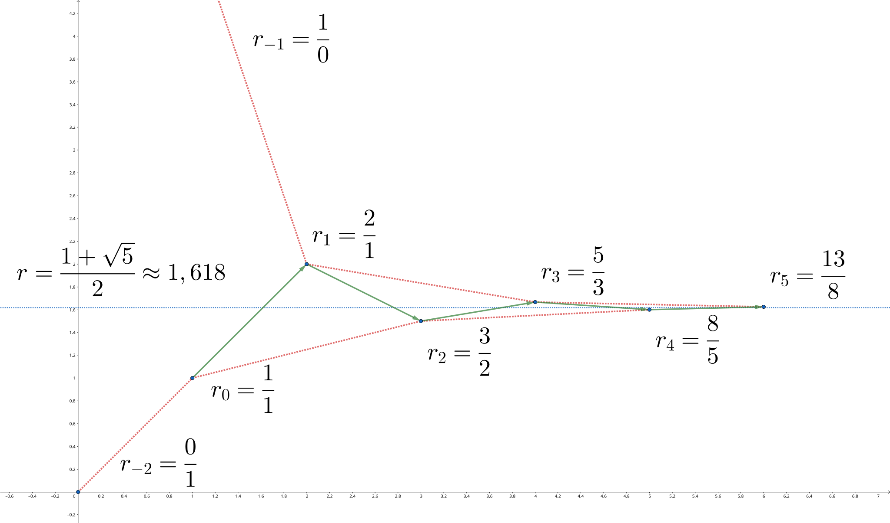
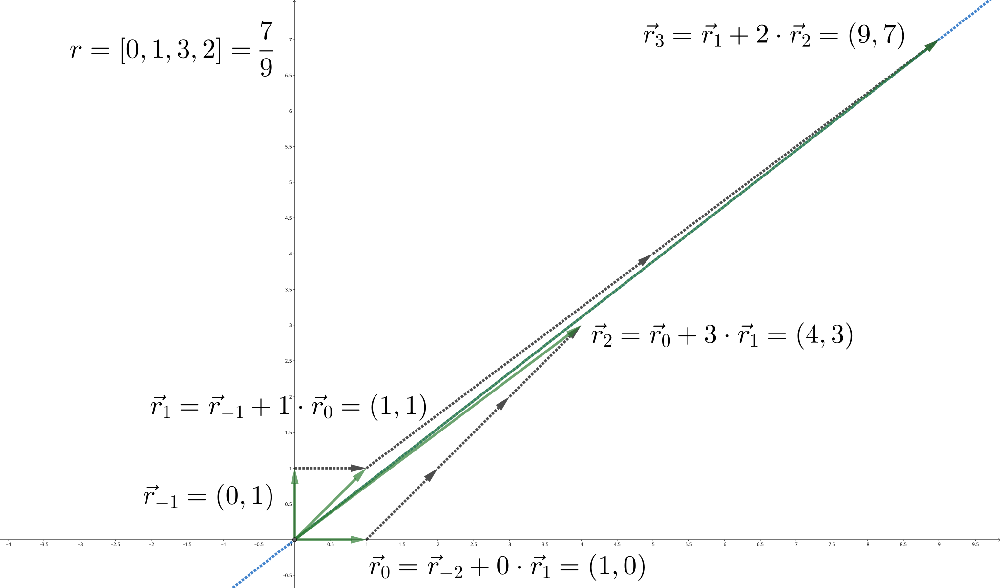
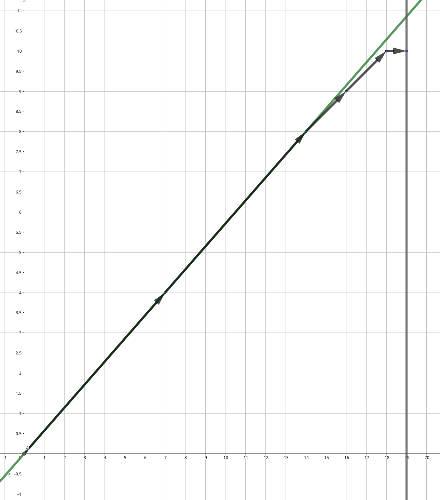

OI Wiki · prijevod · MatematikaOI Wiki · translation · Mathematics
Verižni razlomciContinued fractions
Sadržaj
Uvod
Verižni razlomci omogućuju da se realan broj prikaže kao limes konvergentnog niza racionalnih brojeva. Racionalni brojevi u tom nizu lako se računaju i ujedno daju najbolje aproksimacije tog realnog broja, pa se verižni razlomci često koriste na algoritamskim natjecanjima. Osim toga, verižni razlomci usko su povezani s Euklidovim algoritmom, pa se mogu primijeniti na čitav niz problema iz teorije brojeva.
O implementacijama algoritama vezanih uz verižne razlomke
U ovom se članku daje niz implementacija algoritama s verižnim razlomcima; za neke od njih nije moguće jamčiti da svi cijeli brojevi koji se pojavljuju u međukoracima stanu u 32-bitne ili 64-bitne cjelobrojne varijable. U takvim slučajevima pogledajte odgovarajuću implementaciju u Pythonu ili u C++ implementaciji cjelobrojne varijable zamijenite klasom za aritmetiku velikih brojeva. Radi preglednosti, dio koda u ovom članku poziva funkcije implementirane ranije u tekstu, a da se njihova implementacija ne ponavlja.
Verižni razlomci
Verižni razlomak (continued fraction) sam po sebi samo je formalna oznaka.
Konačni verižni razlomak
Za niz \(\{a_k\}_{k=0}^n\) verižni razlomak \([a_0,a_1,\ldots,a_n]\) označava razvoj
Verižni razlomak ima smisla ako i samo ako odgovarajući razvoj ima smisla. Brojevi \(a_k\) nazivaju se članovi (terms) ili koeficijenti (coefficients) verižnog razlomka.
Oznake
Općenitiji verižni razlomci dopuštaju da brojnici u razvoju ne budu stalno jednaki \(1\); tada se mora prilagoditi i oznaka verižnog razlomka, što izlazi iz okvira ovog članka. Osim toga, u nekoj se literaturi prvi zarez „\(,\)” piše kao točka sa zarezom „\(;\)”; značenjem se to ne razlikuje od oznaka u ovom članku.
Dakako, verižni razlomci mogu se poopćiti i na beskonačne nizove.
Beskonačni verižni razlomak
Za beskonačan niz \(\{a_k\}_{k=0}^\infty\) verižni razlomak \([a_0,a_1,\ldots]\) označava limes
Verižni razlomak ima smisla ako i samo ako odgovarajući limes postoji. Pritom se \(x_k=[a_0,a_1,\ldots,a_k]\) naziva \(k\)-ta konvergenta (convergent) ili približni razlomak broja \(x\), a \(r_k=[a_k,a_{k+1},\ldots]\) naziva se \(k\)-ti ostatak ili potpuni kvocijent (complete quotient) broja \(x\). U skladu s tim, član \(a_k\) ponekad se naziva i \(k\)-ti parcijalni kvocijent (partial quotient).
Jednostavni verižni razlomci
U teoriji brojeva uglavnom se promatra slučaj u kojem su svi članovi verižnog razlomka cijeli brojevi.
Jednostavni verižni razlomak
Ako je u verižnom razlomku \([a_0,a_1,\ldots]\) broj \(a_0\) cijeli, a \(a_1,a_2,\ldots\) pozitivni cijeli brojevi, on se naziva jednostavni verižni razlomak (simple continued fraction), ili kraće samo verižni razlomak. Ako je niz \(\{a_i\}\) konačan, naziva se konačni (jednostavni) verižni razlomak; inače se naziva beskonačni (jednostavni) verižni razlomak. Nadalje, \(a_0\) se naziva njegov cijeli dio (integer part).
Ako nije drukčije rečeno, svi verižni razlomci spomenuti u ovom članku jednostavni su verižni razlomci. Može se dokazati da beskonačni jednostavni verižni razlomak nužno konvergira te da su ostatci jednostavnog verižnog razlomka uvijek pozitivni.
Verižni razlomci imaju sljedeća osnovna svojstva:
Svojstva
Neka je realan broj \(x=[a_0,a_1,a_2,\ldots]\). Tada vrijedi:
- za svaki \(k\in\mathbf Z\) vrijedi \(x+k=[a_0+k,a_1,a_2,\ldots]\);
- za realan broj \(x>1\) vrijedi \(a_0>0\), a njegova recipročna vrijednost je \(x^{-1}=[0,a_0,a_1,a_2,\ldots]\).
Konačni verižni razlomci odgovaraju racionalnim brojevima. Svaki racionalni broj može se prikazati verižnim razlomkom na točno dva načina, pri čemu je duljina jednog prikaza nužno neparna, a drugog parna. Jedina je razlika između ta dva načina to je li posljednji član jednak \(1\), tj.
Ta se dva verižna razlomka nazivaju prikazi verižnim razlomkom (continued fraction representation) racionalnog broja \(x\). Onaj čiji posljednji član nije jedan naziva se standardni prikaz, a onaj čiji je posljednji član jedan naziva se nestandardni prikaz.1
Primjer
Prikazi racionalnog broja \(x=\dfrac{5}{3}\) verižnim razlomkom jesu
Beskonačni verižni razlomci odgovaraju iracionalnim brojevima. Štoviše, svaki iracionalni broj može se prikazati verižnim razlomkom na jedinstven način, koji se naziva prikaz iracionalnog broja verižnim razlomkom.
Određivanje prikaza verižnim razlomkom
Da bismo odredili prikaz nekog realnog broja \(x\) verižnim razlomkom, dovoljno je primijetiti da njegov ostatak \(r_k\), ako nije cijeli broj, nužno zadovoljava
Pritom je \(r_{k+1}>1\). Stoga se, počevši od \(r_0=x\), može rekurzivno računati
Niz \(\{a_k\}\) koji nastaje tim postupkom uvijek je jednoznačno određen, osim ako neki ostatak \(r_k\) postane cijeli broj. Ako se dogodi da je \(r_k\) cijeli broj, postupak treba završiti, a može se po izboru ispisati odgovarajući standardni ili nestandardni prikaz.
Na algoritamskim natjecanjima najčešće se radi s racionalnim brojem \(x=\dfrac{p}{q}\). Tada je svaki ostatak \(r_k\) racionalan broj \(\dfrac{p_k}{q_k}\), a za \(k>0\), budući da je \(r_k>1\), uvijek vrijedi \(p_k>q_k\). Raspisivanjem gornje rekurzije dobiva se
Taj je postupak zapravo Euklidov algoritam primijenjen na \(p\) i \(q\). To također pokazuje da je za racionalan broj \(x=\dfrac{p}{q}\) duljina prikaza verižnim razlomkom \(O(\log\min\{p, q\})\). Složenost računanja prikaza racionalnog broja \(\dfrac{p}{q}\) također je \(O(\log\min\{p, q\})\).
Referentna implementacija
Za zadani brojnik \(p\) i nazivnik \(q\) razlomka ispisati niz koeficijenata verižnog razlomka \([a_0,a_1,\ldots,a_n]\).
// Find the continued fraction representation of P/Q.
auto fraction(int p, int q) {
std::vector<int> a;
while (q) {
a.push_back(p / q);
std::tie(p, q) = std::make_pair(q, p % q);
}
return a;
}
# Find the continued fraction representation of P/Q.
def fraction(p, q):
a = []
while q:
a.append(p // q)
p, q = q, p % q
return a
Konvergente
U definiciji verižnog razlomka uveden je pojam konvergente. Konvergente realnog broja upravo su konvergente njegova prikaza verižnim razlomkom: ako se u prikazu realnog broja \(x\) verižnim razlomkom zadrži samo prvih \(k\) članova, dobiveni verižni razlomak \(x_k\) naziva se \(k\)-ta konvergenta realnog broja \(x\). Konvergente \(x_k\) realnog broja \(x\) racionalni su brojevi, a niz \(\{x_k\}\) konvergira realnom broju \(x\).
Primjer: konvergente zlatnog reza
Prvih nekoliko konvergenti verižnog razlomka \(x=[1,1,1,1,\ldots]\) jesu
Indukcijom se može dokazati
gdje je \(\{F_k\}\) Fibonaccijev niz. Iz formule za njegov opći član slijedi
gdje je \(\phi=\dfrac{1+\sqrt{5}}{2}\) zlatni rez. Kad \(k\) teži u beskonačnost, vrijedi
Dakle, verižni razlomak \(x=[1,1,1,1,\ldots]\) prikazuje zlatni rez \(\phi\).
Te konvergente teže odgovarajućem realnom broju, pa se mogu upotrijebiti za njegovu aproksimaciju. Zbog toga je potrebno upoznati svojstva konvergenti.
Rekurzivne relacije
Najprije treba riješiti problem računanja konvergenti. Iako se konvergenta uvijek dobiva dodavanjem jednog člana na kraj verižnog razlomka, nije potrebno svaki put iznova računati njezinu vrijednost. Naime, konvergente zadovoljavaju sljedeću rekurzivnu relaciju:
Rekurzivna formula
Neka se za verižni razlomak \(x=[a_0,a_1,a_2,\ldots]\) njegova \(k\)-ta konvergenta \(x_k=[a_0,a_1,\ldots,a_k]\) jednoznačno zapiše kao neskrativi razlomak \(\dfrac{p_k}{q_k}\). Tada vrijedi
Početne vrijednosti rekurzije (formalni) su razlomci
Dokaz
Svaka je konvergenta konačni verižni razlomak. Već je spomenuto da je računanje konačnog verižnog razlomka zapravo isto što i provođenje Euklidova algoritma. No Euklidov algoritam daje sufiks verižnog razlomka, dok je za konvergente potreban njegov prefiks. Da bismo dobili taj prefiks, treba promotriti kako se verižni razlomak mijenja kad mu se doda jedan korak. U tu svrhu jedan korak Euklidova algoritma možemo prikazati množenjem matrica:
Vektor \((a_k,1)^{\mathrm{T}}\) predstavlja konačni verižni razlomak \([a_k]\); uzastopno množenje matricama slijeva odgovara uzastopnom dopisivanju koeficijenata verižnog razlomka s lijeve strane. Dopunjavanjem tog verižnog razlomka do konvergente \(x_k=\dfrac{p_k}{q_k}=[a_0,a_1,\ldots,a_k]\) dobiva se jednakost
Iz \(\det(M(a_0)M(a_1)\cdots M(a_{k-1}))=(-1)^{k}\) slijedi da ta matrična transformacija primitivni vektor \((a_k,1)^{\mathrm{T}}\) preslikava u \((p_k,q_k)^{\mathrm{T}}\), pa su \(p_k\) i \(q_k\) nužno relativno prosti. Drugi stupac matrice \(M(a_k)\) jest \((1,0)^{\mathrm{T}}\), a \(M(a_{k-1})(1,0)^{\mathrm{T}}=(a_{k-1},1)^{\mathrm{T}}\), pa se umnožak za taj stupac dobiva rekurzivnim uvrštavanjem. Dopunimo li taj stupac, dobivamo
Sada je dovoljno uvrstiti prvih \(k\) faktora matričnog umnoška i lako se dobiva rekurzivna formula za konvergente:
Oznake
Kad se u ovom članku konvergenta \(x_k\) zapisuje kao \(\dfrac{p_k}{q_k}\), uvijek se podrazumijeva da su brojnik \(p_k\) i nazivnik \(q_k\) zadani gornjom rekurzivnom relacijom. Prethodni dokaz pokazuje da se tako uvijek dobiva neskrativi prikaz konvergente.
Iz te rekurzije slijedi da se
nalazi između \(x_{k-1}\) i \(x_{k-2}\).
Na temelju rekurzivne relacije iz ovog odjeljka dobiva se sljedeći algoritam za računanje konvergenti:
Referentna implementacija
Za zadane koeficijente verižnog razlomka \(a_0,a_1,\ldots,a_n\) odrediti niz brojnika i nazivnika konvergenti \((p_0,q_0),(p_1,q_1),\ldots,(p_n,q_n)\).
// Find the convergents of a continued fraction A.
// Numerators and denominators stored separately in P and Q.
auto convergents(std::vector<int> a) {
std::vector<int> p = {0, 1};
std::vector<int> q = {1, 0};
for (auto it : a) {
p.push_back(p.back() * it + p.end()[-2]);
q.push_back(q.back() * it + q.end()[-2]);
}
return std::make_pair(p, q);
}
# Find the convergents of a continued fraction A.
# Numerators and denominators stored separately in P and Q.
def convergents(a):
p = [0, 1]
q = [1, 0]
for it in a:
p.append(p[-1] * it + p[-2])
q.append(q[-1] * it + q[-2])
return p, q
Kontinuante
Kontinuanta (continuant) potječe od međuveličina u rekurzivnoj relaciji za konvergente.2
Kontinuanta
Za svaki konačni niz kontinuanta se rekurzivno definira ovako:
- \(K(\varnothing)=1,\, K(a)=a\);
- za \(n\ge 1\), \(K(a_0,\ldots,a_n)=a_n K(a_0,\ldots,a_{n-1})+K(a_0,\ldots,a_{n-2})\).
Iz rekurzije za konvergente lako se vidi da se za \(x=[a_0,a_1,a_2,\ldots]\) njegova konvergenta \(\dfrac{p_k}{q_k}=[a_0,a_1,\ldots,a_k]\) može izraziti kontinuantama:
Drugim riječima, kontinuantama se mogu prikazati konačni verižni razlomci:
I prethodni matrični prikaz lako se zapisuje pomoću kontinuanti. Za \(k\ge 1\) vrijedi
Najvažnije svojstvo kontinuante njezina je simetričnost.
Simetričnost kontinuante
Za svaki konačni niz \((a_0,\ldots,a_n)\) vrijedi
Dokaz
Budući da je svaka matrica \(M(a)\) simetrična, transponiranjem njihova umnoška dobivamo
Usporedbom gornjih lijevih elemenata dvaju umnožaka odmah slijedi tvrdnja.
Zbog simetričnosti rekurzija za kontinuante može se zapisati i u obrnutom smjeru:
Prikaz kontinuante determinantom
Kontinuanta se može zapisati kao determinanta:
To je determinanta tridijagonalne matrice; razvojem od gornjeg lijevog kuta dobiva se obrnuta rekurzija, a razvojem od donjeg desnog kuta dobiva se rekurzija iz definicije.
Još jedno zanimljivo svojstvo kontinuante jest svojstvo spajanja.
Spajanje kontinuanti
Za dva neprazna niza \((a_1,\ldots,a_m)\) i \((b_1,\ldots,b_n)\) vrijedi
Dokaz
Dovoljno je matrični umnožak asocijativnošću razdvojiti na dva dijela. Neka je
tada vrijedi
To je upravo identitet iz svojstva spajanja.
To se svojstvo može iskoristiti za proučavanje međuveličina Euklidova algoritma. Na primjer, Heilbronn ga je upotrijebio za procjenu prosječnog broja koraka Euklidova algoritma3. U nastavku je natjecateljski zadatak u kojem se tim svojstvom rješava jedan problem sumiranja.
Luogu P17229 [Math×Girl²] 英雄变奏曲 (Herojske varijacije)
Zadani su pozitivan cijeli broj \(N\) i vrijednosti dviju cjelobrojnih funkcija \(g,h:\{1,2,\ldots,N\}\to\mathbf{Z}\) u svim točkama.
Za cijele brojeve \(x,y\) takve da je \(1\le y<x\le N\) neka je \(z=x\bmod y\) i rekurzivno definirajmo
Izračunajte
Ideja
Definicija funkcije \(f(x,y)\) u zadatku odgovara tijeku Euklidova algoritma. Prikažimo Euklidov algoritam verižnim razlomkom: neka je \(\dfrac{x}{y}=[a_0,a_1,\ldots,a_k]\) standardni prikaz konačnog verižnog razlomka. Tada je
Primjenom svojstva spajanja kontinuanti, razrežemo li kontinuantu na mjestu \(a_i\), dobivamo
Neka je
Iz svojstva da kontinuante prikazuju konačne verižne razlomke dobivamo
Uvjeti koje treba zadovoljiti jesu \(\gcd(X,Y)=\gcd(Z,W)=1\), \(1\le Y\le X\), \(1\le W\le Z\), \(XZ+YW=x\le N\). Čini se da smo konstruirali bijekciju između \((x,y,i)\) i \((X,Y,Z,W)\). No treba primijetiti da, budući da \(a_0\) može biti \(1\), verižni razlomak koji odgovara \(\dfrac{X}{Y}\) može biti nestandardni prikaz, dok je verižni razlomak koji odgovara \(\dfrac{Z}{W}\) nužno standardni prikaz (pa stoga ne može biti \(Z=W=1\)).
Izračunajmo sada doprinos četvorke \((X,Y,Z,W)\) izvornoj sumi nakon ove transformacije. Zaokruživanjem razlomka nadolje dobiva se prvi član verižnog razlomka, čime dobivamo argumente funkcija. Zatim razlikujemo slučajeve za \((X,Y)\):
- \(Y>1\): i standardni i nestandardni prikaz od \(\dfrac{X}{Y}\) odgovaraju po jednoj trojci \((x,y,i)\), pa je doprinos \(2g\left(\left\lfloor\dfrac{X}{Y}\right\rfloor\right)h\left(\left\lfloor\dfrac{Z}{W}\right\rfloor\right)\);
- \(Y=1,X\ge2\): \(\dfrac{X}{Y}=X\) odgovara prikazima \([X]\) i \([X-1,1]\); pazite da je doprinos potonjeg drukčiji, pa je ukupni doprinos \((g(X)+g(X-1))h\left(\left\lfloor\dfrac{Z}{W}\right\rfloor\right)\);
- \(X=Y=1\): doprinos je \(g(1)h\left(\left\lfloor\dfrac{Z}{W}\right\rfloor\right)\).
Time smo vrlo nezgodnu sumu \(S(N)\) pretvorili u sljedeću sumu po \(X,Y,Z,W\) (uz dodatnu definiciju \(g(0)=2g(1)\)):
Ta se suma razmjerno lako obrađuje uobičajenim alatima, pa to ovdje ne raspisujemo.
Kao posljedice rekurzivne relacije za konvergente i svojstava kontinuanti vrijede sljedeći teorem o obrnutom poretku i teorem o recipročnoj vrijednosti:
Teorem o obrnutom poretku
Neka je \(\dfrac{p_k}{q_k}\) \(k\)-ta konvergenta realnog broja \(x=[a_0,a_1,a_2,\ldots]>0\). Tada su omjeri brojnika odnosno nazivnika dviju susjednih konvergenti
Ako je \(a_0=0\) i \(k\ge 2\), prvi verižni razlomak treba shvatiti kao odrezan na pretposljednjem članu, tj. \([a_k,a_{k-1},\ldots,a_2]\).
Dokaz
Iz prikaza kontinuantama slijedi
Ako je \(a_0\neq 0\), tada je
Ako je \(a_0=0\), iz rekurzije za kontinuante vrijedi \(K(0,a_1,a_2,\ldots,a_k)=K(a_2,\ldots,a_k)\), pa je
Teorem o recipročnoj vrijednosti
Recipročne vrijednosti konvergenti realnog broja \(x>0\) konvergente su broja \(x^{-1}\).
Dokaz
Bez smanjenja općenitosti neka je \(x>1\) s prikazom \([a_0,a_1,a_2,\ldots]\); tada je prikaz broja \(x^{-1}\) verižnim razlomkom \([0,a_0,a_1,a_2,\ldots]\). Njihove konvergente dobivaju se iz rekurzivne relacije. Pritom za \(x\) vrijede početni uvjeti \(x_{-2}=\dfrac{0}{1}\) i \(x_{-1}=\dfrac{1}{0}\), a za \(y=x^{-1}\) početni uvjeti \(y_{-1}=\dfrac{1}{0}\) i \(y_{0}=\dfrac{0}{1}\). Stoga je \(x_{-2}=(y_{-1})^{-1}\) i \(x_{-1}=(y_0)^{-1}\). Iz rekurzivne relacije slijedi \(x_k=y_{k+1}^{-1}\). To pokazuje da su recipročne vrijednosti konvergenti broja \(x\) konvergente broja \(y=x^{-1}\). Slučaj \(0<x\le 1\) razmatra se analogno.
Procjena pogreške
Pomoću rekurzivne formule za konvergente može se procijeniti pogreška koja nastaje aproksimiranjem realnog broja konvergentom.
Najprije izračunajmo razliku susjednih konvergenti:
Razlika konvergenti
Neka je \(x_k=\dfrac{p_k}{q_k}\) \(k\)-ta konvergenta realnog broja \(x\). Tada vrijedi
Stoga je razlika dviju susjednih konvergenti
Dokaz
Iz rekurzivne relacije slijedi
To je upravo \(p_{k+1}q_k - p_kq_{k+1} = (-1)^k\). Dijeljenjem obiju strana s \(q_{k+1}q_k\) dobiva se tvrdnja o \(x_{k+1}-x_k\).
Prema tome, konvergente s neparnim indeksom uvijek su veće od obiju susjednih, a konvergente s parnim indeksom uvijek su manje od obiju susjednih: konvergente se mijenjaju alternirajuće.
Promatramo li samo konvergente s parnim (neparnim) indeksom, taj je niz monotono rastući (padajući). Naime,
pozitivno je (negativno) kad je \(k\) paran (neparan). Istodobno, zbog rekurzije \(q_{k}=a_kq_{k-1}+q_{k-2}\) nazivnici \(q_k\) ne rastu sporije od Fibonaccijeva niza. Stoga razlika dviju susjednih konvergenti nužno teži nuli. To pokazuje da se konvergente s parnim indeksom odozdo, a one s neparnim indeksom odozgo približavaju istom limesu. Time je dokazano da beskonačni jednostavni verižni razlomak uvijek konvergira. Kako se konvergente približavaju odgovarajućem realnom broju prikazano je na sljedećoj slici:

Gornja (donja) konvergenta
Za realan broj \(x\) i njegovu konvergentu \(x_k\): ako je \(x_k>x\) (\(x_k<x\)), \(x_k\) se naziva gornja (donja) konvergenta (upper (lower) convergent) broja \(x\).
Već je pokazano da su gornje konvergente upravo konvergente s neparnim indeksom, a donje konvergente one s parnim indeksom.
Pomoću formule za razliku realan broj \(x\) može se zapisati kao alternirajući red:
Konvergente i ostatci iz definicije verižnog razlomka upravo su parcijalne sume i ostatci tog reda.
Pomoću formule za razliku može se i izravno procijeniti pogreška aproksimacije realnog broja konvergentom:
Pogreška
Neka je \(x_k=\dfrac{p_k}{q_k}\neq x\) \(k\)-ta konvergenta realnog broja \(x\). Tada vrijedi
gdje je \(r_{k+1}\) \(k+1\)-vi ostatak realnog broja \(x\). Nadalje, vrijedi
Dokaz
Budući da je \(x=[a_0,a_1,\ldots,a_k,r_{k+1}]\) i da formula za razliku konvergenti vrijedi i za formalne verižne razlomke, imamo
gdje je \(r_{k+1}q_k+q_{k-1}\) upravo nazivnik \(k+1\)-ve konvergente tog formalnog verižnog razlomka dobiven rekurzivnom formulom.
Da bismo dovršili procjenu nejednakostima, dovoljno je uočiti da za \(x_k\neq x\) uvijek vrijedi
pa je
Odatle slijedi nejednakost
Za vanjske ocjene dovoljno je još primijetiti da je \(q_k\le q_{k+1}\).
Formula za razliku iz ovog odjeljka ima još jednu jednostavnu posljedicu: konvergente \(\dfrac{p_k}{q_k}\) uvijek su neskrativi razlomci.
Korolar
Za svaki realan broj \(x\), ako su brojnik i nazivnik konvergente \(x_k=\dfrac{p_k}{q_k}\) zadani rekurzivnom formulom, \(\dfrac{p_k}{q_k}\) je neskrativ razlomak, tj. \(\gcd(p_k,q_k)=1\).
Dokaz
Dovoljno je na formulu za razliku primijeniti Bézoutov teorem.
Zapravo se i rješenja linearne diofantske jednadžbe s dvije nepoznanice mogu dobiti metodom verižnih razlomaka.
Rješavanje linearne diofantske jednadžbe s dvije nepoznanice
Zadani su \(A, B, C \in \mathbf Z\). Pronađite \(x, y \in \mathbf Z\) takve da vrijedi \(Ax + By = C\).
Rješenje
Iako se taj problem obično rješava proširenim Euklidovim algoritmom, jednako se može riješiti i verižnim razlomcima.
Neka je \(\dfrac{A}{B}=[a_0, a_1, \ldots, a_k]\). Gore je dokazano \(p_k q_{k-1} - p_{k-1} q_k = (-1)^{k-1}\). Zamijenimo li \(p_k\) i \(q_k\) s \(A\) i \(B\), dobivamo
gdje je \(g = \gcd(A, B)\). Ako \(g\) dijeli \(C\), jedno je rješenje \(x = (-1)^{k-1}\dfrac{C}{g} q_{k-1}\) i \(y = (-1)^{k}\dfrac{C}{g} p_{k-1}\); inače rješenja nema.
// Return (x,y) such that Ax+By=C.
// Assume that such (x,y) exists.
auto dio(int A, int B, int C) {
std::vector<int> p, q;
std::tie(p, q) = convergents(fraction(A, B));
C /= A / p.back();
int t = p.size() % 2 ? -1 : 1;
return std::make_pair(t * C * q.end()[-2], -t * C * p.end()[-2]);
}
# Return (x, y) such that Ax+By=C.
# Assume that such (x, y) exists.
def dio(A, B, C):
p, q = convergents(fraction(A, B))
C //= A // p[-1] # divide by gcd(A, B)
t = (-1) if len(p) % 2 else 1
return t * C * q[-2], -t * C * p[-2]
Diofantska aproksimacija
Važna primjena teorije verižnih razlomaka jest teorija diofantske aproksimacije. Diofantska aproksimacija (Diophantine approximation) označava aproksimiranje realnih brojeva racionalnima. Dakako, zbog gustoće racionalnih brojeva, bez ikakvih ograničenja mogu se dobiti aproksimacije s proizvoljno malom pogreškom. Zato je potrebno ograničiti racionalne brojeve koji se smiju upotrijebiti, primjerice dopustiti samo racionalne brojeve s nazivnikom manjim od neke vrijednosti. U ovom se odjeljku razmatra veza između najboljih aproksimacija uz takvo ograničenje i verižnih razlomaka.
Aproksimacija realnih brojeva konvergentama
Najprije, iz procjene pogreške konvergenti odmah slijedi sljedeći rezultat:
Teorem (Dirichlet)
Za iracionalan broj \(x\) postoji beskonačno mnogo neskrativih razlomaka \(\dfrac{p}{q}\) za koje vrijedi
Dokaz
Prema procjeni pogreške konvergenti, za \(k\)-tu konvergentu \(x_k=\dfrac{p_k}{q_k}\) iracionalnog broja \(x\) vrijedi
Pregledom dokaza formule za pogrešku vidi se da za iracionalan broj \(x\) jednakost nikad ne nastupa. Stoga brojnici i nazivnici svih njegovih konvergenti zadovoljavaju traženi uvjet.
Taj se teorem može smatrati i posljedicom Dirichletova teorema o aproksimaciji. To je gotovo najbolji mogući rezultat. Eksponent \(2\) u nazivniku na desnoj strani nejednakosti ne može se više poboljšati, ali konstanta može. Hurwitzov teorem kaže da se desna strana nejednakosti može smanjiti na \(\dfrac{1}{\sqrt{5}q^2}\) i da je to najbolja moguća granica.
Hurwitzov teorem
Za iracionalan broj \(x\) postoji beskonačno mnogo neskrativih razlomaka \(\dfrac{p}{q}\) za koje vrijedi
i pritom se \(\sqrt{5}\) na desnoj strani nejednakosti ne može zamijeniti većim realnim brojem.
Dokaz (Borel)
Borel je zapravo dokazao da među svake tri uzastopne konvergente iracionalnog broja \(x\) barem jedna zadovoljava gornji uvjet. Budući da konvergenti ima beskonačno mnogo i sve su neskrativi razlomci, prvi dio Hurwitzova teorema nužno vrijedi.
Dokazujemo kontradikcijom. Pretpostavimo da postoje iracionalan broj \(x\) i njegove konvergente \(x_{k-1},x_k,x_{k+1}\) takve da vrijedi
Budući da susjedne konvergente nužno leže s različitih strana od \(x\), iz formule za razliku slijedi
To se može zapisati kao nejednakost za kvocijent \(\dfrac{q_{k}}{q_{k-1}}\):
Budući da je lijeva strana racionalna, a desna iracionalna, jednakost se ne može postići. Kako je još \(q_k\ge q_{k-1}\), rješavanjem dobivamo
Analogno se dokazuje
No prema rekurzivnoj formuli i kombiniranjem tih dviju nejednakosti slijedi
što je u suprotnosti s definicijom jednostavnog verižnog razlomka. Dakle, Borelova tvrdnja vrijedi.
Da bismo pokazali da je tako dobivena granica najbolja, dovoljno je pronaći \(x\) takav da za svaki \(C>\sqrt{5}\) postoji samo konačno mnogo neskrativih razlomaka \(\dfrac{p}{q}\) koji zadovoljavaju nejednakost
U nastavku dokazujemo da je \(\phi=\dfrac{\sqrt{5}+1}{2}\) takav \(x\).5
Neka je \(\phi'=\dfrac{-\sqrt{5}+1}{2}\) konjugirani korijen od \(\phi\). Oba su korijeni jednadžbe \(x^2-x-1=0\). Stoga za svaki realan \(x\) vrijedi
Uvrštavanjem neskrativog razlomka \(\dfrac{p}{q}\) dobivamo
Za \(C>\sqrt{5}\) odatle se izravno dobiva \(q<\dfrac{1}{\sqrt{C(C-\sqrt{5})}}\), pa ne može postojati beskonačno mnogo rješenja gornje nejednakosti.
Dokazi tih teorema pokazuju da konvergente daju vrlo dobre diofantske aproksimacije. No to ne moraju biti najbolje aproksimacije. Da bismo govorili o najboljim aproksimacijama, moramo precizirati mjeru kvalitete aproksimacije. Za to obično postoje dva izbora.
Mogući slučajevi u kojima tvrdnje o najboljim aproksimacijama ne vrijede
U sljedeća dva odjeljka iznose se rezultati o najboljim aproksimacijama. Ti rezultati možda ne vrijede u pojedinim nezanimljivim slučajevima. Na primjer, obje definicije najbolje aproksimacije zahtijevaju strogu nejednakost, ali za polucijeli broj \(x=n+\dfrac12\), \(n\in\mathbf Z\), njegov verižni razlomak može imati oblik \([n,1,1]\). Tada njegove prve dvije konvergente \(x_0=n\) i \(x_1=n+1\) imaju nazivnik \(1\) i jednako su udaljene od \(x\). To znači da nijedna od njih nije najbolja aproksimacija. Pri čitanju tvrdnji u ovom odjeljku čitatelj treba podrazumijevati da su takvi slučajevi isključeni. Ako čitatelja ne zanima posljednjih nekoliko konvergenti ili ga zanima samo aproksimacija iracionalnih brojeva, na te dodatne komplikacije ne mora obraćati pozornost.
Najbolja aproksimacija prve vrste: međurazlomci
Najbolja aproksimacija prve vrste kvalitetu aproksimacije mjeri veličinom
Najbolja aproksimacija prve vrste
Za realan broj \(x\) i racionalan broj \(\dfrac{p}{q}\): ako za svaki \(\dfrac{p'}{q'}\neq \dfrac{p}{q}\) s \(0<q'\le q\) vrijedi
racionalan broj \(\dfrac{p}{q}\) naziva se najbolja aproksimacija prve vrste (best approximation of the first kind) realnog broja \(x\).
Najbolja aproksimacija prve vrste ne mora biti konvergenta; riječ je o široj klasi razlomaka.
Međurazlomak
Neka realan broj \(x\) ima konvergentu \(x_{k+1}=[a_0,a_1,\ldots,a_k,a_{k+1}]\) i neka je \(t\) cijeli broj takav da je \(0\le t\le a_{k+1}\)6. Tada se razlomak \(x_{k,t}=[a_0,a_1,\ldots,a_{k},t]\) naziva međurazlomak (intermediate fraction), polukonvergenta (semiconvergent) ili sekundarna konvergenta (secondary convergent) broja \(x\).7
Slično kao kod konvergenti, međurazlomak veći (manji) od \(x\) naziva se gornji (donji) međurazlomak (upper (lower) semiconvergent).
Prema rekurzivnoj formuli međurazlomak se može zapisati kao
On je nužno neskrativ razlomak i leži između konvergenti \(x_{k-1}\) i \(x_{k+1}\). S porastom \(t\) postupno se približava \(x_{k+1}\) (na primjeru parnog \(k\)):
Budući da brojnici i nazivnici konvergenti rastu, brojnik i nazivnik međurazlomka \(x_{k,t}\) (\(t\neq 0\)) leže između onih od \(x_{k}\) i \(x_{k+1}\). Poredamo li te razlomke po veličini nazivnika, međurazlomci su upravo razlomci koji se nalaze između susjednih konvergenti.
Sve najbolje aproksimacije prve vrste međurazlomci su, ali nisu svi međurazlomci najbolje aproksimacije prve vrste.
Teorem
Sve najbolje aproksimacije prve vrste međurazlomci su.
Dokaz
Budući da je \(a_0\le x\le a_0+1\), najbolja aproksimacija prve vrste nužno leži između \(x_{1,0}=a_0\) i \(x_{0,1}=a_0+1\). Svi se međurazlomci od najmanjeg prema najvećem mogu poredati ovako:
Međurazlomci istog reda pojavljuju se uzastopno, a između međurazlomaka različitih redova nema praznina. To znači da svaki racionalan broj \(\dfrac{p}{q}\) između \(x_{1,0}=a_0\) i \(x_{0,1}=a_0+1\) nužno pada između dvaju međurazlomaka istog reda \(x_{k,t}\) i \(x_{k,t+1}\). Bez smanjenja općenitosti pretpostavimo da on nije međurazlomak i da je manji od \(x\), pa vrijedi
Tada s jedne strane imamo
S druge strane vrijedi
Stoga nužno vrijedi
Drugim riječima, nazivnik racionalnog broja \(\dfrac{p}{q}\) sigurno je veći od nazivnika od \(x_{k,t+1}\), ali on nije bolja aproksimacija:
Stoga ne može biti najbolja aproksimacija prve vrste. To pokazuje da ono što nije međurazlomak nije ni najbolja aproksimacija prve vrste; dakle, sve su najbolje aproksimacije prve vrste međurazlomci.
Obratno, ne može se tvrditi da su svi međurazlomci najbolje aproksimacije prve vrste. Ipak, može se dati uvjet pod kojim međurazlomak jest najbolja aproksimacija prve vrste.
Teorem
Sve su konvergente najbolje aproksimacije prve vrste. Osim toga, neka je \(0<t<a_{k+1}\); tada je međurazlomak \(x_{k,t}\) najbolja aproksimacija prve vrste ako i samo ako je \(t>\dfrac{a_{k+1}}{2}\) ili je \(t=\dfrac{a_{k+1}}{2}\) i \(r_{k+2}>\dfrac{q_k}{q_{k-1}}\).
Dokaz
U nastavku će se dokazati da su sve konvergente najbolje aproksimacije druge vrste, pa su stoga nužno i najbolje aproksimacije prve vrste. Ključni su međurazlomci koji nisu konvergente.
Već je rečeno da nazivnik međurazlomka \(x_{k,t}\) leži između nazivnika od \(x_k\) i \(x_{k+1}\) i raste s porastom \(t\), dok se \(x_{k,t}\) pritom približava \(x_{k+1}\), a time i \(x\). Na primjeru \(x_{k,t}<x\), njegov međusobni položaj sa susjednim međurazlomcima zadovoljava:
Budući da je nazivnik od \(x_k\) manji od nazivnika od \(x_{k,t}\), nužan uvjet da \(x_{k,t}\) bude najbolja aproksimacija prve vrste jest da je bliži \(x\) nego \(x_k\). To je ujedno i dovoljan uvjet: kao konvergenta, \(x_k\) nema konkurenta s manjim nazivnikom a manjom udaljenošću, dok su međurazlomci s nazivnikom većim od nazivnika od \(x_k\) nužno istog reda kao \(x_{k,t}\), ali s manjim nazivnikom, pa su nužno udaljeniji od \(x\). Za pogreške konvergente i međurazlomka računom se dobiva
Pritom je iskorišteno \(r_{k+1}\ge a_{k+1}>t\). Stoga je \(x_{k,t}\) bliži \(x\) nego \(x_k\), odnosno najbolja aproksimacija prve vrste, ako i samo ako
Tada postoje tri moguća slučaja:
- Ako je \(t<\dfrac{a_{k+1}}{2}\), tada je \(2t<a_{k+1}\). Budući da su obje strane cijeli brojevi, vrijedi \(2t\le a_{k+1}-1\), pa je \(2t+\dfrac{q_{k-1}}{q_k}\le 2t+1\le a_{k+1}\le r_{k+1}\). Tada \(x_{k,t}\) nije najbolja aproksimacija prve vrste;
- Ako je \(t>\dfrac{a_{k+1}}{2}\), tada je \(2t>a_{k+1}\). Budući da su obje strane cijeli brojevi, vrijedi \(2t\ge a_{k+1}+1>r_{k+1}\). Tada \(x_{k,t}\) jest najbolja aproksimacija prve vrste;
- Ako je \(a_{k+1}\) paran, postoji i treći slučaj, \(t=\dfrac{a_{k+1}}{2}\). Gornji je uvjet tada ekvivalentan s \(\dfrac{1}{r_{k+2}}=r_{k+1}-a_{k+1}<\dfrac{q_{k-1}}{q_k}\), odnosno s \(r_{k+2}>\dfrac{q_k}{q_{k-1}}\).
Prema tome, poredamo li sve najbolje aproksimacije prve vrste realnog broja \(x\) po veličini nazivnika od najmanjeg prema najvećem, one se prema odnosu veličine prema \(x\) dijele na nekoliko segmenata. Svaki se segment uvijek sastoji od nekoliko (moguće i nijednog) uzastopnih međurazlomaka istog reda i uvijek završava konvergentom. Unutar segmenta svi su s iste strane realnog broja \(x\), a segmenti se izmjenjuju s obiju strana od \(x\).
Primjer: najbolje aproksimacije prve vrste broja \(\pi\)
Broj \(\pi=[3,7,15,1,292,\ldots]\), pa je njegovih prvih 15 najboljih aproksimacija prve vrste s najmanjim nazivnicima:
Najbolja aproksimacija druge vrste
Najbolja aproksimacija druge vrste kvalitetu aproksimacije mjeri veličinom \(|qx-p|\).
Najbolja aproksimacija druge vrste
Za realan broj \(x\) i racionalan broj \(\dfrac{p}{q}\): ako za svaki \(\dfrac{p'}{q'}\neq \dfrac{p}{q}\) s \(0<q'\le q\) vrijedi
racionalan broj \(\dfrac{p}{q}\) naziva se najbolja aproksimacija druge vrste (best approximation of the second kind) realnog broja \(x\).
Uvjet najbolje aproksimacije druge vrste ekvivalentan je s
Budući da je \(q'\le q\), uvjet najbolje aproksimacije druge vrste stroži je od uvjeta najbolje aproksimacije prve vrste.
Najbolje aproksimacije druge vrste mogu biti samo konvergente i upravo su one.
Teorem
Sve najbolje aproksimacije druge vrste nužno su konvergente, a sve su konvergente nužno najbolje aproksimacije druge vrste.
Dokaz
Za dokaz prvog dijela, budući da je najbolja aproksimacija druge vrste ujedno i najbolja aproksimacija prve vrste, dovoljno je dokazati da međurazlomak koji nije konvergenta ne može biti najbolja aproksimacija druge vrste. U tu svrhu neka je \(x_{k,t}=\dfrac{p}{q}\) međurazlomak koji nije konvergenta; uz \(x_{k,t}<x\) vrijedi
Budući da je pogreška između \(x_{k,t}\) i \(x\)
primjenom procjene pogreške konvergenti uvijek vrijedi
tj. \(x_{k,t}\) ne aproksimira bolje od \(x_k\), koji ima manji nazivnik, pa ne može biti najbolja aproksimacija druge vrste.
Obratno, za dokaz drugog dijela treba pokazati da je svaka konvergenta \(x_k=\dfrac{p_k}{q_k}\) najbolja aproksimacija druge vrste. Dakle, treba pokazati da za sve razlomke \(\dfrac{p}{q}\) s \(q\le q_k\) vrijedi \(|q_kx-p_k|<|qx-p|\). Ne razmatrajući slučaj polucijelih brojeva, možemo pretpostaviti \(k>0\). Najprije, prema procjeni pogreške aproksimacije realnog broja konvergentama, vrijedi
Jednakost vrijedi u svim nejednakostima ako i samo ako je \(a_{k+1}=1\) i to je posljednji član verižnog razlomka. Ne razmatrajući takav slučaj, \(x_{k-1}=\dfrac{p_{k-1}}{q_{k-1}}\) strogo je lošiji od \(x_k=\dfrac{p_k}{q_k}\).
Uzmimo proizvoljan razlomak \(\dfrac{p}{q}\neq x_k\) s \(0<q\le q_k\). Budući da vrijedi formula za razliku \(p_{k}q_{k-1} - p_{k-1}q_{k} = (-1)^{k-1}\), prema Cramerovu pravilu sustav linearnih jednadžbi
nužno ima jedinstveno cjelobrojno rješenje \((\lambda,\mu)\). Ako je \(\lambda\mu>0\), tada je \(q>|\lambda|q_k\ge q_k\), što je kontradikcija. Inače je \(\lambda\mu\le 0\), tj. \(\lambda\) i \(\mu\) suprotnih su predznaka; kako su i \(q_{k-1}x-p_{k-1}\) i \(q_kx-p_k\) suprotnih predznaka, \(\lambda(q_{k-1}x-p_{k-1})\) i \(\mu(q_kx-p_k)\) istog su predznaka, pa je
Posljednja je nejednakost stroga jer je \(x_{k-1}\) strogo lošiji od \(x_k\) i \(\dfrac{p}{q}\neq x_k\). To pokazuje da je \(x_k\) najbolja aproksimacija druge vrste.
To svojstvo pokazuje da su konvergente doista vrlo dobre diofantske aproksimacije.
Prepoznavanje konvergenti
Najbolja aproksimacija druge vrste daje nužan i dovoljan uvjet za to je li neki razlomak konvergenta. To znači da se provjerom relativne kvalitete aproksimacije može utvrditi je li razlomak konvergenta. Legendreov kriterij daje način prepoznavanja konvergenti prema apsolutnoj kvaliteti aproksimacije. Izvorna formulacija Legendreova kriterija daje nužan i dovoljan uvjet, ali njezin oblik nije praktičan. U ovom se odjeljku daje pojednostavljena verzija Legendreova kriterija i pokazuje da ona ne propušta previše konvergenti.
Teorem (Legendre)
Za realan broj \(x\) i razlomak \(\dfrac{p}{q}\): ako vrijedi
tada je \(\dfrac{p}{q}\) nužno konvergenta broja \(x\).
Dokaz
Neka su \(\epsilon\in\{-1,1\}\) i \(\theta\in(0,1/2)\) konstante za koje vrijedi
Razvijmo racionalan broj \(\dfrac{p}{q}\) u verižni razlomak \([a_0,a_1,\ldots,a_n]\). Racionalan broj ima dva prikaza verižnim razlomkom čiji se \(n\) razlikuju točno za jedan, pa možemo odabrati prikaz takav da je \((-1)^n=\epsilon\); konvergente tog prikaza označimo s \(\dfrac{p_k}{q_k}\). Neka realan broj \(\omega\) zadovoljava
Tada nužno vrijedi
Stoga je
To pokazuje da je
Razvijemo li i \(\omega\) u verižni razlomak \([b_0,b_1,\ldots]\), dobivamo
To je valjan jednostavni verižni razlomak, pa je \(\dfrac{p}{q}\) konvergenta broja \(x\).
Taj dokaz zapravo pokazuje da je nužan i dovoljan uvjet da \(\dfrac{p}{q}\) bude konvergenta upravo \(\omega>1\) iz gornjeg dokaza; to je izvorni oblik Legendreova kriterija.
Taj kriterij pokazuje da je razlomak sigurno konvergenta čim je aproksimacija dovoljno dobra. Sljedeći teorem pokazuje da je tako dobrih konvergenti dovoljno mnogo: barem polovica konvergenti zadovoljava taj uvjet.
Teorem (Vahlen)
Od dviju susjednih konvergenti realnog broja \(x\) barem jedna zadovoljava
Dokaz
Pretpostavimo suprotno. Postoji realan broj \(x\) s dvjema susjednim konvergentama \(x_k\) i \(x_{k+1}\) takvima da je
Budući da \(x\) leži između \(x_k\) i \(x_{k+1}\), vrijedi
To pokazuje da je \(q_k=q_{k+1}\). Stoga nužno vrijedi \(k=0\) i \(a_1=1\). Tada su prve dvije konvergente \(x_0=a_0\) i \(x_1=a_0+1\). Dakle, jedini su protuprimjeri tvrdnji polucijeli brojevi, a prema ranijoj napomeni taj se slučaj u ovom članku ne razmatra.
Geometrijska interpretacija
Teorija verižnih razlomaka ima lijepu geometrijsku interpretaciju.

Kao na slici, za realan broj \(\xi>0\) pravac \(y=\xi x\) dijeli cjelobrojne točke (lattice points) prvog kvadranta (uključujući točke na koordinatnim osima \(x\) i \(y\), ali bez ishodišta; isto vrijedi u nastavku) na gornji i donji dio. Za racionalan \(\xi\) točke na pravcu \(y=\xi x\) ubrajaju se i u točke iznad pravca i u točke ispod pravca. Promotrimo konveksne ljuske tih dvaju skupova točaka. Tada su konvergente s neparnim indeksom vrhovi konveksne ljuske gornjeg dijela, a konvergente s parnim indeksom vrhovi konveksne ljuske donjeg dijela. Cjelobrojne točke na spojnici dvaju susjednih vrhova konveksne ljuske upravo su međurazlomci. Na slici su prikazane konvergente i međurazlomci (sive točke) za \(\xi=\dfrac{9}{7}\).
Većina prethodnih zaključaka o verižnim razlomcima ima odgovarajuću geometrijsku interpretaciju:
Geometrijska interpretacija
- Svakom razlomku \(\nu=\dfrac{p}{q}\) odgovara cjelobrojna točka \(\vec\nu=(q,p)\) u prvom kvadrantu, a veličini razlomka odgovara nagib spojnice s ishodištem.
-
Vektor smjera pravca \(y=\xi x\) jest \(\vec\xi=(1,\xi)\). Pomoću pojma vektorskog produkta \((x_1,y_1)\times(x_2,y_2)=x_1y_2-x_2y_1\) po predznaku od \(\vec\xi\times\vec\nu=p-q\xi\) može se odrediti leži li točka iznad ili ispod pravca. Stoga točkama iznad pravca odgovaraju razlomci veći ili jednaki \(\xi\), a točkama ispod pravca razlomci manji ili jednaki \(\xi\). Apsolutna vrijednost produkta \(|\vec\xi\times\vec\nu|\) proporcionalna je udaljenosti točke \(\vec\nu\) od pravca \(y=\xi x\)
\[ \dfrac{|p-q\xi|}{\sqrt{1+\xi^2}}, \]što odgovara kvaliteti aproksimacije realnog broja \(\xi\) razlomkom \(\nu\).
-
Označimo li točku koja odgovara konvergenti \(\xi_k=\dfrac{p_k}{q_k}\) s \(\vec\xi_k=(q_k,p_k)\), rekurzivna se formula može zapisati kao
\[ \vec\xi_k = a_k\vec\xi_{k-1} + \vec\xi_{k-2}. \]Početak rekurzije čine \(\vec\xi_{-2} = (1,0)\) i \(\vec\xi_{-1} = (0,1)\).
-
Za cijeli broj \(t\) takav da je \(0\le t\le a_k\) točka
\[ \vec\xi_{k-1,t} = t\vec\xi_{k-1} + \vec\xi_{k-2} \]leži na dužini koja spaja točke \(\vec\xi_{k-2}\) i \(\vec\xi_k\). Te točke odgovaraju međurazlomcima \(\xi_{k-1,t}\).
-
Geometrijskom se metodom mogu konstruirati sve konvergente i međurazlomci. Krenimo od točaka \(\vec\xi_{-2}=(1,0)\) i \(\vec\xi_{-1}=(0,1)\); one leže s različitih strana pravca \(y=\xi x\), što znači da \(\vec\xi\times\vec\xi_{-2}\) i \(\vec\xi\times\vec\xi_{-1}\) imaju suprotne predznake. Dodajemo \(\vec\xi_{-1}\) zbrajanjem vektora na \(\vec\xi_{-2}\) sve dok daljnje dodavanje ne bi prešlo pravac \(y=\xi x\); rezultat označimo s \(\vec\xi_0\), koji je i dalje s druge strane od \(\vec\xi_{-1}\). Zatim dodajemo \(\vec\xi_0\) na \(\vec\xi_{-1}\) sve dok daljnje dodavanje ne bi prešlo pravac \(y=\xi x\); rezultat označimo s \(\vec\xi_1\), koji je i dalje s druge strane od \(\vec\xi_0\). Taj se postupak može nastaviti u beskonačnost, osim ako u konačno mnogo koraka neki \(\vec\xi_n\) padne točno na pravac \(y=\xi x\). Potonje znači da su vektori \(\vec\xi\) i \(\vec\xi_n\) kolinearni, tj. \(\xi=\dfrac{p_n}{q_n}\) racionalna je točka. Tim se postupkom dobiva slika s prethodnog crteža. Boris Delaunay slikovito je nazvao taj postupak algoritmom istezanja nosa (nose-stretching algorithm)10.
-
Ako je potrebno brzo izračunati koliko se puta u svakom koraku \(\vec\xi_{k-1}\) dodaje na \(\vec\xi_{k-2}\), može se iskoristiti vektorski produkt. Budući da \(\vec\xi\times\vec\xi_{k-1}\) i \(\vec\xi\times\vec\xi_{k-2}\) imaju suprotne predznake, ako s \(\vec\xi_{k-1,t}=t\vec\xi_{k-1}+\vec\xi_{k-2}\) označimo rezultat \(t\)-strukog dodavanja \(\vec\xi_{k-1}\) na \(\vec\xi_{k-2}\), tada \(\vec\xi\times\vec\xi_{k-1,t}=t(\vec\xi\times\vec\xi_{k-1})+(\vec\xi\times\vec\xi_{k-2})\) ne mijenja predznak upravo kad pravac nije prijeđen. Prije promjene predznaka apsolutna vrijednost \(\vec\xi\times\vec\xi_{k-1,t}\) postupno pada. Označimo
\[ r_{k} = \left|\dfrac{\vec\xi\times\vec\xi_{k-2}}{\vec\xi\times\vec\xi_{k-1}}\right| = -\dfrac{\vec\xi\times\vec\xi_{k-2}}{\vec\xi\times\vec\xi_{k-1}}. \]Tada je najveći mogući broj koraka pada
\[ a_{k} = \lfloor r_{k}\rfloor = \left\lfloor\left|\dfrac{q_{k-1}\xi-p_{k-1}}{q_{k-2}\xi-p_{k-2}}\right|\right\rfloor. \]To je upravo \(k\)-ti član razvoja u verižni razlomak. Štoviše, \(r_k\) upravo je ostatak razvoja u verižni razlomak i zadovoljava relaciju:
\[ r_k = -\dfrac{q_{k-1}\xi-p_{k-1}}{q_{k-2}\xi-p_{k-2}} \iff \xi = \dfrac{p_{k-1}r_k + p_{k-2}}{q_{k-1}r_k+q_{k-2}}. \]To je upravo relacija verižnog razlomka \(\xi = [a_0,a_1,\ldots,a_{k-1},r_k]\).
-
Budući da je korak promjene \(\vec\xi\times\vec\xi_{k-1,t}\) pri svakom dodavanju vektora jednak \(|\vec\xi\times\vec\xi_{k-1}|\), preostala udaljenost \(|\vec\xi\times\vec\xi_k|\) na kraju nužno je strogo manja od \(|\vec\xi\times\vec\xi_{k-1}|\). To pokazuje da kvaliteta aproksimacije konvergentama (mjerena s \(|qx-p|\)) strogo raste s porastom \(k\).
-
Prema pravilima računanja s vektorskim produktom vrijedi
\[ \vec\xi_{k}\times\vec\xi_{k+1} = \vec\xi_{k}\times(a_{k+1}\vec\xi_k+\vec\xi_{k-1}) = \vec\xi_{k}\times\vec\xi_{k-1} = -\vec\xi_{k-1}\times\vec\xi_{k}. \]Indukcijom slijedi
\[ \vec\xi_{k}\times\vec\xi_{k+1} = (-1)^{k+2}\vec\xi_{k-2}\times\vec\xi_{k-1} = (-1)^{k}. \]To je upravo formula za razliku konvergenti \(p_{k+1}q_k-p_kq_{k+1}=(-1)^k\).
-
Područje između gornje i donje konveksne ljuske može se razrezati na nekoliko (možda beskonačno mnogo) trokuta čiji su vrhovi redom \(\vec\xi_{k-2}\), \(\vec\xi_k\) i \(\vec 0\). Površina takvog trokuta jest
\[ \dfrac12|\vec\xi_{k-2}\times\vec\xi_k| = \dfrac12|\vec\xi_{k-2}\times(a_k\vec\xi_{k-1}+\vec\xi_{k-2})| = \dfrac{a_k}{2}|\vec\xi_{k-2}\times\vec\xi_{k-1}| = \dfrac{a_k}{2}. \]Prema Pickovu teoremu to znači da, označimo li s \(I\) i \(B\) redom broj cjelobrojnih točaka u unutrašnjosti i na rubu trokuta, vrijedi
\[ I + \dfrac{B}{2} - 1 = \dfrac{a_k}{2}. \]Već znamo da se na rubu trokuta nalaze cjelobrojne točke \(\{\vec 0\}\cup\{\vec\xi_{k-1,t}:0\le t\le a_k\}\), njih ukupno \(a_k+2\). To pokazuje da nužno vrijedi \(I=0\) i \(B=a_k+2\). Stoga na stranicama trokuta nema drugih cjelobrojnih točaka, a nema ih ni u unutrašnjosti trokuta. Drugim riječima, \(q_k\) i \(p_k\) relativno su prosti, međurazlomci su sve cjelobrojne točke na stranici koja spaja \(\vec\xi_{k-2}\) i \(\vec\xi_k\), a sve cjelobrojne točke prvog kvadranta leže unutar gornje ili donje konveksne ljuske.
Tako dobivene gornja i donja konveksna ljuska nazivaju se Kleinovi poligoni. Slična se definicija može dati i u višedimenzionalnom prostoru, čime se dobiva Kleinov poliedar (Klein polyhedron), kojim se pojam verižnog razlomka poopćuje na više dimenzije.
Stablo verižnih razlomaka
Glavni članak: Stern–Brocotovo stablo i Fareyev niz
Stern–Brocotovo stablo binarno je stablo pretraživanja koje sadrži sve razlomke iz \([0,\infty]\). Konačni verižni razlomak zapravo kodira put u Stern–Brocotovu stablu od korijena do položaja nekog razlomka. Drugim riječima, prikaz racionalnog broja \(x\) verižnim razlomkom \([a_0,a_1,\ldots,a_{n-1},1]\) znači da se od korijena \(\dfrac{1}{1}\) najprije \(a_0\) puta pomaknemo u desno dijete, zatim \(a_1\) puta u lijevo dijete, i tako naizmjence mijenjamo smjer sve dok se u nekom smjeru ne pomaknemo \(a_{n-1}\) puta. Valja uočiti da se ovdje smije koristiti samo prikaz verižnim razlomkom koji završava s \(1\).
Shvatimo li prikaz verižnim razlomkom kao put u Stern–Brocotovu stablu, dobivamo algoritam za usporedbu verižnih razlomaka po veličini.
Usporedba verižnih razlomaka
Zadani su verižni razlomci \(\alpha=[\alpha_0,\alpha_1,\ldots,\alpha_n]\) i \(\beta=[\beta_0,\beta_1,\ldots,\beta_m]\); usporedite ih po veličini.
Rješenje
Najprije oba prikaza verižnim razlomkom pretvorimo u oblik koji završava s \(1\). Bez smanjenja općenitosti pretpostavimo da su zadani verižni razlomci već takvog oblika, tj. \(\alpha_n=\beta_m=1\). Budući da parne pozicije (indeksi počinju od \(0\)) označavaju broj koraka udesno, a neparne pozicije broj koraka ulijevo, vrijedi \(\alpha<\beta\) ako i samo ako pri usporedbi u leksikografskom poretku vrijedi
U odnosu na prikaz verižnim razlomkom, naizmjence dodajemo predznake, brišemo završnu \(1\) i pozicije koje nedostaju popunjavamo s \(0\).
// Expand [..., n] to [..., n-1, 1] if needed.
void expand(std::vector<int>& a) {
if (a.size() == 1 || a.back() > 1) {
--a.back();
a.push_back(1);
}
}
// Check if a is smaller than b.
bool less_than(std::vector<int> a, std::vector<int> b) {
expand(a);
expand(b);
for (int i = 0; i < a.size() - 1 || i < b.size() - 1; ++i) {
int d = (i < a.size() - 1 ? a[i] : 0) - (i < b.size() - 1 ? b[i] : 0);
if (i & 1) d = -d;
if (d < 0) {
return true;
} else if (d > 0) {
return false;
}
}
return false;
}
# Expand [..., n] to [..., n-1, 1] if needed.
def expand(a):
if a[-1] != 1 or len(a) == 1:
a[-1] -= 1
a.append(1)
return a
# Check if a is smaller than b.
def less_than(a, b):
a = expand(a)
b = expand(b)
a = [(-1) ** i * a[i] for i in range(len(a))]
b = [(-1) ** i * b[i] for i in range(len(b))]
return a < b
Najbolja unutarnja točka
Za \(\dfrac{0}{1}\le\dfrac{p_0}{q_0}<\dfrac{p_1}{q_1}\le\dfrac{1}{0}\) pronađite racionalan broj \(\dfrac{p}{q}\) takav da vrijedi \(\dfrac{p_0}{q_0}<\dfrac{p}{q}<\dfrac{p_1}{q_1}\) i da je \((q,p)\) najmanji.
Rješenje
Budući da je Stern–Brocotovo stablo istodobno binarno stablo pretraživanja za razlomke iz \([0,\infty]\) i kartezijevo stablo za parove \((q,p)\), zadatak se gotovo može svesti na traženje LCA (najnižeg zajedničkog pretka) dvaju čvorova u Stern–Brocotovu stablu. Međutim, LCA obrađuje samo slučaj zatvorenog intervala; LCA može biti i sam krajnji čvor. Da bismo izbjegli dodatno razlikovanje slučajeva, možemo najprije konstruirati \(\dfrac{p_0}{q_0}+\varepsilon\) i \(\dfrac{p_1}{q_1}-\varepsilon\) pa zatim izračunati LCA. Kad su putevi od korijena do čvorova već izračunati verižnim razlomcima, za LCA je dovoljno uzeti najdulji zajednički put.
Da bismo konstruirali \(x\pm\varepsilon\), dovoljno je u čvoru \(x\) najprije se jednom pomaknuti udesno (ulijevo), a zatim \(\infty\) puta ulijevo (udesno). U jeziku verižnih razlomaka, za razlomak \(x=[a_0,a_1,\ldots,a_{n-1},1]\) znamo da su \(x\pm\varepsilon\) nužno \([a_0,a_1,\ldots,a_{n-1}+1,\infty]\) i \([a_0,a_1,\ldots,a_{n-1},1,\infty]\), pa je dovoljno usporediti ta dva verižna razlomka i veći (manji) definirati kao \(x\pm\varepsilon\).
// Get X +- EPSILON.
auto pm_eps(std::vector<int> a) {
constexpr int inf = 0x3f3f3f3f;
// Deal with empty continued fraction for 1/0.
if (a.empty()) {
a.emplace_back(inf);
}
auto b = a;
expand(b);
a.emplace_back(inf);
b.emplace_back(inf);
return less_than(a, b) ? std::make_pair(a, b) : std::make_pair(b, a);
}
// Find the lexicographically smallest (q, p)
// such that p0/q0 < p/q < p1/q1.
auto middle(int p0, int q0, int p1, int q1) {
auto a0 = pm_eps(fraction(p0, q0)).second;
auto a1 = pm_eps(fraction(p1, q1)).first;
std::vector<int> a;
for (int i = 0; i < a0.size() || i < a1.size(); ++i) {
if (a0[i] == a1[i]) {
a.emplace_back(a0[i]);
} else {
a.emplace_back(std::min(a0[i], a1[i]) + 1);
break;
}
}
auto pq = convergents(a);
return std::make_pair(pq.first.back(), pq.second.back());
}
# Get X +- EPSILON.
def pm_eps(a):
# Deal with empty continued fraction for 1/0.
if not a:
a.append(float("inf"))
b = expand(a.copy())
a.append(float("inf"))
b.append(float("inf"))
return (a, b) if less_than(a, b) else (b, a)
# Find the lexicographically smallest (q, p)
# such that p0/q0 < p/q < p1/q1.
def middle(p0, q0, p1, q1):
a0 = pm_eps(fraction(p0, q0))[1]
a1 = pm_eps(fraction(p1, q1))[0]
a = []
for i in range(min(len(a0), len(a1))):
if a0[i] == a1[i]:
a.append(a0[i])
else:
a.append(int(min(a0[i], a1[i])) + 1)
break
p, q = convergents(a)
return p[-1], q[-1]
GCJ 2019, Round 2 - New Elements: Part 2
Zadano je \(N\) parova pozitivnih cijelih brojeva \((C_i,J_i)\); pronađite par pozitivnih cijelih brojeva \((x,y)\) takav da je \(\{C_ix+J_iy\}\) strogo rastući. Među svim parovima koji zadovoljavaju uvjet ispišite leksikografski najmanji.
Rješenje
Neka je \(A_i=C_i-C_{i-1}\) i \(B_i=J_i-J_{i-1}\). Problem se svodi na traženje \((x,y)\) takvog da su svi \(A_ix+B_iy\) pozitivni. Ti se parovi mogu podijeliti u četiri slučaja:
- slučaj \(A_i,B_i>0\) može se zanemariti jer je već pretpostavljeno \((x,y)>0\);
- u slučaju \(A_i,B_i\le 0\) odmah ispisujemo „IMPOSSIBLE”;
- slučaj \(A_i>0,B_i\le 0\) odgovara ograničenju \(\dfrac{y}{x}<\dfrac{A_i}{-B_i}\);
- slučaj \(A_i\le 0,B_i>0\) odgovara ograničenju \(\dfrac{y}{x}>\dfrac{-A_i}{B_i}\).
Stoga za \(\dfrac{p_0}{q_0}\) uzmemo najveći \(\dfrac{-A_i}{B_i}\) iz četvrtog slučaja, a za \(\dfrac{p_1}{q_1}\) najmanji \(\dfrac{A_i}{-B_i}\) iz trećeg slučaja. Izvorni problem postaje pronalaženje leksikografski najmanjeg \((q,p)\) takvog da vrijedi \(\dfrac{p_0}{q_0}<\dfrac{p}{q}<\dfrac{p_1}{q_1}\).
void solve() {
int n;
std::cin >> n;
std::vector<int> C(n), J(n);
// p0/q0 < y/x < p1/q1
int p0 = 0, q0 = 1, p1 = 1, q1 = 0;
bool fail = false;
for (int i = 0; i < n; ++i) {
std::cin >> C[i] >> J[i];
if (i) {
int A = C[i] - C[i - 1];
int B = J[i] - J[i - 1];
if (A <= 0 && B <= 0) {
fail = true;
break;
} else if (B > 0 && A < 0) { // y/x > (-A)/B if B > 0
if ((-A) * q0 > p0 * B) {
p0 = -A;
q0 = B;
}
} else if (B < 0 && A > 0) { // y/x < A/(-B) if B < 0
if (A * q1 < p1 * (-B)) {
p1 = A;
q1 = -B;
}
}
}
}
if (fail || p0 * q1 >= p1 * q0) {
printf("IMPOSSIBLE\n");
} else {
auto pq = middle(p0, q0, p1, q1);
printf("%d %d\n", pq.first, pq.second);
}
}
def solve():
n = int(input())
C = [0] * n
J = [0] * n
# p0/q0 < y/x < p1/q1
p0, q0 = 0, 1
p1, q1 = 1, 0
fail = False
for i in range(n):
C[i], J[i] = map(int, input().split())
if i > 0:
A = C[i] - C[i - 1]
B = J[i] - J[i - 1]
if A <= 0 and B <= 0:
fail = True
break
elif B > 0 and A < 0: # y/x > (-A)/B if B > 0
if (-A) * q0 > p0 * B:
p0, q0 = -A, B
elif B < 0 and A > 0: # y/x < A/(-B) if B < 0
if A * q1 < p1 * (-B):
p1, q1 = A, -B
if fail or p0 * q1 >= p1 * q0:
return "IMPOSSIBLE"
p, q = middle(p0, q0, p1, q1)
return str(p) + " " + str(q)
Za više svojstava i primjena Stern–Brocotova stabla pogledajte njegov glavni članak.
Razlomljene linearne transformacije
Još jedan važan pojam povezan s verižnim razlomcima jest takozvana razlomljena linearna transformacija.
Razlomljena linearna transformacija
Razlomljena linearna transformacija (fractional linear transformation) funkcija je \(L:\mathbf R\rightarrow\mathbf R\) oblika
gdje su \(a,b,c,d\in\mathbf R\) i \(ad-bc\neq 0\).
O uvjetu \(ad-bc\neq 0\)
Lako se provjeri da za \(ad-bc=0\) funkcija može biti nedefinirana ili konstantna.
Razlomljene linearne transformacije imaju sljedeća svojstva:
Svojstva razlomljenih linearnih transformacija
Neka su \(L_1,L_2,L_3\) razlomljene linearne transformacije i neka je matrica koeficijenata od \(L_i\)
Tada vrijede sljedeća svojstva:8
- Kompozicija \(L_1\circ L_2\) i inverz \(L_1^{-1}\) razlomljenih linearnih transformacija opet su razlomljene linearne transformacije, tj. sve razlomljene linearne transformacije čine grupu;
- Razlomljena linearna transformacija ne mijenja se ako se svi koeficijenti pomnože istom konstantom različitom od nule, tj. za svaki \(\lambda\neq 0\), ako je \(M_2=\lambda M_1\), tada je \(L_2=L_1\);
- Matrica koeficijenata kompozicije razlomljenih linearnih transformacija odgovara umnošku matrica koeficijenata, tj. ako je \(M_1M_2=M_3\), tada je \(L_1\circ L_2=L_3\);
- Matrica koeficijenata inverza razlomljene linearne transformacije odgovara inverzu matrice koeficijenata, tj. ako je \(M_1^{-1}=M_2\), tada je \(L_1^{-1}=L_2\).
Dokaz
Ovdje dajemo samo oblik kompozicije i inverza razlomljenih linearnih transformacija. Kad se taj oblik dobije, sva se svojstva lako provjere.
Kompozicija razlomljenih linearnih transformacija \(L_1\) i \(L_2\):
Inverz razlomljene linearne transformacije \(L_1(x)\):
Konačni verižni razlomak \([a_0,a_1,\ldots,a_n]\) može se shvatiti kao rezultat kompozicije niza razlomljenih linearnih transformacija. Neka je
Tada je konačni verižni razlomak
Pritom je vrijednost razlomljene linearne transformacije \(L(x)=\dfrac{ax+b}{cx+d}\) u \(x=\infty\) jednaka \(\dfrac{a}{c}\), što je limes funkcije kad \(x\rightarrow\pm\infty\).
Za opći verižni razlomak, neka je \(r_{k+1}\) ostatak realnog broja \(x\), tj. \(x=[a_0,\ldots,a_k,r_{k+1}]\); tada vrijedi
To ujedno daje i oblik razlomljene linearne transformacije \(L_0\circ L_1\circ\cdots\circ L_k\).
Dakako, taj se izraz može i izravno provjeriti. Na početku je
Zatim, ako \(L_0\circ L_1\circ\cdots\circ L_{k-1}\) ima oblik
tada prema formuli za kompoziciju razlomljenih linearnih transformacija vrijedi
Time se gornji oblik dobiva induktivno. Razlomljene linearne transformacije daju i drugi pogled na razumijevanje rekurzivne formule i početnih uvjeta.
DMOPC '19 Contest 7 P4 - Bob and Continued Fractions
Zadani su niz pozitivnih cijelih brojeva \(a_1,\ldots,a_n\) i \(m\) upita; u svakom su upitu zadani \(l\le r\) i treba izračunati vrijednost \([a_l,\ldots,a_r]\).
Rješenje
Shvatimo li verižni razlomak kao vrijednost kompozicije niza razlomljenih linearnih transformacija u \(x=\infty\), dovoljno je moći više puta upitati kompoziciju jednog odsječka razlomljenih linearnih transformacija. Budući da svaka razlomljena linearna transformacija ima inverz, mogu se predizračunati prefiksni umnošci pa upite rješavati metodom razlika, uz složenost \(O(n+m)\); ako su potrebne i izmjene, mogu se koristiti strukture poput segmentnog stabla.
#include <algorithm>
#include <iostream>
#include <tuple>
#include <vector>
constexpr int M = 1e9 + 7;
// FLTs. Essentially 2x2 matrix.
struct FracLinearTrans {
int mat[4];
FracLinearTrans() : mat{} {}
FracLinearTrans(int x) : mat{x, 1, 1, 0} {}
FracLinearTrans(int a, int b, int c, int d) : mat{a, b, c, d} {}
FracLinearTrans operator*(const FracLinearTrans& rhs) const {
return FracLinearTrans(
((long long)mat[0] * rhs.mat[0] + (long long)mat[1] * rhs.mat[2]) % M,
((long long)mat[0] * rhs.mat[1] + (long long)mat[1] * rhs.mat[3]) % M,
((long long)mat[2] * rhs.mat[0] + (long long)mat[3] * rhs.mat[2]) % M,
((long long)mat[2] * rhs.mat[1] + (long long)mat[3] * rhs.mat[3]) % M);
}
FracLinearTrans inv() const {
return FracLinearTrans(mat[3], M - mat[1], M - mat[2], mat[0]);
}
};
int main() {
int n, q;
std::cin >> n >> q;
// Get prefix sum of FLTs.
std::vector<FracLinearTrans> ps(1, {1, 0, 0, 1});
ps.reserve(n + 1);
for (int i = 1; i <= n; ++i) {
int a;
std::cin >> a;
ps[i] = ps[i - 1] * FracLinearTrans(a);
}
// Query.
for (; q; --q) {
int l, r;
std::cin >> l >> r;
// Difference.
auto res = ps[l - 1].inv() * ps[r];
int u = res.mat[0], d = res.mat[2];
// Correct signs.
if (!(l & 1)) {
if (u) u = M - u;
if (d) d = M - d;
}
printf("%d %d\n", u, d);
}
return 0;
}
# PYTHON IS TOO SLOW TO PASS THIS PROBLEM.
# JUST FOR REFERENCE.
M = 10**9 + 7
def mul(a, b):
return (
(a[0] * b[0] + a[1] * b[2]) % M,
(a[0] * b[1] + a[1] * b[3]) % M,
(a[2] * b[0] + a[3] * b[2]) % M,
(a[2] * b[1] + a[3] * b[3]) % M,
)
def inv(a):
return (a[3], M - a[1], M - a[2], a[0])
n, q = map(int, input().split())
ps = [(1, 0, 0, 1)]
# Get presum.
for a in map(int, input().split()):
ps.append(mul(ps[-1], (a, 1, 1, 0)))
for _ in range(q):
l, r = map(int, input().split())
res = mul(inv(ps[l - 1]), ps[r])
u, d = res[0], res[2]
if l % 2 == 0:
if u:
u = M - u
if d:
d = M - d
print(u, d)
Aritmetičke operacije s verižnim razlomcima
Pomoću razlomljenih linearnih transformacija mogu se izvoditi četiri osnovne aritmetičke operacije s verižnim razlomcima. Taj je algoritam prvi predložio Gosper.
Temelj algoritma jest računanje razlomljene linearne transformacije verižnog razlomka. U ovom se odjeljku kao primjer uzimaju konačni verižni razlomci, ali budući da algoritam za ispis svake znamenke treba pročitati samo konačno mnogo članova verižnog razlomka, primjenjiv je i na beskonačne verižne razlomke i može računati do proizvoljne preciznosti. U kombinaciji s ranije opisanim algoritmom za usporedbu verižnih razlomaka mogu se točno uspoređivati razlike realnih brojeva proizvoljne preciznosti.
Razlomljena linearna transformacija verižnog razlomka
Zadani su razlomljena linearna transformacija \(L(x)=\dfrac{ax+b}{cx+d}\) i verižni razlomak \(\alpha=[\alpha_0,\alpha_1,\ldots,\alpha_n]\); odredite prikaz \(\beta=L(\alpha)\) verižnim razlomkom \([\beta_0,\beta_1,\ldots,\beta_m]\).
Rješenje
Osnovna je ideja algoritma redom određivati vrijednosti \(\beta_i\). Označimo
Budući da je verižni razlomak
vrijednost \(L(\alpha)\) može se izračunati postupnim komponiranjem \(L_{\alpha_k}\) na \(L\). Međutim, želimo li dobiti prikaz \(L(\alpha)\) verižnim razlomkom, nije potrebno najprije u potpunosti izračunati vrijednost \(L(\alpha)\) pa tek onda odrediti prikaz. Vrijednosti \(\beta_0,\beta_1,\ldots\) mogu se odrediti već tijekom komponiranja \(L_{\alpha_i}\).
Pretpostavimo, na primjer, da smo došli do
i da su \(c_k,d_k\) istog predznaka. Tada je \(L\circ L_{\alpha_0}\circ L_{\alpha_1}\circ\cdots\circ L_{\alpha_k}(x)\) monotona na \([0,\infty]\) i vrijednosti su joj nužno između \(\dfrac{a_k}{c_k}\) i \(\dfrac{b_k}{d_k}\). Stoga, ako je
možemo zaključiti da je to upravo cijeli dio \(\beta_0\) od \(L\circ L_{\alpha_0}\circ L_{\alpha_1}\circ\cdots\circ L_{\alpha_k}(x)\). Tada komponiranjem \(L_{\beta_0}^{-1}\) slijeva dobivamo
Zatim daljnjim dodavanjem \(L_{\alpha_{k+1}},L_{\alpha_{k+2}},\ldots\) možemo odrediti novi cijeli dio, tj. \(\beta_1\). Tako računamo dalje dok ne odredimo vrijednosti svih \(\beta_j\).
Algoritam zahtijeva da \(c\) i \(d\) budu istog predznaka kako bi se osiguralo da točka prekida funkcije ne leži u \([0,\infty]\). To je uvijek moguće jer definicija jednostavnog verižnog razlomka zahtijeva da svi koeficijenti (osim \(\alpha_0\)) budu pozitivni cijeli brojevi. Odatle se može dokazati da će \(c\) i \(d\) nužno u konačno mnogo koraka postati istog predznaka i nakon toga to ostati.
U konkretnoj implementaciji dovoljno je održavati matricu koeficijenata trenutačne razlomljene linearne transformacije \(\begin{pmatrix}a&b\\c&d\end{pmatrix}\) i provjeravati jesu li \(c\) i \(d\) istog predznaka te imaju li \(\dfrac{a}{c}\) i \(\dfrac{b}{d}\) isti cijeli dio. Pri komponiranju \(L_{\alpha_i}\) zdesna dobivamo \(\begin{pmatrix}a\alpha_i+b&a\\ c\alpha_i+d&c\end{pmatrix}\). Ako je zajednički cijeli dio jednak \(\beta_j\), u rezultirajući verižni razlomak dodajemo \(\beta_j\) i slijeva komponiramo \(L_{\beta_j}^{-1}\), što odgovara računanju \(\begin{pmatrix}c&d\\ a\bmod c & b \bmod d \end{pmatrix}\).
Razlomljena linearna transformacija verižnog razlomka već se može upotrijebiti za aritmetičke operacije između razlomaka i verižnih razlomaka:
Za aritmetičke operacije između općih verižnih razlomaka potrebne su razlomljene bilinearne transformacije:
Razlomljena bilinearna transformacija verižnih razlomaka
Zadani su razlomljena bilinearna transformacija \(L(x,y)=\dfrac{axy+bx+cy+d}{exy+fx+gy+h}\) i verižni razlomci \(\alpha=[\alpha_0,\alpha_1,\ldots,\alpha_n]\) i \(\beta=[\beta_0,\beta_1,\ldots,\beta_m]\); odredite prikaz \(\gamma=L(\alpha,\beta)\) verižnim razlomkom \([\gamma_0,\gamma_1,\ldots,\gamma_\ell]\).
Rješenje
Slično kao kod razlomljene linearne transformacije jedne varijable, za određivanje cijelog dijela dovoljno je osigurati da cijeli dio trenutačne transformacije ostaje nepromijenjen za \((x,y)\in[0,\infty]\times[0,\infty]\), tj. da su \(e,f,g,h\) svi istog predznaka i da vrijedi
Komponiranje zdesna zamjenjuje se računanjem \(L(x,y)\mapsto L(L_{\alpha_i}(x),y)\) i \(L(x,y)\mapsto L(x,L_{\beta_j}(y))\), što se također izražava kao linearna transformacija koeficijenata. Komponiranje slijeva potpuno je isto kao u slučaju jedne varijable: dovoljno je računati ostatke pri dijeljenju.
U odnosu na slučaj jedne varijable, u slučaju dviju varijabli treba odlučiti hoće li se najprije komponirati \(L_{\alpha_i}\) ili \(L_{\beta_j}\). Budući da redoslijed komponiranja ne utječe na konačni rezultat, redoslijed se može slobodno birati, primjerice naizmjence komponirati \(L_{\alpha_i}\) i \(L_{\beta_j}\). Ili se može primijeniti heuristika da se prednost daje dimenziji s većom razlikom omjera: ako je \(\left|\dfrac{b}{f}-\dfrac{d}{h}\right|>\left|\dfrac{c}{g}-\dfrac{d}{h}\right|\), najprije komponiramo \(L_{\alpha_i}\); inače najprije komponiramo \(L_{\beta_j}\).
Periodični verižni razlomci
Slično pojmu periodičnog decimalnog zapisa, ako koeficijenti verižnog razlomka postanu periodični, on se naziva periodični verižni razlomak.
Periodični verižni razlomak
Neka je \(x=[a_0,a_1,a_2,\ldots]\) verižni razlomak i neka postoje prirodan broj \(K\) i pozitivan cijeli broj \(L\) takvi da za svaki \(k\ge K\) vrijedi \(a_k=a_{k+L}\); tada se verižni razlomak \(x\) naziva periodični verižni razlomak (periodic continued fraction). Najmanji \(L\) koji zadovoljava taj uvjet naziva se njegov najmanji pozitivni period, a niz \(a_{k},\ldots,a_{k+L-1}\) koji se ponavlja u verižnom razlomku naziva se njegov period. Pomoću perioda periodični se verižni razlomak može zapisati kao \(x=[a_0,\ldots,a_{k-1},\overline{a_k,\ldots,a_{k+L-1}}]\). Ako se za \(K\) može uzeti \(0\), tj. \(x=[\overline{a_0,\ldots,a_{L-1}}]\), naziva se čisto periodični verižni razlomak (purely periodic continued fraction), a inače mješovito periodični verižni razlomak (eventually periodic continued fraction).
Kvadratni iracionalni brojevi
Pojam usko povezan s periodičnim verižnim razlomcima jest (realni) kvadratni iracionalni broj (quadratic irrational), tj. iracionalno rješenje kvadratne jednadžbe s cjelobrojnim koeficijentima. Svi se kvadratni iracionalni brojevi mogu prikazati u obliku
gdje su \(a,b\) racionalni brojevi, a \(D\) je pozitivan cijeli broj bez kvadratnih faktora. Kvadratni iracionalni brojevi spomenuti u ovom članku podrazumijevaju se realnima. Nadalje, konjugat od \(a+b\sqrt D\) jest \(a-b\sqrt{D}\).
Eulerov rezultat pokazuje da su svi periodični verižni razlomci kvadratni iracionalni brojevi.
Teorem (Euler)
Periodični verižni razlomci prikazuju kvadratne iracionalne brojeve.
Dokaz
Za opći periodični verižni razlomak \(x=[a_0,\ldots,a_{k-1},\overline{a_k,\ldots,a_{k+L-1}}]\) stavimo \(y=[\overline{a_k,\ldots,a_{k+L-1}}]\); tada je
gdje su \(L_0(\cdot)\) i \(L_1(\cdot)\) razlomljene linearne transformacije. Tako dobivamo jednadžbu koju \(x\) zadovoljava:
Neka je razlomljena linearna transformacija \(L_0\circ L_1\circ L_0^{-1}(x) = \dfrac{ax+b}{cx+d}\); tada \(x\) zadovoljava jednadžbu
Stoga su svi periodični verižni razlomci rješenja kvadratne jednadžbe s cjelobrojnim koeficijentima. Budući da su beskonačni verižni razlomci iracionalni, periodični verižni razlomci prikazuju kvadratne iracionalne brojeve.
Lagrangeov rezultat pokazuje da vrijedi i obrat, pa su kvadratni iracionalni brojevi i periodični verižni razlomci ekvivalentni.
Teorem (Lagrange)
Kvadratni iracionalni brojevi mogu se prikazati periodičnim verižnim razlomcima.
Dokaz
Ideja je dokazati da se ostatci ponavljaju. Neka se kvadratni iracionalni broj \(x\) može zapisati u obliku
gdje su \(P_0,Q_0,D\) cijeli brojevi i \(Q_0\mid D-P_0^2\). To je uvijek moguće; na primjer, kvadratni iracionalni broj \(x\) uvijek se može zapisati kao
pa je dovoljno staviti \(P=p_aq_aq_b^2\), \(Q=(q_aq_b)^2\) i \(D=Qp_b^2q_a^2D'\) (ovdje je pretpostavljeno \(b>0\); za \(b<0\) dovoljno je istodobno promijeniti predznak \(P\) i \(Q\)).
Prednost je takvog zapisa što se može dokazati da svi ostatci imaju sličan oblik:
gdje su \(P_k,Q_k\) cijeli brojevi i \(Q_k\mid D-P_k^2\). Uvjet \(Q_k\mid D-P_k^2\) osigurava da je u brojnicima svih ostataka koeficijent uz \(\sqrt{D}\) jednak \(1\).
Oblik ostataka dobiva se matematičkom indukcijom. Za \(k=0\) tvrdnja je očita. Pretpostavimo da smo već dobili oblik od \(r_k\) i neka je \(a_k=\lfloor r_k\rfloor\); tada je
Pretpostavimo da i \(r_{k+1}\) ima sličan oblik te ga zajedno s \(r_k\) uvrstimo u gornju jednakost:
Budući da je prikaz kvadratnog iracionalnog broja u obliku \(a+b\sqrt{D}\) jedinstven, usporedbom koeficijenata na objema stranama dobivamo
Uvrštavanjem druge jednakosti u prvu može se izračunati \(P_{k+1}\):
Ponovnim uvrštavanjem u drugu jednakost dobiva se \(Q_{k+1}\):
Prema pretpostavci indukcije \(Q_k\mid D-P_k^2\), pa su \(P_{k+1}\) i \(Q_{k+1}\) doista cijeli brojevi, tj. i \(r_{k+1}\) ima traženi oblik.
Na kraju dokazujemo da ostatci mogu poprimiti samo konačno mnogo vrijednosti, pa se nužno ponavljaju. Ranije smo za ostatak dobili
i za iracionalan broj uvijek je \(r_k>1\). Istodobno njegov konjugat
za dovoljno velik \(k\) nužno je manji od \(0\), jer je
To pokazuje da je
Stoga \(Q_k\) može poprimiti samo konačno mnogo vrijednosti. Nadalje,
pa i \(P_k\) može poprimiti samo konačno mnogo vrijednosti. Prema tome, ostatak \(r_k\) ima samo konačno mnogo mogućih vrijednosti, pa se u beskonačno mnogo članova nužno ponavlja.
Dokaz teorema ujedno daje rekurzivnu formulu za računanje ostataka kvadratnog iracionalnog broja:
Rekurzivna formula za ostatke kvadratnog iracionalnog broja
Kvadratni iracionalni broj uvijek se može prikazati u obliku
uz \(Q_0\mid D-P^2_0\). U njegovim ostatcima
\(P_k,Q_k\) cijeli su brojevi i zadovoljavaju rekurzivnu relaciju
Ta se rekurzivna formula može izravno upotrijebiti za računanje verižnog razlomka kvadratnog iracionalnog broja, a prema dokazu teorema vrijedi \(|P_k|<\sqrt{D}\) i \(Q_k\le 2\sqrt{D}\). Složenost tog algoritma ovisi o duljini perioda, a za nju se može dokazati da je \(O(\sqrt{D}\log D)\)4.
Kvadratni iracionalni broj
Zadan je kvadratni iracionalni broj \(\alpha=\dfrac{x+y\sqrt{n}}{z}\); odredite njegov prikaz verižnim razlomkom. Pritom su \(x,y,z,n\in\mathbf Z\) i \(n>0\) nije potpuni kvadrat.
Rješenje
Najprije kvadratni iracionalni broj prikažemo u gore opisanom obliku, a zatim računamo rekurzivnom formulom. Članovi verižnog razlomka dani su s \(a_k=\lfloor r_k\rfloor\). Da bismo odredili period, treba pamtiti indeks prvog pojavljivanja para \((P_k,Q_k)\).
// Return the continued fraction and minimal positive period
// of a quadratic irrational (x + y * sqrt(n)) / z.
auto quadratic_irrational(int x, int y, int z, int n) {
int p = x * z;
int d = n * y * y * z * z;
int q = z * z;
int dd = (int)sqrt(n) * y * z;
int i = 0;
std::vector<int> a;
std::unordered_map<size_t, int> used;
while (!used.count(((1LL << 32) * p) | q)) {
a.emplace_back((p + dd) / q);
used[((1LL << 32) * p) | q] = i++;
p = a.back() * q - p;
q = (d - p * p) / q;
}
return std::make_pair(a, i - used[((1LL << 32) * p) | q]);
}
# Return the continued fraction and minimal positive period
# of a quadratic irrational (x + y * sqrt(n)) / z.
def quadratic_irrational(x, y, z, n):
p = x * z
d = n * y * y * z * z
q = z * z
dd = floor(sqrt(n)) * y * z
i = 0
a = []
used = dict()
while (p, q) not in used:
a.append((p + dd) // q)
used[p, q] = i
p = a[-1] * q - p
q = (d - p * p) // q
i += 1
return a, i - used[p, q]
Tavrida NU Akai Contest - Continued Fraction
Zadani su \(x\) i \(k\), pri čemu \(x\) nije potpuni kvadrat i \(0\le k\le 10^9\). Odredite \(k\)-tu konvergentu \(x_k\) broja \(\sqrt{x}\).
Rješenje
Najprije gore opisanim algoritmom odredimo period od \(\sqrt{x}\), period prikažemo razlomljenom linearnom transformacijom, pa brzim potenciranjem dobijemo vrijednost \(x_k\). Dakako, dio prije ulaska u period i dio kraći od jednog perioda treba obraditi zasebno.
#include <algorithm>
#include <cmath>
#include <iostream>
#include <tuple>
#include <unordered_map>
#include <vector>
// Return the continued fraction and minimal positive period
// of a quadratic irrational (x + y * sqrt(n)) / z.
auto quadratic_irrational(int x, int y, int z, int n) {
int p = x * z;
int d = n * y * y * z * z;
int q = z * z;
int dd = (int)sqrt(n) * y * z;
int i = 0;
std::vector<int> a;
std::unordered_map<size_t, int> used;
while (!used.count(((1LL << 32) * p) | q)) {
a.emplace_back((p + dd) / q);
used[((1LL << 32) * p) | q] = i++;
p = a.back() * q - p;
q = (d - p * p) / q;
}
return std::make_pair(a, i - used[((1LL << 32) * p) | q]);
}
// Fractional Linear Transformation.
struct FracLinearTrans {
static constexpr int M = 1e9 + 7;
int mat[4];
FracLinearTrans(int a, int b, int c, int d) : mat{a, b, c, d} {}
FracLinearTrans operator*(const FracLinearTrans& rhs) const {
return FracLinearTrans(
((long long)mat[0] * rhs.mat[0] + (long long)mat[1] * rhs.mat[2]) % M,
((long long)mat[0] * rhs.mat[1] + (long long)mat[1] * rhs.mat[3]) % M,
((long long)mat[2] * rhs.mat[0] + (long long)mat[3] * rhs.mat[2]) % M,
((long long)mat[2] * rhs.mat[1] + (long long)mat[3] * rhs.mat[3]) % M);
}
};
int main() {
int x, k, L;
std::cin >> x >> k;
std::vector<int> a;
std::tie(a, L) =
quadratic_irrational(0, 1, 1, x); // L==a.size()-1 for sqrt(x)
FracLinearTrans cyc(1, 0, 0, 1);
for (int i = a.size() - 1; i; --i) {
cyc = FracLinearTrans(a[i], 1, 1, 0) * cyc;
}
// 1/0=Inf.
FracLinearTrans res(0, 1, 0, 0);
// Tail terms.
for (int i = k % L; i; --i) {
res = FracLinearTrans(a[i], 1, 1, 0) * res;
}
// Binary exponentiation.
for (int b = k / L; b; b >>= 1) {
if (b & 1) res = cyc * res;
cyc = cyc * cyc;
}
// First term.
res = FracLinearTrans(a[0], 1, 1, 0) * res;
printf("%d/%d", res.mat[1], res.mat[3]);
return 0;
}
from math import sqrt, floor
# Return the continued fraction and minimal positive period
# of a quadratic irrational (x + y * sqrt(n)) / z.
def quadratic_irrational(x, y, z, n):
p = x * z
d = n * y * y * z * z
q = z * z
dd = floor(sqrt(n)) * y * z
i = 0
a = []
used = dict()
while (p, q) not in used:
a.append((p + dd) // q)
used[p, q] = i
p = a[-1] * q - p
q = (d - p * p) // q
i += 1
return a, i - used[p, q]
# Compose (A[0]*x + A[1]) / (A[2]*x + A[3]) and (B[0]*x + B[1]) / (B[2]*x + B[3])
def combine(A, B):
return [
t % mod
for t in [
A[0] * B[0] + A[1] * B[2],
A[0] * B[1] + A[1] * B[3],
A[2] * B[0] + A[3] * B[2],
A[2] * B[1] + A[3] * B[3],
]
]
# Binary exponentiation.
def bpow(A, n):
return (
[1, 0, 0, 1]
if not n
else combine(A, bpow(A, n - 1))
if n % 2
else bpow(combine(A, A), n // 2)
)
mod = 10**9 + 7
x, k = map(int, input().split())
a, T = quadratic_irrational(0, 1, 1, x)
A = (1, 0, 0, 1) # (x + 0) / (0*x + 1) = x
# apply ak + 1/x = (ak*x+1)/(1x+0) to (Ax + B) / (Cx + D)
for i in reversed(range(1, len(a))):
A = combine([a[i], 1, 1, 0], A)
C = (0, 1, 0, 0) # = 1 / 0
while k % T:
i = k % T
C = combine([a[i], 1, 1, 0], C)
k -= 1
C = combine(bpow(A, k // T), C)
C = combine((a[0], 1, 1, 0), C)
print(str(C[1]) + "/" + str(C[3]))
Čisto periodični verižni razlomci
Biti kvadratni iracionalan broj nužan je i dovoljan uvjet za postojanje prikaza periodičnim verižnim razlomkom, a razmatranje u ovom odjeljku daje nužan i dovoljan uvjet da realan broj ima prikaz čisto periodičnim verižnim razlomkom.
Najprije, budući da čisto periodični verižni razlomak ima oblik sličan konačnom verižnom razlomku, na njemu se može provesti operacija „obrtanja poretka”. Slično teoremu o obrnutom poretku, tako dobiveni prikaz verižnim razlomkom i izvorni prikaz u točno su određenom odnosu.
Teorem (Galois)
Za čisto periodični verižni razlomak
označimo
Tada su \(x\) i \(x'\) međusobno „negativni recipročni konjugati”, tj. \(x'\) je suprotna vrijednost recipročne vrijednosti konjugata od \(x\).
Dokaz
Budući da se ne zahtijeva da \(\ell+1\) bude najmanji pozitivni period, bez smanjenja općenitosti neka je \(\ell>0\). Prema teoremu o obrnutom poretku vrijedi
Budući da su obje strane jednakosti neskrativi razlomci, vrijedi
Za čisto periodični verižni razlomak \(x\) njegov je \(\ell+1\)-vi ostatak upravo \(x\), pa vrijedi
Stoga zadovoljava kvadratnu jednadžbu
Analogno, \(x'\) zadovoljava kvadratnu jednadžbu
Prema odnosima koeficijenata ta se jednadžba može zapisati kao
Stavimo \(y=-\dfrac{1}{x'}\); tada \(x\) i \(y\) zadovoljavaju istu jednadžbu. No \(x>0>y\), pa oni nisu isti korijen, nego su međusobno konjugirani, čime je izvorna tvrdnja dokazana.
Galois je tim opažanjem dalje dao nužan i dovoljan uvjet da kvadratni iracionalni broj ima prikaz čisto periodičnim verižnim razlomkom.
Teorem (Galois)
Kvadratni iracionalni broj \(x\) može se prikazati čisto periodičnim verižnim razlomkom ako i samo ako je \(x>1\) i za njegov konjugat vrijedi \(-1<x^*<0\).
Dokaz
Ako je \(x\) čisto periodični verižni razlomak, tada uz ranije oznake vrijedi \(a_0=a_{\ell+1}\ge 1\), pa je \(x>1\). Budući da je i njegov negativni recipročni konjugat periodični verižni razlomak, njegov konjugat \(x^*\) zadovoljava \(-\dfrac{1}{x^*}>1\), tj. \(-1<x^*<0\). Time je dokazano da svi čisto periodični verižni razlomci zadovoljavaju taj uvjet.
Obratno, neka je \(x>1\) kvadratni iracionalni broj s \(-1<x^*<0\). Za ostatke \(r_k\) broja \(x\) vrijedi rekurzivna relacija
Obje su strane jednakosti kvadratni iracionalni brojevi, pa konjugiranjem dobivamo
Pomoću te rekurzivne relacije može se dokazati da \(-1<r_{k}^*<0\) vrijedi za sve \(k\ge 0\).
Najprije, za \(k=0\) vrijedi \(-1<r_0^*=x^*<0\), što je očito. Za \(k\ge 0\) iz definicije jednostavnog verižnog razlomka i \(x>1\) slijedi \(a_k\ge 1\). Stoga, pretpostavimo li \(-1<r_k^*<0\), imamo
Time je indukcijom dokazano da \(-1<r_{k}^*<0\) vrijedi za sve \(k\ge 0\). Stoga vrijedi
Budući da je kvadratni iracionalni broj nužno periodični verižni razlomak, postoje pozitivan cijeli broj \(L\) i barem neki dovoljno velik \(k\) takvi da je \(r_{k}=r_{k+L}\). No tada nužno vrijedi i
Stoga je
To znači da najmanji \(k\) za koji vrijedi \(r_{k}=r_{k+L}\) nužno mora biti \(0\). Drugim riječima, \(x\) se može prikazati čisto periodičnim verižnim razlomkom.
Galoisov teorem otkriva pravilnost prikaza verižnim razlomkom čistih kvadratnih korijena (pure quadratic surd), tj. kvadratnih iracionalnih brojeva oblika \(\sqrt{r}\).
Korolar
Za racionalan broj \(r>1\), ako je \(\sqrt{r}\) iracionalan, tada je
i za svaki \(1\le k\le\ell\) vrijedi \(a_k = a_{\ell+1-k}\).
Dokaz
Za kvadratni iracionalni broj \(\sqrt{r}\), budući da je \(\lfloor\sqrt{r}\rfloor+\sqrt{r}>1\) i \(-1<\lfloor\sqrt{r}\rfloor-\sqrt{r}<0\), \(\lfloor\sqrt{r}\rfloor+\sqrt{r}\) čisto je periodični verižni razlomak:
Prema gornjem teoremu njegov negativni recipročni konjugat ima oblik
Iz osnovnih svojstava verižnih razlomaka slijedi
No iz prikaza \(\lfloor\sqrt{r}\rfloor+\sqrt{r}\) verižnim razlomkom također slijedi
Budući da je prikaz iracionalnog broja verižnim razlomkom jedinstven, usporedbom srednjih koeficijenata vidimo da \(a_k=a_{\ell+1-k}\) vrijedi za sve \(1\le k\le\ell\).
Primjer: razvoj \(\sqrt{74}\) u verižni razlomak
Verižni razlomak od \(\sqrt{74}\) može se izračunati ovako (ovdje samo radi ilustracije; za programsko računanje treba koristiti ranije spomenuti rekurzivni algoritam):
Pojedini ostatci redom su:
Prema Galoisovu zaključku, periodični dijelovi ostataka \(r_k\) i \(r_{L+1-k}\) upravo su obrnuti, pa su oni međusobno negativni recipročni konjugati. Ako je duljina perioda \(L\) od \(\sqrt{D}\) neparna, srednji je član negativni recipročni konjugat samoga sebe; ako je duljina perioda \(L\) parna, takav član ne postoji. Razmatranje u odjeljku o Pellovoj jednadžbi pokazat će da parnost duljine perioda određuje ima li jednadžba \(x^2-Dy^2=-1\) rješenja.
Razvoj kvadratnog iracionalnog broja \(\sqrt{D}\) u verižni razlomak uglavnom se primjenjuje pri rješavanju Pellove jednadžbe.
Primjeri zadataka
Nakon svladavanja osnovnih pojmova potrebno je proučiti nekoliko konkretnih zadataka kako bi se razumjelo kako se metoda verižnih razlomaka primjenjuje na algoritamskim natjecanjima.
Konveksna ljuska ispod pravca
Zadan je \(r=[a_0,a_1,\ldots,a_n]\); odredite konveksnu ljusku skupa cjelobrojnih točaka \((x,y)\) koje zadovoljavaju \(0\le x\le N\) i \(0\le y\le rx\).
Rješenje
Za neograničeni skup \(x\ge 0\) gornja je ljuska sam pravac \(y=rx\). Međutim, kao što prikazuje sljedeća slika, ako se dodatno zahtijeva \(x\le N\), gornja ljuska na kraju odstupa od pravca.

Počevši od \((0,0)\), sve cjelobrojne točke gornje ljuske mogu se odrediti slijeva nadesno. Pretpostavimo da je posljednja dosad određena cjelobrojna točka gornje ljuske \((x,y)\). Sada treba odrediti sljedeću cjelobrojnu točku \((x',y')\). Vrh \((x',y')\) nalazi se gore desno od \((x,y)\); označimo s \((\Delta x,\Delta y)=(x'-x,y'-y)\) njihovu razliku. Tada nužno vrijedi
Druga nejednakost vrijedi jer bi uvjet \(\Delta y>r\Delta x\) bio u suprotnosti s time da je \((x,y)\) već na gornjoj ljusci. Promotrimo li uvjete koje \((\Delta x,\Delta y)\) mora zadovoljavati, za različite točke \((x,y)\) mijenja se samo gornja granica za \(\Delta x\). Stoga, riješimo li taj potproblem, sve cjelobrojne točke izvornog problema mogu se odrediti rekurzivno.
Razmotrimo zatim rješenje potproblema. U usporedbi s izvornim problemom, potproblem odgovara promjeni gornje granice za \(x\) u \(N'\) i traženju prve cjelobrojne točke gornje ljuske susjedne ishodištu. Označimo rješenje potproblema s \((q,p)\). Tada su \(p\) i \(q\) nužno relativno prosti (inače to nije prva cjelobrojna točka), a nagib spojnice s ishodištem \(\dfrac{p}{q}\) najveći je među svim cjelobrojnim točkama ispod pravca \(y=rx\) s apscisom ne većom od \(N'\) (inače točka nije na konveksnoj ljusci). U kombinaciji s ranijom geometrijskom interpretacijom slijedi da takva točka \((x,y)\) nužno odgovara nekom donjem međurazlomku od \(r\). Budući da je donji međurazlomak s većim nazivnikom bliži \(r\), rješenje potproblema \((q,p)\) odgovara donjem međurazlomku s najvećim nazivnikom među svima s nazivnikom ne većim od \(N'\).
Dakako, pri stvarnom rješavanju nije potrebno za svaki potproblem iznova tražiti takav donji međurazlomak. Najprije treba odrediti sve konvergente, što ujedno daje način obilaska svih donjih međurazlomaka. Zatim obilazimo donje međurazlomke od najvećeg nazivnika prema najmanjem i svaki put pokušavamo dodati ga na prethodnu cjelobrojnu točku \((x,y)\) sve dok dodavanje više nije moguće, pa tek tada prelazimo na sljedeći donji međurazlomak.
Ovdje postoje neke očite optimizacije. Prvo, za donji međurazlomak \((q,p)\) nužno postoje neparan \(k\) i \(0\le t<a_{k+1}\) takvi da je \((q,p)=(q_{k-1},p_{k-1})+t(q_k,p_k)\). Dovoljno je pronaći najveći \(t\) za koji vrijedi \(q_{k-1}+tq_k+x\le N\), tj. \(t=\left\lfloor\dfrac{N-q_{k-1}-x}{q_k}\right\rfloor\). Ne treba brinuti da \(t\) izađe izvan granica jer je veća donja konvergenta \((q_{k+1},p_{k+1})\) već dodana do kraja. A pri svakom određivanju broja dodavanja dovoljno je izravno izračunati \(\left\lfloor\dfrac{N-x}{q}\right\rfloor\), bez pokušavanja jedan po jedan.
Složenost optimiziranog algoritma jest \(O(n)\). Iako cjelobrojnih točaka koje odgovaraju donjim međurazlomcima može biti mnogo, malo ih doista postaje prirast. U nastavku pokazujemo da se među svim donjim međurazlomcima \((q,p)=(q_{k-1},p_{k-1})+t(q_k,p_k)\) s \(0\le t<a_{k+1}\) pojavljuju najviše dva prirasta. Pretpostavimo da se među tim donjim međurazlomcima doista pojavi prirast; tada nužno vrijedi \(q_{k-1}\le N-x<q_{k+1}\). Neka je \(t=\left\lfloor\dfrac{N-q_{k-1}-x}{q_k}\right\rfloor\). Ako je \(t=0\), prirast ima \(\Delta x=q_{k-1}\), pa nakon dodavanja prirasta vrijedi \(N-x'<q_{k-1}\) i među tim donjim međurazlomcima više se neće pojaviti novi prirast; ako je \(t>0\), nakon dodavanja prirasta nužno vrijedi \(N-x'=(N-q_{k-1}-x)\bmod q_k<q_k\), pa čak i ako se u istom odsječku donjih međurazlomaka pojavi novi prirast, sljedeći put može biti samo \(t'=0\). Stoga se u jednom takvom odsječku donjih međurazlomaka mogu pojaviti najviše dva prirasta. To pokazuje da je ukupna vremenska složenost \(O(n)\).
// Find [ah, ph, qh] such that points r[i]=(ph[i], qh[i]) constitute
// upper convex hull of lattice points on 0 <= x <= N and 0 <= y <= r * x,
// where r = [a0, a1, a2, ...] and there are ah[i]-1 integer points on the
// segment between r[i] and r[i+1].
auto hull(std::vector<int> a, int N) {
std::vector<int> p, q;
std::tie(p, q) = convergents(a);
int t = N / q.back();
std::vector<int> ah = {t};
std::vector<int> ph = {0, t * p.back()};
std::vector<int> qh = {0, t * q.back()};
for (int i = q.size() - 1; i; --i) {
if (i % 2) {
while (qh.back() + q[i - 1] <= N) {
t = (N - qh.back() - q[i - 1]) / q[i];
int dp = p[i - 1] + t * p[i];
int dq = q[i - 1] + t * q[i];
int k = (N - qh.back()) / dq;
ah.push_back(k);
ph.push_back(ph.back() + k * dp);
qh.push_back(qh.back() + k * dq);
}
}
}
return make_tuple(ah, ph, qh);
}
# Find [ah, ph, qh] such that points r[i]=(ph[i], qh[i]) constitute
# upper convex hull of lattice points on 0 <= x <= N and 0 <= y <= r * x,
# where r = [a0, a1, a2, ...] and there are ah[i]-1 integer points on the
# segment between r[i] and r[i+1].
def hull(a, N):
p, q = convergents(a)
t = N // q[-1]
ah = [t]
ph = [0, t * p[-1]]
qh = [0, t * q[-1]]
for i in reversed(range(len(q))):
if i % 2 == 1:
while qh[-1] + q[i - 1] <= N:
t = (N - qh[-1] - q[i - 1]) // q[i]
dp = p[i - 1] + t * p[i]
dq = q[i - 1] + t * q[i]
k = (N - qh[-1]) // dq
ah.append(k)
ph.append(ph[-1] + k * dp)
qh.append(qh[-1] + k * dq)
return ah, ph, qh
Timus - Crime and Punishment
Zadani su pozitivni cijeli brojevi \(A,B,N \le 2\times 10^9\); pronađite \(x,y\ge 0\) takve da je \(Ax+By\le N\) i da je \(Ax+By\) što veći.
Rješenje
Ovaj zadatak ima rješenje složenosti \(O(\sqrt N)\): neka je \(A\ge B\); budući da je \(A(B+x)+By=Ax+B(A+y)\), dovoljno je tražiti odgovor među \(x\le\min\{N/A, B\}\). To je dovoljno za prolaz zadatka. No primijenimo li metodu verižnih razlomaka, vremenska se složenost može smanjiti na \(O(\log N)\).
Radi jednostavnijeg razmatranja najprije zamjenom \(x\mapsto\left\lfloor N/A\right\rfloor-x\) promijenimo predznak od \(x\). Neka je \(C=N\bmod A\) i \(M=\left\lfloor N/A\right\rfloor\); tada se izvorni problem pretvara u traženje optimalnog \((x,y)\) koji maksimizira \(By-Ax\) uz uvjete \(0\le x\le M\) i \(By-Ax\le C\). Za svaki fiksni \(x\) optimalna je vrijednost \(y\) jednaka \(\left\lfloor\dfrac{Ax+C}{B}\right\rfloor\).
U nastavku pokazujemo da ovaj problem ima rješenje slično prethodnom primjeru. No za razliku od prethodnog primjera, u kojem su se donji međurazlomci koristili za udaljavanje od pravca, ovdje se gornjim međurazlomcima treba približavati pravcu. Konkretno, vrijednost \(C-(By-Ax)\) proporcionalna je udaljenosti točke \((x,y)\) od pravca \(By-Ax=C\). Maksimizirati \(By-Ax\) ekvivalentno je minimiziranju te udaljenosti. Cilj je algoritma pronaći dopustivu cjelobrojnu točku ispod pravca \(By-Ax=C\) koja mu je najbliža. Ideja je algoritma krenuti od krajnje lijeve točke i pretraživati duž gornje konveksne ljuske tih cjelobrojnih točaka, postupno smanjujući udaljenost od pravca, dok se ne dobije optimalno rješenje.
U koordinatnom sustavu \((x,y)\) algoritam kreće od \((0,\lfloor C/B\rfloor)\) te rekurzivno traži i dodaje optimalni prirast \((\Delta x,\Delta y)\), pri čemu osigurava da je točka nakon dodavanja bliža pravcu \(By-Ax=C\) nego prije, ali ne smije prijeći na drugu stranu pravca niti apscisa smije postati veća od \(M\). Neka je već dobivena točka \((x,y)\); tada prirast \((\Delta x,\Delta y)\) zadovoljava uvjete
Prema ideji pretraživanja duž donje konveksne ljuske, dovoljno je među točkama koje zadovoljavaju te uvjete pronaći onu s najmanjim \(\Delta x\). Prvu nejednakost prepišimo kao
U kombinaciji s ranijom geometrijskom interpretacijom slijedi da, čim je konstantni član na kraju manji od \(1\), cjelobrojna točka \((\Delta x,\Delta y)\) s najmanjom apscisom koja zadovoljava tu nejednakost sigurno odgovara nekom gornjem međurazlomku. Naime, ona je među svim razlomcima s nazivnikom ne većim od njezina nazivnika najbolja aproksimacija nekog realnog broja odozgo, a to može biti samo gornji međurazlomak. A nakon svakog dodavanja prirasta gornja granica za \(\Delta y\) postaje stroža, što znači da treba promatrati gornje međurazlomke s većim nazivnikom.
Postupamo po uzoru na prethodni primjer. Promatramo sve gornje međurazlomke od najmanjeg nazivnika prema najvećem; ako pronađemo gornji međurazlomak kod kojeg ni apscisa ni ordinata ne izlaze izvan granica, dodajemo ga i ažuriramo odgovarajuće gornje granice. Kad su dodani svi dopustivi gornji međurazlomci, dobiveno je optimalno rješenje. Za razliku od prije, u ovom zadatku treba istodobno paziti da ni apscisa ni ordinata ne izađu izvan granica, na što treba obratiti posebnu pozornost. Razmatranjem sličnim onome u prethodnom primjeru, ali ovaj put s \(B\Delta y-A\Delta x\) umjesto ranijeg \(\Delta x\), može se pokazati da je složenost ovog algoritma \(O(\log\min\{A,B\})\).
// Find (x, y) such that y = (A*x+B)/C,
// such that Cy - Ax is max and 0 <= x <= N.
auto closest(int A, int B, int C, int N) {
// y <= (A*x + B)/C <=> diff(x, y) <= B
auto diff = [&](int x, int y) -> int { return C * y - A * x; };
std::vector<int> p, q;
std::tie(p, q) = convergents(fraction(A, C));
int qh = 0, ph = B / C;
for (int i = 2; i < q.size() - 1; ++i) {
if (i % 2 == 0) {
while (diff(qh + q[i + 1], ph + p[i + 1]) <= B) {
int t = 1 + (diff(qh + q[i - 1], ph + p[i - 1]) - B - 1) /
(-diff(q[i], p[i]));
int dp = p[i - 1] + t * p[i];
int dq = q[i - 1] + t * q[i];
int k = (N - qh) / dq;
if (k == 0) {
return std::make_pair(qh, ph);
}
if (diff(dq, dp) != 0) {
k = std::min(k, (B - diff(qh, ph)) / diff(dq, dp));
}
qh += k * dq;
ph += k * dp;
}
}
}
return std::make_pair(qh, ph);
}
auto solve(int A, int B, int N) {
int x, y;
std::tie(x, y) = closest(A, N % A, B, N / A);
return std::make_pair(N / A - x, y);
}
# Find (x, y) such that y = (A*x+B) // C,
# such that Cy - Ax is max and 0 <= x <= N.
def closest(A, B, C, N):
# y <= (A*x + B)/C <=> diff(x, y) <= B
def diff(x, y):
return C * y - A * x
p, q = convergents(fraction(A, C))
qh, ph = 0, B // C
for i in range(2, len(q) - 1):
if i % 2 == 0:
while diff(qh + q[i + 1], ph + p[i + 1]) <= B:
t = 1 + (diff(qh + q[i - 1], ph + p[i - 1]) - B - 1) // (
-diff(q[i], p[i])
)
dp = p[i - 1] + t * p[i]
dq = q[i - 1] + t * q[i]
k = (N - qh) // dq
if k == 0:
return qh, ph
if diff(dq, dp) != 0:
k = min(k, (B - diff(qh, ph)) // diff(dq, dp))
qh, ph = qh + k * dq, ph + k * dp
return qh, ph
def solve(A, B, N):
x, y = closest(A, N % A, B, N // A)
return N // A - x, y
June Challenge 2017 - Euler Sum
Izračunajte vrijednost \(\sum\limits_{x=1}^N \lfloor \mathrm{e}x \rfloor\), gdje je \(\mathrm{e}\) baza prirodnog logaritma.
Uputa: \(\mathrm{e} = [2,1,2,1,1,4,1,1,6,1,\ldots,1,2n,1, \ldots]\).9
Rješenje
Ta je suma jednaka broju cjelobrojnih točaka u skupu \(\{(x,y):1\le x\le N,1\le y\le\mathrm{e}x\}\). Nakon konstrukcije konveksne ljuske cjelobrojnih točaka ispod pravca \(y=\mathrm{e}x\) broj cjelobrojnih točaka može se izračunati Pickovim teoremom. Vremenska složenost jest \(O(\log N)\).
Izvorni zadatak zahtijeva \(N \le 10^{4000}\). Ovdje je C++ kod samo ilustrativan i ne implementira klasu za aritmetiku velikih brojeva.
// Find sum of floor(k * x) for k in [1, N] and x = [a0; a1, a2, ...]
int sum_floor(std::vector<int> a, int N) {
N++;
std::vector<int> ah, ph, qh;
std::tie(ah, ph, qh) = hull(a, N);
// The number of lattice points within a vertical right trapezoid
// on points (0; 0) - (0; y1) - (dx; y2) - (dx; 0) that has
// a+1 integer points on the segment (0; y1) - (dx; y2).
auto picks = [](int y1, int y2, int dx, int a) -> int {
int b = y1 + y2 + a + dx;
int A = (y1 + y2) * dx;
return (A + b) / 2 - y2; // = (A - b + 2) // 2 + b - (y2 + 1)
};
int ans = 0;
for (size_t i = 1; i < qh.size(); i++) {
ans += picks(ph[i - 1], ph[i], qh[i] - qh[i - 1], ah[i - 1]);
}
return ans - N;
}
# Find sum of floor(k * x) for k in [1, N] and x = [a0; a1, a2, ...].
def sum_floor(a, N):
N += 1
ah, ph, qh = hull(a, N)
# The number of lattice points within a vertical right trapezoid
# on points (0; 0) - (0; y1) - (dx; y2) - (dx; 0) that has
# a+1 integer points on the segment (0; y1) - (dx; y2) but with
# the number of points on the vertical right line excluded.
def picks(y1, y2, dx, a):
b = y1 + y2 + a + dx
A = (y1 + y2) * dx
return (A + b) // 2 - y2 # = (A - b + 2) // 2 + b - (y2 + 1)
ans = 0
for i in range(1, len(qh)):
ans += picks(ph[i - 1], ph[i], qh[i] - qh[i - 1], ah[i - 1])
return ans - N
NAIPC 2019 - It's a Mod, Mod, Mod, Mod World
Zadani su pozitivni cijeli brojevi \(p,q,n\); izračunajte vrijednost \(\sum\limits_{i=1}^n [pi \bmod q]\).
Rješenje
Budući da se suma može preoblikovati u
ovaj se problem može svesti na prethodni; dovoljno je \(\mathrm{e}\) zamijeniti s \(\dfrac{p}{q}\). Vremenska složenost jednog upita jest \(O(\log\min\{p,q\})\).
int solve(int p, int q, int n) {
return p * n * (n + 1) / 2 - q * sum_floor(fraction(p, q), n);
}
def solve(p, q, N):
return p * N * (N + 1) // 2 - q * sum_floor(fraction(p, q), N)
Library Checker - Sum of Floor of Linear
Zadani su pozitivni cijeli brojevi \(N,M,A,B\); izračunajte vrijednost \(\displaystyle\sum_{i=0}^{N-1} \left\lfloor \dfrac{A \cdot i + B}{M} \right\rfloor\).
Rješenje
Ovo je dosad najsloženiji zadatak. Može se izračunati algoritmom nalik Euklidovu. Ovdje dajemo algoritam zasnovan na verižnim razlomcima, vremenske složenosti \(O(\log\min\{A,M\})\).
Može se konstruirati konveksna ljuska svih cjelobrojnih točaka ispod pravca \(y=\dfrac{Ax+B}{M}\) s \(0\le x< N\) i broj cjelobrojnih točaka izračunati Pickovim teoremom. Slučaj \(B=0\) već je riješen. Opći se slučaj može obraditi u dva koraka. Najprije se dodavanjem gornjih međurazlomaka postupno približavamo pravcu (tj. drugi primjer) dok ne pronađemo točku najbližu pravcu, a zatim se dodavanjem donjih međurazlomaka postupno udaljavamo od pravca (tj. prvi primjer).
// Find convex hull of lattice (x, y) such that C*y <= A*x+B.
auto hull(int A, int B, int C, int N) {
auto diff = [&](int x, int y) -> int { return C * y - A * x; };
auto a = fraction(A, C);
std::vector<int> p, q;
std::tie(p, q) = convergents(a);
std::vector<int> ah(0), ph(1, B / C), qh(1, 0);
auto insert = [&](int dq, int dp) -> void {
int k = (N - qh.back()) / dq;
if (diff(dq, dp) > 0) {
k = std::min((int)k, (B - diff(qh.back(), ph.back())) / diff(dq, dp));
}
ah.emplace_back(k);
qh.emplace_back(qh.back() + k * dq);
ph.emplace_back(ph.back() + k * dp);
};
for (int i = 1; i < q.size() - 1; ++i) {
if (i % 2 == 0) {
while (diff(qh.back() + q[i + 1], ph.back() + p[i + 1]) <= B) {
int t = (B - diff(qh.back() + q[i + 1], ph.back() + p[i + 1])) /
(-diff(q[i], p[i]));
int dp = p[i + 1] - t * p[i];
int dq = q[i + 1] - t * q[i];
if (dq < 0 || qh.back() + dq > N) break;
insert(dq, dp);
}
}
}
insert(q.back(), p.back());
for (int i = q.size() - 1; i; --i) {
if (i % 2 == 1) {
while (qh.back() + q[i - 1] <= N) {
int t = (N - qh.back() - q[i - 1]) / q[i];
int dp = p[i - 1] + t * p[i];
int dq = q[i - 1] + t * q[i];
insert(dq, dp);
}
}
}
return std::make_tuple(ah, ph, qh);
}
// Sum of floor (Ax+B)/M from 0 to N-1.
auto solve(int N, int M, int A, int B) {
std::vector<int> ah, ph, qh;
std::tie(ah, ph, qh) = hull(A, B, M, N);
// The number of lattice points within a vertical right trapezoid
// on points (0; 0) - (0; y1) - (dx; y2) - (dx; 0) that has
// a+1 integer points on the segment (0; y1) - (dx; y2) but with
// the number of points on the vertical right line excluded.
auto picks = [&](int y1, int y2, int dx, int a) -> int {
int b = y1 + y2 + a + dx;
int A = (y1 + y2) * dx;
return (A + b) / 2 - y2; // = (A - b + 2) // 2 + b - (y2 + 1)
};
int ans = 0;
for (int i = 1; i < qh.size(); ++i) {
ans += picks(ph[i - 1], ph[i], qh[i] - qh[i - 1], ah[i - 1]);
}
return ans - N;
}
# Find convex hull of lattice (x, y) such that C*y <= A*x+B.
def hull(A, B, C, N):
def diff(x, y):
return C * y - A * x
a = fraction(A, C)
p, q = convergents(a)
ah = []
ph = [B // C]
qh = [0]
def insert(dq, dp):
k = (N - qh[-1]) // dq
if diff(dq, dp) > 0:
k = min(k, (B - diff(qh[-1], ph[-1])) // diff(dq, dp))
ah.append(k)
qh.append(qh[-1] + k * dq)
ph.append(ph[-1] + k * dp)
for i in range(1, len(q) - 1):
if i % 2 == 0:
while diff(qh[-1] + q[i + 1], ph[-1] + p[i + 1]) <= B:
t = (B - diff(qh[-1] + q[i + 1], ph[-1] + p[i + 1])) // (
-diff(q[i], p[i])
)
dp = p[i + 1] - t * p[i]
dq = q[i + 1] - t * q[i]
if dq < 0 or qh[-1] + dq > N:
break
insert(dq, dp)
insert(q[-1], p[-1])
for i in reversed(range(len(q))):
if i % 2 == 1:
while qh[-1] + q[i - 1] <= N:
t = (N - qh[-1] - q[i - 1]) // q[i]
dp = p[i - 1] + t * p[i]
dq = q[i - 1] + t * q[i]
insert(dq, dp)
return ah, ph, qh
def solve(N, M, A, B):
ah, ph, qh = hull(A, B, M, N)
# The number of lattice points within a vertical right trapezoid
# on points (0; 0) - (0; y1) - (dx; y2) - (dx; 0) that has
# a+1 integer points on the segment (0; y1) - (dx; y2) but with
# the number of points on the vertical right line excluded.
def picks(y1, y2, dx, a):
b = y1 + y2 + a + dx
A = (y1 + y2) * dx
return (A + b) // 2 - y2 # = (A - b + 2) // 2 + b - (y2 + 1)
ans = 0
for i in range(1, len(qh)):
ans += picks(ph[i - 1], ph[i], qh[i] - qh[i - 1], ah[i - 1])
return ans - N
OKC 2 - From Modular to Rational
Postoji nepoznati racionalan broj \(\dfrac{p}{q}\) s \(1\le p, q\le 10^9\); smijete upitati vrijednost \(pq^{-1}\) modulo neki prost broj \(m\in[10^9,10^{12}]\). Odredite \(p\) i \(q\) s najviše deset upita.
Ovaj je problem ekvivalentan traženju \(x\) iz \([1,n]\) koji minimizira \(rx\bmod m\), gdje je \(r\) rezultat \(pq^{-1}\) modulo \(m\), a \(n=10^9\).
Rješenje
Prema kineskom teoremu o ostatcima, upiti o rezultatima modulo više prostih brojeva ekvivalentni su upitu o rezultatu modulo umnožak tih prostih brojeva. Stoga se ovaj zadatak može shvatiti kao upit o razlomku modulo dovoljno velik modul \(m\), pri čemu treba odrediti brojnik i nazivnik razlomka.
Za neki modul \(m\) par \((p,q)\) za koji vrijedi \(qr\equiv p\pmod m\) ne mora biti jedinstven. Pretpostavimo da i \((p_1,q_1)\) i \((p_2,q_2)\) zadovoljavaju tu jednakost; tada nužno vrijedi \((p_1q_2-p_2q_1)r\equiv 0\pmod m\). Prema konstrukciji od \(r\), \(r\) i \(m\) relativno su prosti, pa je \(p_1q_2-p_2q_1\equiv 0\pmod m\), tj. \(m\mid(p_1q_2-p_2q_1)\). Ako \(p_1q_2-p_2q_1\) nije nula, njegova je apsolutna vrijednost barem \(m\). U zadatku je ograničeno \(p,q\in[1,10^9]\), što znači da ta razlika ne bi smjela premašiti \(10^{18}\), pa je dovoljno uzeti \(m>10^{18}\) kako bi dobiveni \((p,q)\) bio jedinstven.
Problem se sada svodi na sljedeće: za zadani modul \(m\) i ostatak \(r\) pronaći par pozitivnih cijelih brojeva \((p,q)\) ne većih od \(n\) takav da je \(qr\equiv p\pmod m\). Kad znamo da je takvo rješenje jedinstveno, zapravo je dovoljno pronaći među \(q\in[1,n]\) onaj \(q\) koji minimizira \(qr\bmod m\), jer tada postoji točno jedan \(q\) za koji ostatak ne premašuje \(n\). To je upravo ranije spomenuta ekvivalentna formulacija.
U koordinatnom sustavu ravnine \((q,k)\) to odgovara traženju cjelobrojne točke s \(q\in[1,n]\) ispod pravca \(qr-km=0\) koja mu je najbliža, jer je ostatak \(qr\bmod m\) upravo proporcionalan udaljenosti cjelobrojne točke od pravca. U kombinaciji s ranijom geometrijskom interpretacijom slijedi da takva cjelobrojna točka nužno odgovara nekom donjem međurazlomku racionalnog razlomka \(\dfrac{r}{m}\). Složenost algoritma jest \(O(\log\min\{r,m\})\).
// Find Q that minimizes Q*r mod m for 1 <= k <= n < m.
int mod_min(int r, int n, int m) {
auto a = fraction(r, m);
std::vector<int> p, q;
std::tie(p, q) = convergents(a);
for (int i = 2; i < q.size(); ++i) {
if (i % 2 == 1 && (i + 1 == q.size() || q[i + 1] > n)) {
int t = (n - q[i - 1]) / q[i];
return q[i - 1] + t * q[i];
}
}
return 0;
}
# Find Q that minimizes Q*r mod m for 1 <= k <= n < m.
def mod_min(r, n, m):
a = fraction(r, m)
p, q = convergents(a)
for i in range(2, len(q)):
if i % 2 == 1 and (i + 1 == len(q) or q[i + 1] > n):
t = (n - q[i - 1]) // q[i]
return q[i - 1] + t * q[i]
return 0
Zadaci za vježbu
- UVa OJ - Continued Fractions
- ProjectEuler+ #64: Odd period square roots
- 「LibreOJ NOI Round #2」单枪匹马 (Sam samcat)
- Codeforces Round #184 (Div. 2) - Continued Fractions
- Codeforces Round #201 (Div. 1) - Doodle Jump
- Codeforces Round #325 (Div. 1) - Alice, Bob, Oranges and Apples
- POJ Founder Monthly Contest 2008.03.16 - A Modular Arithmetic Challenge
- 2019 Multi-University Training Contest 5 - fraction
- SnackDown 2019 Elimination Round - Election Bait
- Luogu P5179. Fraction
- Luogu P7739. [NOI2021] 密码箱 (Sef s lozinkom)
Literatura i dodatno čitanje
- Hardy, G. H., Wright, E. M., Heath-Brown, R., & Silverman, J. (2008). An Introduction to the Theory of Numbers. Oxford Mathematics.
- 朱尧辰, 王连祥 《丢番图逼近引论》 (Zhu Yaochen, Wang Lianxiang, Uvod u diofantsku aproksimaciju)
- FatFish 的博客 - 连分数入门 (FatFishov blog - Uvod u verižne razlomke)
- Simple continued fraction - Wikipedia
- Periodic continued fraction - Wikipedia
- Gosper's original notes on continued fraction arithmetic algorithms
- Understanding Bill Gosper's continued fraction arithmetic (implemented in Python)
Glavnina sadržaja ove stranice prevedena je iz članka Continued fractions, licenciranog pod CC-BY-SA 4.0, uz izmjene sadržaja.
-
Prirodan broj \(1\) ima samo nestandardne prikaze: \(1=[1]=[0,1]\). ↩
-
Kineski naziv potječe iz prijevoda knjige „Konkretna matematika” (《具体数学》) Zhanga Mingyaoa i Zhanga Fana, odjeljak 6.7. ↩
-
H. Heilbronn, On the Average Length of a Class of Finite Continued Fractions, 1969. ↩
-
Dokaz se nalazi u literaturi navedenoj na stranici Wikipedije. ↩
-
Ovdje se ne smije unaprijed pretpostaviti da je neskrativi razlomak \(\dfrac{p}{q}\) nužno konvergenta, iako Legendreov teorem pokazuje da \(\dfrac{p}{q}\) doista može biti samo neka konvergenta. Za slučaj konvergenti tvrdnja se može dokazati polazeći od pogreške aproksimacije realnog broja konvergentama. ↩
-
Različiti izvori mogu različito tretirati uključuje li raspon vrijednosti \(t\) ovdje krajnje točke. ↩
-
Za \(t=0\) to treba shvatiti kao formalni verižni razlomak, što odgovara odrezivanju verižnog razlomka na pretposljednjem članu. ↩
-
Ta svojstva pokazuju da je grupa svih razlomljenih linearnih transformacija izomorfna projektivnoj linearnoj grupi \(PGL_2(\mathbf R)\). ↩
-
Dokaz razvoja baze prirodnog logaritma \(\mathrm{e}\) u verižni razlomak može se pronaći ovdje. ↩
-
Taj naziv nije stručni termin. Vjerojatno je preveden iz ruske literature ЦЕПНЫЕ ДРОБИ, odjeljak Алгоритм «вытягивания носов». ↩
Contents
Introduction
Continued fractions represent a real number as the limit of a convergent sequence of rational numbers. The rational numbers in this sequence are easy to compute and provide the best approximations of the real number, so continued fractions are frequently used in competitive programming. In addition, continued fractions are closely related to the Euclidean algorithm, so they can be applied to a whole range of number-theoretic problems.
About the implementations of continued-fraction algorithms
This article provides a series of implementations of continued-fraction algorithms; for some of them, it cannot be guaranteed that all integers appearing in intermediate steps fit into 32-bit or 64-bit integer variables. In such cases, refer to the corresponding Python implementation, or replace the integer variables in the C++ implementation with an arbitrary-precision integer class. To keep the focus clear, some code in this article calls functions implemented earlier in the text without repeating their implementation.
Continued fractions
A continued fraction is, by itself, just a formal notation.
Finite continued fraction
For a sequence \(\{a_k\}_{k=0}^n\), the continued fraction \([a_0,a_1,\ldots,a_n]\) denotes the expansion
The continued fraction is meaningful if and only if the corresponding expansion is meaningful. The \(a_k\) are called the terms or coefficients of the continued fraction.
Notation
More general continued fractions allow numerators in the expansion that are not identically \(1\), and the corresponding notation has to be modified accordingly; this is beyond the scope of this article. Also, some sources write the first comma "\(,\)" as a semicolon "\(;\)"; there is no difference in meaning from the notation used here.
Of course, continued fractions can also be generalized to infinite sequences.
Infinite continued fraction
For an infinite sequence \(\{a_k\}_{k=0}^\infty\), the continued fraction \([a_0,a_1,\ldots]\) denotes the limit
The continued fraction is meaningful if and only if the corresponding limit is meaningful. Here, \(x_k=[a_0,a_1,\ldots,a_k]\) is called the \(k\)-th convergent of \(x\), and \(r_k=[a_k,a_{k+1},\ldots]\) is called the \(k\)-th remainder or complete quotient of \(x\). Correspondingly, the term \(a_k\) is sometimes also called the \(k\)-th partial quotient.
Simple continued fractions
In number theory, one mainly considers continued fractions whose terms are all integers.
Simple continued fraction
For a continued fraction \([a_0,a_1,\ldots]\), if \(a_0\) is an integer and \(a_1,a_2,\ldots\) are all positive integers, it is called a simple continued fraction, or simply a continued fraction. If the sequence \(\{a_i\}\) is finite, it is called a finite (simple) continued fraction; otherwise it is called an infinite (simple) continued fraction. Moreover, \(a_0\) is called its integer part.
Unless stated otherwise, all continued fractions mentioned in this article are simple continued fractions. It can be shown that an infinite simple continued fraction always converges, and that the remainders of a simple continued fraction are always positive.
Continued fractions have the following basic properties:
Properties
Let \(x=[a_0,a_1,a_2,\ldots]\) be a real number. Then the following properties hold:
- For every \(k\in\mathbf Z\), \(x+k=[a_0+k,a_1,a_2,\ldots]\);
- For a real number \(x>1\), \(a_0>0\), and its reciprocal is \(x^{-1}=[0,a_0,a_1,a_2,\ldots]\).
Finite continued fractions correspond to rational numbers. Every rational number can be written as a continued fraction in exactly two ways, and their lengths are necessarily one odd and one even. The only difference between the two is whether the last term is \(1\), namely
These two continued fractions are called the continued fraction representations of the rational number \(x\). The one whose last term is not one is called the canonical representation, and the one whose last term is one is called the non-canonical representation.1
Example
The continued fraction representations of the rational number \(x=\dfrac{5}{3}\) are
Infinite continued fractions correspond to irrational numbers. Moreover, every irrational number can be written as a continued fraction in exactly one way, called the continued fraction representation of the irrational number.
Computing the continued fraction representation
To find the continued fraction representation of a real number \(x\), it suffices to note that if its remainder \(r_k\) is not an integer, it must satisfy
Moreover, \(r_{k+1}>1\). Therefore, starting from \(r_0=x\), one can recursively compute
The sequence \(\{a_k\}\) produced by this process is always uniquely determined, unless some remainder \(r_k\) becomes an integer. If \(r_k\) turns out to be an integer, the process should terminate, and one may choose to output the corresponding canonical or non-canonical representation.
In competitive programming, one usually deals with the case of a rational number \(x=\dfrac{p}{q}\). Then every remainder \(r_k\) is a rational number \(\dfrac{p_k}{q_k}\), and for \(k>0\), since \(r_k>1\), we always have \(p_k>q_k\). Working out the above recurrence concretely, one finds
This computation is in fact the Euclidean algorithm applied to \(p\) and \(q\). This also shows that for a rational number \(x=\dfrac{p}{q}\), the length of the continued fraction representation is \(O(\log\min\{p, q\})\). The complexity of computing it for the rational number \(\dfrac{p}{q}\) is also \(O(\log\min\{p, q\})\).
Reference implementation
Given the numerator \(p\) and denominator \(q\) of a fraction, output the sequence of coefficients \([a_0,a_1,\ldots,a_n]\) of its continued fraction.
// Find the continued fraction representation of P/Q.
auto fraction(int p, int q) {
std::vector<int> a;
while (q) {
a.push_back(p / q);
std::tie(p, q) = std::make_pair(q, p % q);
}
return a;
}
# Find the continued fraction representation of P/Q.
def fraction(p, q):
a = []
while q:
a.append(p // q)
p, q = q, p % q
return a
Convergents
The notion of a convergent was introduced in the definition of continued fractions. The convergents of a real number are the convergents of its continued fraction representation: keeping only the first \(k\) terms of the continued fraction representation of a real number \(x\), the resulting continued fraction \(x_k\) is called the \(k\)-th convergent of the real number \(x\). The convergents \(x_k\) of a real number \(x\) are all rational numbers, and the sequence \(\{x_k\}\) converges to the real number \(x\).
Example: convergents of the golden ratio
The first few convergents of the continued fraction \(x=[1,1,1,1,\ldots]\) are
It can be shown by induction that
where \(\{F_k\}\) is the Fibonacci sequence. By its closed-form formula,
where \(\phi=\dfrac{1+\sqrt{5}}{2}\) is the golden ratio. As \(k\) tends to infinity,
Therefore, the continued fraction \(x=[1,1,1,1,\ldots]\) represents the golden ratio \(\phi\).
These convergents approach the corresponding real number, so they can be used to approximate it. For this purpose, it is necessary to understand the properties of convergents.
Recurrence relation
First, we need to solve the problem of computing these convergents. Although a convergent is always obtained by appending one term to the continued fraction, it is not necessary to recompute its value from scratch each time. In fact, convergents satisfy the following recurrence:
Recurrence formula
For a continued fraction \(x=[a_0,a_1,a_2,\ldots]\), let its \(k\)-th convergent \(x_k=[a_0,a_1,\ldots,a_k]\) be uniquely written as the irreducible fraction \(\dfrac{p_k}{q_k}\). Then
The starting point of the recurrence is the (formal) fractions
Proof
Every convergent is a finite continued fraction. As mentioned earlier, evaluating a finite continued fraction is essentially performing the Euclidean algorithm. However, what the Euclidean algorithm actually produces is a suffix of the continued fraction, whereas a convergent requires a prefix of the continued fraction. To obtain this prefix, we need to examine how the continued fraction changes when one step is added. To this end, one step of the Euclidean algorithm can be represented by matrix multiplication, namely
The vector \((a_k,1)^{\mathrm{T}}\) represents the finite continued fraction \([a_k]\); successively multiplying by matrices on the left corresponds to successively prepending coefficients of the continued fraction on the left. The process of completing this continued fraction to the convergent \(x_k=\dfrac{p_k}{q_k}=[a_0,a_1,\ldots,a_k]\) yields the following identity:
Since \(\det(M(a_0)M(a_1)\cdots M(a_{k-1}))=(-1)^{k}\), this matrix transformation maps the primitive vector \((a_k,1)^{\mathrm{T}}\) to \((p_k,q_k)^{\mathrm{T}}\), so \(p_k\) and \(q_k\) must be coprime. The second column of \(M(a_k)\) is \((1,0)^{\mathrm{T}}\), and \(M(a_{k-1})(1,0)^{\mathrm{T}}=(a_{k-1},1)^{\mathrm{T}}\), so the product for this column can be obtained by recursive substitution. Adding this column, we obtain
Now it suffices to substitute the first \(k\) factors of the matrix product, and the recurrence for the convergents follows easily:
Notation
Whenever this article writes a convergent \(x_k\) as \(\dfrac{p_k}{q_k}\), it is always assumed that the numerator \(p_k\) and the denominator \(q_k\) are given by the recurrence above. The proof above shows that this always yields the irreducible representation of the convergent.
This recurrence shows that
lies between \(x_{k-1}\) and \(x_{k-2}\).
Using the recurrence obtained in this section, we get the following algorithm for computing convergents:
Reference implementation
Given the coefficients \(a_0,a_1,\ldots,a_n\) of a continued fraction, find the sequence of numerators and denominators of the convergents \((p_0,q_0),(p_1,q_1),\ldots,(p_n,q_n)\).
// Find the convergents of a continued fraction A.
// Numerators and denominators stored separately in P and Q.
auto convergents(std::vector<int> a) {
std::vector<int> p = {0, 1};
std::vector<int> q = {1, 0};
for (auto it : a) {
p.push_back(p.back() * it + p.end()[-2]);
q.push_back(q.back() * it + q.end()[-2]);
}
return std::make_pair(p, q);
}
# Find the convergents of a continued fraction A.
# Numerators and denominators stored separately in P and Q.
def convergents(a):
p = [0, 1]
q = [1, 0]
for it in a:
p.append(p[-1] * it + p[-2])
q.append(q[-1] * it + q[-2])
return p, q
Continuants
The continuant originates from the intermediate quantities in the recurrence relation of convergents.2
Continuant
For any finite sequence, the continuant is defined recursively as follows:
- \(K(\varnothing)=1,\, K(a)=a\);
- for \(n\ge 1\), \(K(a_0,\ldots,a_n)=a_n K(a_0,\ldots,a_{n-1})+K(a_0,\ldots,a_{n-2})\).
From the recurrence of convergents it is easy to see that for \(x=[a_0,a_1,a_2,\ldots]\), its convergent \(\dfrac{p_k}{q_k}=[a_0,a_1,\ldots,a_k]\) can be expressed in terms of continuants:
In other words, continuants can be used to represent finite continued fractions:
The earlier matrix representation is also easily rewritten using continuants. For \(k\ge 1\),
The most important property of the continuant is its symmetry.
Symmetry of the continuant
For any finite sequence \((a_0,\ldots,a_n)\),
Proof
Since every matrix \(M(a)\) is symmetric, transposing their product gives
Comparing the top-left entries of the two product matrices immediately yields the claim.
By symmetry, the recurrence for continuants can also be written in the reverse direction:
Determinant representation of the continuant
The continuant can be written as a determinant:
This is the determinant of a tridiagonal matrix; expanding from the top-left corner yields the reverse recurrence, while expanding from the bottom-right corner yields the recurrence in the definition.
Another interesting property of the continuant is its concatenation property.
Concatenation of continuants
For two nonempty sequences \((a_1,\ldots,a_m)\) and \((b_1,\ldots,b_n)\),
Proof
It suffices to split the matrix product into two parts using associativity. Let
then
This is exactly the identity of the concatenation property.
This property can be used to study the intermediate quantities of the Euclidean algorithm. For example, Heilbronn used it to estimate the average number of steps of the Euclidean algorithm3. Below is a contest problem that uses this property to handle a related summation problem.
Luogu P17229 [Math×Girl²] 英雄变奏曲 (Heroic Variations)
You are given a positive integer \(N\) and the values at all points of two integer-valued functions \(g,h:\{1,2,\ldots,N\}\to\mathbf{Z}\).
For integers \(x,y\) with \(1\le y<x\le N\), let \(z=x\bmod y\) and define recursively
Compute
Idea
The definition of \(f(x,y)\) in the problem corresponds to the process of the Euclidean algorithm. Representing the Euclidean algorithm by a continued fraction, let \(\dfrac{x}{y}=[a_0,a_1,\ldots,a_k]\) be the canonical representation of the finite continued fraction; then
Using the concatenation property of continuants and cutting the continuant at \(a_i\), we get
Let
From the property that continuants represent finite continued fractions, we get
The conditions to be satisfied are \(\gcd(X,Y)=\gcd(Z,W)=1\), \(1\le Y\le X\), \(1\le W\le Z\), \(XZ+YW=x\le N\). It looks like we have constructed a bijection between \((x,y,i)\) and \((X,Y,Z,W)\). Note, however, that since \(a_0\) may be \(1\), the continued fraction corresponding to \(\dfrac{X}{Y}\) may be a non-canonical representation, while the continued fraction corresponding to \(\dfrac{Z}{W}\) must be a canonical representation (hence \(Z=W=1\) is impossible).
Now let us compute the contribution of the quadruple \((X,Y,Z,W)\) to the original sum after this transformation. Taking the floor of a fraction gives the first term of the continued fraction, which gives us the arguments of the functions. Next we distinguish cases for \((X,Y)\):
- \(Y>1\): both the canonical and the non-canonical representation of \(\dfrac{X}{Y}\) correspond to one triple \((x,y,i)\) each, so the contribution is \(2g\left(\left\lfloor\dfrac{X}{Y}\right\rfloor\right)h\left(\left\lfloor\dfrac{Z}{W}\right\rfloor\right)\);
- \(Y=1,X\ge2\): \(\dfrac{X}{Y}=X\) corresponds to \([X]\) and \([X-1,1]\); note that the contribution of the latter is different, so the total contribution is \((g(X)+g(X-1))h\left(\left\lfloor\dfrac{Z}{W}\right\rfloor\right)\);
- \(X=Y=1\): the contribution is \(g(1)h\left(\left\lfloor\dfrac{Z}{W}\right\rfloor\right)\).
Thus we have turned the particularly hard-to-handle \(S(N)\) into the following sum over \(X,Y,Z,W\) (with the additional definition \(g(0)=2g(1)\)):
This sum is comparatively easy to handle with standard tools, so we do not elaborate further here.
As corollaries of the recurrence relation of convergents and the properties of continuants, the following reversal theorem and reciprocal theorem hold:
Reversal theorem
Let \(\dfrac{p_k}{q_k}\) be the \(k\)-th convergent of the real number \(x=[a_0,a_1,a_2,\ldots]>0\). Then the ratios of the numerators and of the denominators of two adjacent convergents are, respectively,
If \(a_0=0\) and \(k\ge 2\), the first continued fraction should be understood as truncated at the second-to-last term, i.e. \([a_k,a_{k-1},\ldots,a_2]\).
Proof
From the continuant representation,
If \(a_0\neq 0\), then
If \(a_0=0\), the recurrence for continuants gives \(K(0,a_1,a_2,\ldots,a_k)=K(a_2,\ldots,a_k)\), hence
Reciprocal theorem
The reciprocals of the convergents of a real number \(x>0\) are the convergents of \(x^{-1}\).
Proof
Without loss of generality, let \(x>1\) with continued fraction representation \([a_0,a_1,a_2,\ldots]\); then the continued fraction representation of \(x^{-1}\) is \([0,a_0,a_1,a_2,\ldots]\). Their convergents can be obtained from the recurrence relation. Moreover, for \(x\) the initial conditions are \(x_{-2}=\dfrac{0}{1}\) and \(x_{-1}=\dfrac{1}{0}\); for \(y=x^{-1}\) the initial conditions are \(y_{-1}=\dfrac{1}{0}\) and \(y_{0}=\dfrac{0}{1}\). Therefore \(x_{-2}=(y_{-1})^{-1}\) and \(x_{-1}=(y_0)^{-1}\). By the recurrence relation, we obtain \(x_k=y_{k+1}^{-1}\). This shows that the reciprocals of the convergents of \(x\) are the convergents of \(y=x^{-1}\). The case \(0<x\le 1\) can be treated similarly.
Error estimates
Using the recurrence formula for convergents, one can estimate the error made when approximating a real number by a convergent.
First, we can compute the difference between adjacent convergents:
Difference of convergents
Let \(x_k=\dfrac{p_k}{q_k}\) be the \(k\)-th convergent of the real number \(x\). Then
Therefore, the difference of two adjacent convergents is
Proof
By the recurrence relation,
This is exactly \(p_{k+1}q_k - p_kq_{k+1} = (-1)^k\). Dividing both sides by \(q_{k+1}q_k\) gives the claim about \(x_{k+1}-x_k\).
Consequently, odd-indexed convergents are always greater than both of their neighbors, and even-indexed convergents are always smaller than both of their neighbors: the convergents alternate.
If we look only at the even-indexed (odd-indexed) convergents, the sequence is monotonically increasing (decreasing). This is because
is positive (negative) when \(k\) is even (odd). At the same time, because of the recurrence \(q_{k}=a_kq_{k-1}+q_{k-2}\), the denominators \(q_k\) grow no slower than the Fibonacci sequence. Hence the difference between two adjacent convergents must tend to zero. This shows that the even-indexed and odd-indexed convergents approach the same limit from below and from above, respectively. This proves that an infinite simple continued fraction always converges. The way the convergents approach the corresponding real number is illustrated in the following figure:
Upper (lower) convergent
For a real number \(x\) and its convergent \(x_k\), if \(x_k>x\) (\(x_k<x\)), \(x_k\) is called an upper (lower) convergent of \(x\).
It has already been shown that the upper convergents are exactly the odd-indexed convergents, and the lower convergents are the even-indexed convergents.
Using the difference formula, the real number \(x\) can be written as an alternating series:
The convergents and remainders in the definition of continued fractions are exactly the partial sums and remainders of this series.
Using the difference formula, one can also directly estimate the error of approximating a real number by a convergent:
Error
Let \(x_k=\dfrac{p_k}{q_k}\neq x\) be the \(k\)-th convergent of the real number \(x\). Then
where \(r_{k+1}\) is the \(k+1\)-th remainder of the real number \(x\). Furthermore,
Proof
Since \(x=[a_0,a_1,\ldots,a_k,r_{k+1}]\) and the difference formula for convergents also holds for formal continued fractions, we have
where \(r_{k+1}q_k+q_{k-1}\) is exactly the denominator of the \(k+1\)-th convergent of this formal continued fraction obtained by the recurrence formula.
To complete the subsequent inequality estimates, it suffices to note that when \(x_k\neq x\), we always have
so
Therefore we have the inequality
For the outer bounds, it suffices to further note that \(q_k\le q_{k+1}\).
The difference formula of this section has another simple corollary: the convergents \(\dfrac{p_k}{q_k}\) are always irreducible.
Corollary
For any real number \(x\), if the numerator and denominator of the convergent \(x_k=\dfrac{p_k}{q_k}\) are given by the recurrence formula, then \(\dfrac{p_k}{q_k}\) is an irreducible fraction, i.e. \(\gcd(p_k,q_k)=1\).
Proof
It suffices to apply Bézout's identity to the difference formula.
In fact, solutions of a linear Diophantine equation in two variables can be found by the method of continued fractions.
Solving a linear Diophantine equation in two variables
Given \(A, B, C \in \mathbf Z\). Find \(x, y \in \mathbf Z\) such that \(Ax + By = C\).
Solution
Although this problem is usually solved with the extended Euclidean algorithm, it can equally be solved with continued fractions.
Let \(\dfrac{A}{B}=[a_0, a_1, \ldots, a_k]\). It was proved above that \(p_k q_{k-1} - p_{k-1} q_k = (-1)^{k-1}\). Replacing \(p_k\) and \(q_k\) with \(A\) and \(B\), we get
where \(g = \gcd(A, B)\). If \(g\) divides \(C\), one solution is \(x = (-1)^{k-1}\dfrac{C}{g} q_{k-1}\) and \(y = (-1)^{k}\dfrac{C}{g} p_{k-1}\); otherwise there is no solution.
// Return (x,y) such that Ax+By=C.
// Assume that such (x,y) exists.
auto dio(int A, int B, int C) {
std::vector<int> p, q;
std::tie(p, q) = convergents(fraction(A, B));
C /= A / p.back();
int t = p.size() % 2 ? -1 : 1;
return std::make_pair(t * C * q.end()[-2], -t * C * p.end()[-2]);
}
# Return (x, y) such that Ax+By=C.
# Assume that such (x, y) exists.
def dio(A, B, C):
p, q = convergents(fraction(A, B))
C //= A // p[-1] # divide by gcd(A, B)
t = (-1) if len(p) % 2 else 1
return t * C * q[-2], -t * C * p[-2]
Diophantine approximation
An important application of the theory of continued fractions is the theory of Diophantine approximation. Diophantine approximation refers to approximating real numbers by rational numbers. Of course, due to the density of the rationals, without any restriction one can obtain approximations with arbitrarily small error. Therefore, it is necessary to restrict the rational numbers that may be used, for example to allow only rational numbers whose denominator is less than some value. This section discusses the relationship between the best approximations under such a restriction and continued fractions.
Approximating real numbers by convergents
First, from the error estimate for convergents we immediately get the following result:
Theorem (Dirichlet)
For an irrational number \(x\), there exist infinitely many irreducible fractions \(\dfrac{p}{q}\) such that
Proof
By the error estimate for convergents, for the \(k\)-th convergent \(x_k=\dfrac{p_k}{q_k}\) of the irrational number \(x\),
Inspecting the proof of the error formula shows that for an irrational number \(x\) equality never holds. Therefore, the numerators and denominators of all its convergents satisfy the requirement.
This theorem can also be regarded as a corollary of Dirichlet's approximation theorem. This is almost the best possible result. The exponent \(2\) in the denominator on the right-hand side of the inequality cannot be improved, but the constant can. Hurwitz's theorem states that the right-hand side can be reduced to \(\dfrac{1}{\sqrt{5}q^2}\), and that this is the best possible bound.
Hurwitz's theorem
For an irrational number \(x\), there exist infinitely many irreducible fractions \(\dfrac{p}{q}\) such that
and the \(\sqrt{5}\) on the right-hand side of the inequality cannot be replaced by a larger real number.
Proof (Borel)
Borel actually proved that among any three consecutive convergents of an irrational number \(x\), at least one satisfies the above condition. Since there are infinitely many convergents and they are all irreducible fractions, the first part of Hurwitz's theorem necessarily holds.
We argue by contradiction. Suppose there exist an irrational number \(x\) and its convergents \(x_{k-1},x_k,x_{k+1}\) such that
Since adjacent convergents necessarily lie on opposite sides of \(x\), the difference formula gives
This can be written as an inequality in the quotient \(\dfrac{q_{k}}{q_{k-1}}\):
Since the left-hand side is rational and the right-hand side is irrational, equality cannot be attained. Moreover, since \(q_k\ge q_{k-1}\), solving gives
Similarly, one can show
But by the recurrence formula and combining the two inequalities,
which contradicts the definition of a simple continued fraction. Hence Borel's claim holds.
To show that the bound obtained this way is the best possible, it suffices to find \(x\) such that for every \(C>\sqrt{5}\) there are only finitely many irreducible fractions \(\dfrac{p}{q}\) satisfying the inequality
We now prove that \(\phi=\dfrac{\sqrt{5}+1}{2}\) is such an \(x\).5
Let \(\phi'=\dfrac{-\sqrt{5}+1}{2}\) be the conjugate root of \(\phi\). Both are roots of the equation \(x^2-x-1=0\). Therefore, for every real number \(x\),
Substituting the irreducible fraction \(\dfrac{p}{q}\), we get
For \(C>\sqrt{5}\), one can directly solve \(q<\dfrac{1}{\sqrt{C(C-\sqrt{5})}}\), so there cannot be infinitely many solutions of the above inequality.
The proofs of these theorems show that convergents provide rather good Diophantine approximations. However, these are not necessarily the best approximations. To discuss best approximations, one must specify the measure of approximation quality. There are usually two choices.
Possible cases where the statements about best approximations fail
The next two sections present some results about best approximations. These results may fail in some individual uninteresting cases. For example, both definitions of best approximation require a strict inequality, but for a half-integer \(x=n+\dfrac12\) with \(n\in\mathbf Z\), its continued fraction may take the form \([n,1,1]\). Then its first two convergents \(x_0=n\) and \(x_1=n+1\) both have denominator \(1\) and are equally distant from \(x\). This means that neither of them is a best approximation. When reading the statements in this section, the reader should assume that such cases have been excluded. If the reader does not care about the last few convergents, or only cares about approximating irrational numbers, these additional complications can be ignored.
Best approximation of the first kind: intermediate fractions
A best approximation of the first kind measures the quality of approximation by
Best approximation of the first kind
For a real number \(x\) and a rational number \(\dfrac{p}{q}\), if for every \(\dfrac{p'}{q'}\neq \dfrac{p}{q}\) with \(0<q'\le q\) we have
the rational number \(\dfrac{p}{q}\) is called a best approximation of the first kind of the real number \(x\).
A best approximation of the first kind is not necessarily a convergent; it belongs to a broader class of fractions.
Intermediate fraction
Let the real number \(x\) have the convergent \(x_{k+1}=[a_0,a_1,\ldots,a_k,a_{k+1}]\), and let the integer \(t\) satisfy \(0\le t\le a_{k+1}\)6. Then the fraction \(x_{k,t}=[a_0,a_1,\ldots,a_{k},t]\) is called an intermediate fraction, semiconvergent, or secondary convergent of \(x\).7
Similarly to the case of convergents, an intermediate fraction greater (smaller) than \(x\) is called an upper (lower) semiconvergent.
By the recurrence formula, an intermediate fraction can be written as
It is necessarily an irreducible fraction and lies between the convergents \(x_{k-1}\) and \(x_{k+1}\). As \(t\) increases, it gradually approaches \(x_{k+1}\) (taking the case of even \(k\) as an example):
Since the numerators and denominators of convergents are increasing, the numerator and denominator of the intermediate fraction \(x_{k,t}\) (\(t\neq 0\)) fall between those of \(x_{k}\) and \(x_{k+1}\). If these fractions are arranged by the size of their denominators, the intermediate fractions are exactly the fractions located between adjacent convergents.
All best approximations of the first kind are intermediate fractions, but not all intermediate fractions are best approximations of the first kind.
Theorem
All best approximations of the first kind are intermediate fractions.
Proof
Since \(a_0\le x\le a_0+1\), a best approximation of the first kind must lie between \(x_{1,0}=a_0\) and \(x_{0,1}=a_0+1\). All intermediate fractions can be arranged from smallest to largest as
Intermediate fractions of the same order appear consecutively, and there are no gaps between intermediate fractions of different orders. This means that any rational number \(\dfrac{p}{q}\) between \(x_{1,0}=a_0\) and \(x_{0,1}=a_0+1\) must fall between two intermediate fractions of the same order \(x_{k,t}\) and \(x_{k,t+1}\). Without loss of generality, suppose it is not an intermediate fraction and is smaller than \(x\), so that
Then, on the one hand,
On the other hand,
Therefore, necessarily
In other words, the denominator of the rational number \(\dfrac{p}{q}\) must be greater than the denominator of \(x_{k,t+1}\), yet it is not a better approximation:
Therefore, it cannot be a best approximation of the first kind. This shows that whatever is not an intermediate fraction is not a best approximation of the first kind; that is, all best approximations of the first kind are intermediate fractions.
Conversely, one cannot claim that all intermediate fractions are best approximations of the first kind. However, one can indeed give conditions under which an intermediate fraction is a best approximation of the first kind.
Theorem
All convergents are best approximations of the first kind. Apart from these, let \(0<t<a_{k+1}\); then the intermediate fraction \(x_{k,t}\) is a best approximation of the first kind if and only if \(t>\dfrac{a_{k+1}}{2}\), or \(t=\dfrac{a_{k+1}}{2}\) and \(r_{k+2}>\dfrac{q_k}{q_{k-1}}\).
Proof
It will be shown below that all convergents are best approximations of the second kind, hence necessarily best approximations of the first kind. The key point is the intermediate fractions that are not convergents.
As said before, the denominator of the intermediate fraction \(x_{k,t}\) lies between those of \(x_k\) and \(x_{k+1}\) and increases with \(t\), while \(x_{k,t}\) gradually approaches \(x_{k+1}\), hence gets closer to \(x\). Taking \(x_{k,t}<x\) as an example, its position relative to the neighboring intermediate fractions satisfies:
Since the denominator of \(x_k\) is smaller than that of \(x_{k,t}\), a necessary condition for \(x_{k,t}\) to be a best approximation of the first kind is that it is closer to \(x\) than \(x_k\). This is also a sufficient condition, because, as a convergent, there is nothing with a smaller denominator than \(x_k\) that is closer, and those intermediate fractions with denominators larger than that of \(x_k\) must be of the same order as \(x_{k,t}\) but with smaller denominators, so they are necessarily farther from \(x\). For the errors of the convergent and the intermediate fraction, a computation gives
Here we used \(r_{k+1}\ge a_{k+1}>t\). Therefore, \(x_{k,t}\) is closer to \(x\) than \(x_k\), and thus a best approximation of the first kind, if and only if
Now there are three possible cases:
- If \(t<\dfrac{a_{k+1}}{2}\), then \(2t<a_{k+1}\). Since both sides are integers, \(2t\le a_{k+1}-1\), hence \(2t+\dfrac{q_{k-1}}{q_k}\le 2t+1\le a_{k+1}\le r_{k+1}\). In this case \(x_{k,t}\) is not a best approximation of the first kind;
- If \(t>\dfrac{a_{k+1}}{2}\), then \(2t>a_{k+1}\). Since both sides are integers, \(2t\ge a_{k+1}+1>r_{k+1}\). In this case \(x_{k,t}\) is a best approximation of the first kind;
- If \(a_{k+1}\) is even, there is a third case, namely \(t=\dfrac{a_{k+1}}{2}\). The above condition is equivalent to \(\dfrac{1}{r_{k+2}}=r_{k+1}-a_{k+1}<\dfrac{q_{k-1}}{q_k}\), i.e. \(r_{k+2}>\dfrac{q_k}{q_{k-1}}\).
Therefore, if all best approximations of the first kind of a real number \(x\) are arranged in increasing order of their denominators, they split into several segments according to their position relative to \(x\). Each segment always consists of several (possibly zero) consecutive intermediate fractions of the same order and always ends with a convergent. Within a segment, the fractions stay on one side of the real number \(x\), while the segments alternate between the two sides of \(x\).
Example: best approximations of the first kind of \(\pi\)
Since \(\pi=[3,7,15,1,292,\ldots]\), its first 15 best approximations of the first kind with the smallest denominators are:
Best approximation of the second kind
A best approximation of the second kind measures the quality of approximation by \(|qx-p|\).
Best approximation of the second kind
For a real number \(x\) and a rational number \(\dfrac{p}{q}\), if for every \(\dfrac{p'}{q'}\neq \dfrac{p}{q}\) with \(0<q'\le q\) we have
the rational number \(\dfrac{p}{q}\) is called a best approximation of the second kind of the real number \(x\).
The condition for a best approximation of the second kind is equivalent to
Since \(q'\le q\), the condition for a best approximation of the second kind is stricter than that for the first kind.
Best approximations of the second kind can be, and can only be, convergents.
Theorem
Every best approximation of the second kind is a convergent, and every convergent is a best approximation of the second kind.
Proof
To prove the first part, since a best approximation of the second kind is also a best approximation of the first kind, it suffices to show that an intermediate fraction that is not a convergent cannot be a best approximation of the second kind. To this end, let \(x_{k,t}=\dfrac{p}{q}\) be an intermediate fraction that is not a convergent; assuming \(x_{k,t}<x\), we have
Since the error between \(x_{k,t}\) and \(x\) satisfies
and using the error estimate for convergents, we always have
i.e. the approximation quality of \(x_{k,t}\) is no better than that of \(x_k\), which has a smaller denominator, so it cannot be a best approximation of the second kind.
Conversely, to prove the second part, namely that every convergent \(x_k=\dfrac{p_k}{q_k}\) is a best approximation of the second kind, we need to show that for all fractions \(\dfrac{p}{q}\) with \(q\le q_k\), \(|q_kx-p_k|<|qx-p|\). Ignoring the half-integer case, we may assume \(k>0\). First, by the error estimate for approximating real numbers by convergents,
Equality holds throughout if and only if \(a_{k+1}=1\) and it is the last term of the continued fraction. Ignoring that case, \(x_{k-1}=\dfrac{p_{k-1}}{q_{k-1}}\) is strictly worse than \(x_k=\dfrac{p_k}{q_k}\).
Take any fraction \(\dfrac{p}{q}\neq x_k\) with \(0<q\le q_k\). Because of the difference formula \(p_{k}q_{k-1} - p_{k-1}q_{k} = (-1)^{k-1}\), Cramer's rule shows that the system of linear equations
must have a unique integer solution \((\lambda,\mu)\). If \(\lambda\mu>0\), then \(q>|\lambda|q_k\ge q_k\), a contradiction. Otherwise \(\lambda\mu\le 0\), i.e. \(\lambda\) and \(\mu\) have opposite signs; since \(q_{k-1}x-p_{k-1}\) and \(q_kx-p_k\) also have opposite signs, \(\lambda(q_{k-1}x-p_{k-1})\) and \(\mu(q_kx-p_k)\) have the same sign, hence
The last inequality is strict because \(x_{k-1}\) is strictly worse than \(x_k\) and \(\dfrac{p}{q}\neq x_k\). This shows that \(x_k\) is a best approximation of the second kind.
This property shows that convergents are indeed rather good Diophantine approximations.
Recognizing convergents
Best approximations of the second kind provide a necessary and sufficient condition for deciding whether a fraction is a convergent. This means that one can decide whether a fraction is a convergent by checking the relative quality of its approximation. Legendre's criterion provides a way of recognizing convergents based on the absolute quality of the approximation. The original formulation of Legendre's criterion gives a necessary and sufficient condition, but its form is not practical. This section provides a simplified version of Legendre's criterion and shows that it does not miss too many convergents.
Theorem (Legendre)
For a real number \(x\) and a fraction \(\dfrac{p}{q}\), if
then \(\dfrac{p}{q}\) must be a convergent of \(x\).
Proof
Let \(\epsilon\in\{-1,1\}\) and \(\theta\in(0,1/2)\) be the constants such that
Expand the rational number \(\dfrac{p}{q}\) into a continued fraction \([a_0,a_1,\ldots,a_n]\). Here, a rational number has two continued fraction representations whose values of \(n\) differ by exactly one, so we may choose the representation such that \((-1)^n=\epsilon\), and denote the convergents of this representation by \(\dfrac{p_k}{q_k}\). Let the real number \(\omega\) satisfy
Then necessarily
Hence
This shows that
Expanding \(\omega\) into a continued fraction \([b_0,b_1,\ldots]\) as well, we get
This is a valid simple continued fraction, so \(\dfrac{p}{q}\) is a convergent of \(x\).
This proof in fact shows that the necessary and sufficient condition for \(\dfrac{p}{q}\) to be a convergent is \(\omega>1\) in the above proof; this is exactly the original form of Legendre's criterion.
This criterion shows that as long as the approximation is good enough, it must be a convergent. The next theorem shows that there are plenty of such good convergents: at least half of the convergents satisfy this condition.
Theorem (Vahlen)
Of any two adjacent convergents of a real number \(x\), at least one satisfies
Proof
Suppose not. Then there is a real number \(x\) with two adjacent convergents \(x_k\) and \(x_{k+1}\) satisfying
Since \(x\) lies between \(x_k\) and \(x_{k+1}\),
This implies \(q_k=q_{k+1}\). Hence necessarily \(k=0\) and \(a_1=1\). Then the first two convergents are \(x_0=a_0\) and \(x_1=a_0+1\). Therefore the only counterexample to the statement is a half-integer, which, as explained above, this article does not consider.
Geometric interpretation
The theory of continued fractions has a beautiful geometric interpretation.
As shown in the figure, for a real number \(\xi>0\), the line \(y=\xi x\) divides the lattice points of the first quadrant (including the points on the \(x\)- and \(y\)-axes but excluding the origin, and likewise below) into an upper and a lower part. In the case of a rational \(\xi\), the points on the line \(y=\xi x\) count both as points above the line and as points below the line. Consider the convex hulls of these two sets of points. Then the odd-indexed convergents are the vertices of the convex hull of the upper part, and the even-indexed convergents are the vertices of the convex hull of the lower part. The lattice points on the segments between two adjacent vertices of a hull are exactly the intermediate fractions. The figure shows the convergents and intermediate fractions (gray points) of \(\xi=\dfrac{9}{7}\).
Most of the earlier results about continued fractions have a corresponding geometric interpretation:
Geometric interpretation
- Every fraction \(\nu=\dfrac{p}{q}\) corresponds to a lattice point \(\vec\nu=(q,p)\) in the first quadrant, and the value of the fraction corresponds to the slope of the line joining it to the origin.
-
The direction vector of the line \(y=\xi x\) is \(\vec\xi=(1,\xi)\). Using the notion of the cross product \((x_1,y_1)\times(x_2,y_2)=x_1y_2-x_2y_1\), one can decide whether a point lies above or below the line by the sign of \(\vec\xi\times\vec\nu=p-q\xi\). Thus the points above the line correspond to fractions greater than or equal to \(\xi\), and the points below the line correspond to fractions less than or equal to \(\xi\). The absolute value of the cross product \(|\vec\xi\times\vec\nu|\) is proportional to the distance from the point \(\vec\nu\) to the line \(y=\xi x\),
\[ \dfrac{|p-q\xi|}{\sqrt{1+\xi^2}}, \]which corresponds to the quality of the approximation of the real number \(\xi\) by the fraction \(\nu\).
-
Denoting the point corresponding to the convergent \(\xi_k=\dfrac{p_k}{q_k}\) by \(\vec\xi_k=(q_k,p_k)\), the recurrence formula can be written as
\[ \vec\xi_k = a_k\vec\xi_{k-1} + \vec\xi_{k-2}. \]The starting points of the recursion are \(\vec\xi_{-2} = (1,0)\) and \(\vec\xi_{-1} = (0,1)\).
-
For an integer \(t\) with \(0\le t\le a_k\), the point
\[ \vec\xi_{k-1,t} = t\vec\xi_{k-1} + \vec\xi_{k-2} \]lies on the segment joining the points \(\vec\xi_{k-2}\) and \(\vec\xi_k\). These points correspond to the intermediate fractions \(\xi_{k-1,t}\).
-
All convergents and intermediate fractions can be constructed geometrically. Start with the points \(\vec\xi_{-2}=(1,0)\) and \(\vec\xi_{-1}=(0,1)\), which lie on opposite sides of the line \(y=\xi x\); this means that \(\vec\xi\times\vec\xi_{-2}\) and \(\vec\xi\times\vec\xi_{-1}\) have opposite signs. Add \(\vec\xi_{-1}\) to \(\vec\xi_{-2}\) by vector addition until it is no longer possible to continue without crossing the line \(y=\xi x\); denote the result by \(\vec\xi_0\), which is still on the opposite side from \(\vec\xi_{-1}\). Then add \(\vec\xi_0\) to \(\vec\xi_{-1}\) until it is no longer possible to continue without crossing the line \(y=\xi x\); denote the result by \(\vec\xi_1\), which is still on the opposite side from \(\vec\xi_0\). This process can continue indefinitely, unless within finitely many steps some \(\vec\xi_n\) falls exactly on the line \(y=\xi x\). The latter means that the vector \(\vec\xi\) is collinear with \(\vec\xi_n\), i.e. \(\xi=\dfrac{p_n}{q_n}\) is a rational point. This process produces the picture in the figure above. Boris Delaunay vividly called this process the nose-stretching algorithm10.
-
If one needs to quickly compute how many times \(\vec\xi_{k-1}\) has to be added to \(\vec\xi_{k-2}\) at each step, the cross product can help. Since \(\vec\xi\times\vec\xi_{k-1}\) and \(\vec\xi\times\vec\xi_{k-2}\) have opposite signs, if we denote by \(\vec\xi_{k-1,t}=t\vec\xi_{k-1}+\vec\xi_{k-2}\) the result of adding \(\vec\xi_{k-1}\) to \(\vec\xi_{k-2}\) \(t\) times, then \(\vec\xi\times\vec\xi_{k-1,t}=t(\vec\xi\times\vec\xi_{k-1})+(\vec\xi\times\vec\xi_{k-2})\) not changing sign means that the line has not been crossed. Before the sign changes, the absolute value of \(\vec\xi\times\vec\xi_{k-1,t}\) decreases gradually. Let
\[ r_{k} = \left|\dfrac{\vec\xi\times\vec\xi_{k-2}}{\vec\xi\times\vec\xi_{k-1}}\right| = -\dfrac{\vec\xi\times\vec\xi_{k-2}}{\vec\xi\times\vec\xi_{k-1}}. \]Then the maximum number of decreasing steps is
\[ a_{k} = \lfloor r_{k}\rfloor = \left\lfloor\left|\dfrac{q_{k-1}\xi-p_{k-1}}{q_{k-2}\xi-p_{k-2}}\right|\right\rfloor. \]This is the \(k\)-th term of the continued fraction expansion. Moreover, \(r_k\) is the remainder of the continued fraction expansion, and it satisfies the relation:
\[ r_k = -\dfrac{q_{k-1}\xi-p_{k-1}}{q_{k-2}\xi-p_{k-2}} \iff \xi = \dfrac{p_{k-1}r_k + p_{k-2}}{q_{k-1}r_k+q_{k-2}}. \]This is the continued fraction relation \(\xi = [a_0,a_1,\ldots,a_{k-1},r_k]\).
-
Since each added vector changes \(\vec\xi\times\vec\xi_{k-1,t}\) by a step of \(|\vec\xi\times\vec\xi_{k-1}|\), the remaining distance \(|\vec\xi\times\vec\xi_k|\) at the end must be strictly smaller than \(|\vec\xi\times\vec\xi_{k-1}|\). This shows that the quality of approximation of the convergents (measured by \(|qx-p|\)) strictly improves as \(k\) increases.
-
Using the rules of the cross product,
\[ \vec\xi_{k}\times\vec\xi_{k+1} = \vec\xi_{k}\times(a_{k+1}\vec\xi_k+\vec\xi_{k-1}) = \vec\xi_{k}\times\vec\xi_{k-1} = -\vec\xi_{k-1}\times\vec\xi_{k}. \]By induction,
\[ \vec\xi_{k}\times\vec\xi_{k+1} = (-1)^{k+2}\vec\xi_{k-2}\times\vec\xi_{k-1} = (-1)^{k}. \]This is the difference formula for convergents \(p_{k+1}q_k-p_kq_{k+1}=(-1)^k\).
-
The area between the upper and lower convex hulls can be partitioned into several (possibly infinitely many) triangles, each with vertices \(\vec\xi_{k-2}\), \(\vec\xi_k\) and \(\vec 0\). The area of such a triangle is
\[ \dfrac12|\vec\xi_{k-2}\times\vec\xi_k| = \dfrac12|\vec\xi_{k-2}\times(a_k\vec\xi_{k-1}+\vec\xi_{k-2})| = \dfrac{a_k}{2}|\vec\xi_{k-2}\times\vec\xi_{k-1}| = \dfrac{a_k}{2}. \]By Pick's theorem, this means that if \(I\) and \(B\) denote the numbers of lattice points in the interior and on the boundary of the triangle, respectively, then
\[ I + \dfrac{B}{2} - 1 = \dfrac{a_k}{2}. \]We also know that the boundary of the triangle already contains the \(a_k+2\) lattice points \(\{\vec 0\}\cup\{\vec\xi_{k-1,t}:0\le t\le a_k\}\). This shows that necessarily \(I=0\) and \(B=a_k+2\). Therefore there are no further lattice points on the edges of the triangle, and no lattice points in its interior. In other words, \(q_k\) and \(p_k\) are coprime, the intermediate fractions are all the lattice points on the edge joining \(\vec\xi_{k-2}\) and \(\vec\xi_k\), and all lattice points of the first quadrant lie inside the upper or lower convex hull.
The upper and lower convex hulls obtained this way are called Klein polygons. A similar definition can be made in higher-dimensional spaces, yielding the Klein polyhedron, which generalizes the notion of continued fractions to higher dimensions.
The tree of continued fractions
Main article: Stern–Brocot tree and Farey sequence
The Stern–Brocot tree is a binary search tree that stores all fractions in \([0,\infty]\). A finite continued fraction in fact encodes the path in the Stern–Brocot tree from the root to the position of a fraction. That is, the continued fraction representation \([a_0,a_1,\ldots,a_{n-1},1]\) of a rational number \(x\) means that, starting from the root \(\dfrac{1}{1}\), one first moves to the right child \(a_0\) times, then to the left child \(a_1\) times, alternating directions, until one has moved \(a_{n-1}\) times in some direction. Note that only the continued fraction representation ending in \(1\) can be used here.
Interpreting continued fraction representations as paths in the Stern–Brocot tree yields an algorithm for comparing continued fractions.
Comparing continued fractions
Given continued fractions \(\alpha=[\alpha_0,\alpha_1,\ldots,\alpha_n]\) and \(\beta=[\beta_0,\beta_1,\ldots,\beta_m]\), compare them.
Solution
First convert both continued fraction representations into the form ending in \(1\). Without loss of generality, assume the given continued fractions already have this form, i.e. \(\alpha_n=\beta_m=1\). Since the even positions (indices starting from \(0\)) are the numbers of steps to the right and the odd positions are the numbers of steps to the left, \(\alpha<\beta\) if and only if, comparing in lexicographic order,
Compared with the continued fraction representation, the signs are alternated, the trailing \(1\) is removed, and the missing positions are padded with \(0\).
// Expand [..., n] to [..., n-1, 1] if needed.
void expand(std::vector<int>& a) {
if (a.size() == 1 || a.back() > 1) {
--a.back();
a.push_back(1);
}
}
// Check if a is smaller than b.
bool less_than(std::vector<int> a, std::vector<int> b) {
expand(a);
expand(b);
for (int i = 0; i < a.size() - 1 || i < b.size() - 1; ++i) {
int d = (i < a.size() - 1 ? a[i] : 0) - (i < b.size() - 1 ? b[i] : 0);
if (i & 1) d = -d;
if (d < 0) {
return true;
} else if (d > 0) {
return false;
}
}
return false;
}
# Expand [..., n] to [..., n-1, 1] if needed.
def expand(a):
if a[-1] != 1 or len(a) == 1:
a[-1] -= 1
a.append(1)
return a
# Check if a is smaller than b.
def less_than(a, b):
a = expand(a)
b = expand(b)
a = [(-1) ** i * a[i] for i in range(len(a))]
b = [(-1) ** i * b[i] for i in range(len(b))]
return a < b
Best inner point
For \(\dfrac{0}{1}\le\dfrac{p_0}{q_0}<\dfrac{p_1}{q_1}\le\dfrac{1}{0}\), find the rational number \(\dfrac{p}{q}\) such that \(\dfrac{p_0}{q_0}<\dfrac{p}{q}<\dfrac{p_1}{q_1}\) and \((q,p)\) is minimal.
Solution
Since the Stern–Brocot tree is both a binary search tree of the fractions in \([0,\infty]\) and a Cartesian tree of the pairs \((q,p)\), the problem can almost be reduced to finding the LCA (lowest common ancestor) of two nodes in the Stern–Brocot tree. However, the LCA only handles the case of a closed interval, and the LCA may be one of the endpoints itself. To avoid extra case analysis, one can first construct \(\dfrac{p_0}{q_0}+\varepsilon\) and \(\dfrac{p_1}{q_1}-\varepsilon\) and then compute the LCA. Once the paths from the root to the nodes have been computed via continued fractions, the LCA is simply the longest common path.
To construct \(x\pm\varepsilon\), it suffices to first move right (left) once at the node \(x\), and then move left (right) \(\infty\) times. In the language of continued fractions, for a fraction \(x=[a_0,a_1,\ldots,a_{n-1},1]\), we know that \(x\pm\varepsilon\) must be \([a_0,a_1,\ldots,a_{n-1}+1,\infty]\) and \([a_0,a_1,\ldots,a_{n-1},1,\infty]\), so it suffices to compare these two continued fractions and define the larger (smaller) one as \(x\pm\varepsilon\).
// Get X +- EPSILON.
auto pm_eps(std::vector<int> a) {
constexpr int inf = 0x3f3f3f3f;
// Deal with empty continued fraction for 1/0.
if (a.empty()) {
a.emplace_back(inf);
}
auto b = a;
expand(b);
a.emplace_back(inf);
b.emplace_back(inf);
return less_than(a, b) ? std::make_pair(a, b) : std::make_pair(b, a);
}
// Find the lexicographically smallest (q, p)
// such that p0/q0 < p/q < p1/q1.
auto middle(int p0, int q0, int p1, int q1) {
auto a0 = pm_eps(fraction(p0, q0)).second;
auto a1 = pm_eps(fraction(p1, q1)).first;
std::vector<int> a;
for (int i = 0; i < a0.size() || i < a1.size(); ++i) {
if (a0[i] == a1[i]) {
a.emplace_back(a0[i]);
} else {
a.emplace_back(std::min(a0[i], a1[i]) + 1);
break;
}
}
auto pq = convergents(a);
return std::make_pair(pq.first.back(), pq.second.back());
}
# Get X +- EPSILON.
def pm_eps(a):
# Deal with empty continued fraction for 1/0.
if not a:
a.append(float("inf"))
b = expand(a.copy())
a.append(float("inf"))
b.append(float("inf"))
return (a, b) if less_than(a, b) else (b, a)
# Find the lexicographically smallest (q, p)
# such that p0/q0 < p/q < p1/q1.
def middle(p0, q0, p1, q1):
a0 = pm_eps(fraction(p0, q0))[1]
a1 = pm_eps(fraction(p1, q1))[0]
a = []
for i in range(min(len(a0), len(a1))):
if a0[i] == a1[i]:
a.append(a0[i])
else:
a.append(int(min(a0[i], a1[i])) + 1)
break
p, q = convergents(a)
return p[-1], q[-1]
GCJ 2019, Round 2 - New Elements: Part 2
Given \(N\) pairs of positive integers \((C_i,J_i)\), find a pair of positive integers \((x,y)\) such that \(\{C_ix+J_iy\}\) is strictly increasing. Among all pairs satisfying the requirement, output the lexicographically smallest one.
Solution
Let \(A_i=C_i-C_{i-1}\) and \(B_i=J_i-J_{i-1}\). The problem becomes finding \((x,y)\) such that all \(A_ix+B_iy\) are positive. These pairs fall into four cases:
- The case \(A_i,B_i>0\) can be ignored, since we already assume \((x,y)>0\);
- In the case \(A_i,B_i\le 0\), output "IMPOSSIBLE" directly;
- The case \(A_i>0,B_i\le 0\) amounts to the constraint \(\dfrac{y}{x}<\dfrac{A_i}{-B_i}\);
- The case \(A_i\le 0,B_i>0\) amounts to the constraint \(\dfrac{y}{x}>\dfrac{-A_i}{B_i}\).
Therefore, let \(\dfrac{p_0}{q_0}\) be the largest \(\dfrac{-A_i}{B_i}\) among the fourth case, and let \(\dfrac{p_1}{q_1}\) be the smallest \(\dfrac{A_i}{-B_i}\) among the third case. The original problem becomes finding the lexicographically smallest \((q,p)\) such that \(\dfrac{p_0}{q_0}<\dfrac{p}{q}<\dfrac{p_1}{q_1}\).
void solve() {
int n;
std::cin >> n;
std::vector<int> C(n), J(n);
// p0/q0 < y/x < p1/q1
int p0 = 0, q0 = 1, p1 = 1, q1 = 0;
bool fail = false;
for (int i = 0; i < n; ++i) {
std::cin >> C[i] >> J[i];
if (i) {
int A = C[i] - C[i - 1];
int B = J[i] - J[i - 1];
if (A <= 0 && B <= 0) {
fail = true;
break;
} else if (B > 0 && A < 0) { // y/x > (-A)/B if B > 0
if ((-A) * q0 > p0 * B) {
p0 = -A;
q0 = B;
}
} else if (B < 0 && A > 0) { // y/x < A/(-B) if B < 0
if (A * q1 < p1 * (-B)) {
p1 = A;
q1 = -B;
}
}
}
}
if (fail || p0 * q1 >= p1 * q0) {
printf("IMPOSSIBLE\n");
} else {
auto pq = middle(p0, q0, p1, q1);
printf("%d %d\n", pq.first, pq.second);
}
}
def solve():
n = int(input())
C = [0] * n
J = [0] * n
# p0/q0 < y/x < p1/q1
p0, q0 = 0, 1
p1, q1 = 1, 0
fail = False
for i in range(n):
C[i], J[i] = map(int, input().split())
if i > 0:
A = C[i] - C[i - 1]
B = J[i] - J[i - 1]
if A <= 0 and B <= 0:
fail = True
break
elif B > 0 and A < 0: # y/x > (-A)/B if B > 0
if (-A) * q0 > p0 * B:
p0, q0 = -A, B
elif B < 0 and A > 0: # y/x < A/(-B) if B < 0
if A * q1 < p1 * (-B):
p1, q1 = A, -B
if fail or p0 * q1 >= p1 * q0:
return "IMPOSSIBLE"
p, q = middle(p0, q0, p1, q1)
return str(p) + " " + str(q)
For more properties and applications of the Stern–Brocot tree, refer to its main article.
Fractional linear transformations
Another important concept related to continued fractions is the so-called fractional linear transformation.
Fractional linear transformation
A fractional linear transformation is a function \(L:\mathbf R\rightarrow\mathbf R\) such that
where \(a,b,c,d\in\mathbf R\) and \(ad-bc\neq 0\).
About the condition \(ad-bc\neq 0\)
It is easy to verify that when \(ad-bc=0\), the function may be undefined or constant.
Fractional linear transformations have the following properties:
Properties of fractional linear transformations
Let \(L_1,L_2,L_3\) be fractional linear transformations, and denote the matrix formed by the coefficients of \(L_i\) by
Then they have the following properties:8
- The composition \(L_1\circ L_2\) and the inverse \(L_1^{-1}\) of fractional linear transformations are again fractional linear transformations, i.e. all fractional linear transformations form a group;
- A fractional linear transformation is unchanged when all coefficients are multiplied by the same nonzero constant, i.e. for any \(\lambda\neq 0\), if \(M_2=\lambda M_1\) then \(L_2=L_1\);
- The coefficient matrix of the composition of fractional linear transformations corresponds to the product of the coefficient matrices, i.e. if \(M_1M_2=M_3\) then \(L_1\circ L_2=L_3\);
- The coefficient matrix of the inverse of a fractional linear transformation corresponds to the inverse of the coefficient matrix, i.e. if \(M_1^{-1}=M_2\) then \(L_1^{-1}=L_2\).
Proof
Here we only give the forms of the composition and the inverse of fractional linear transformations. Once these forms are obtained, all properties are easy to verify.
Composition of the fractional linear transformations \(L_1\) and \(L_2\):
Inverse of the fractional linear transformation \(L_1(x)\):
A finite continued fraction \([a_0,a_1,\ldots,a_n]\) can be viewed as the result of composing a series of fractional linear transformations. Let
Then the finite continued fraction
Here, the value of the fractional linear transformation \(L(x)=\dfrac{ax+b}{cx+d}\) at \(x=\infty\) is \(\dfrac{a}{c}\), which is the limit of the function as \(x\rightarrow\pm\infty\).
For a general continued fraction, let \(r_{k+1}\) be the remainder of the real number \(x\), i.e. \(x=[a_0,\ldots,a_k,r_{k+1}]\); then
This also gives the form of the fractional linear transformation \(L_0\circ L_1\circ\cdots\circ L_k\).
Of course, this expression can also be verified directly. At the very beginning,
Then, if \(L_0\circ L_1\circ\cdots\circ L_{k-1}\) has the form
then by the composition formula for fractional linear transformations,
This yields the above form by induction. Fractional linear transformations also provide another perspective on the recurrence formula and its initial conditions.
DMOPC '19 Contest 7 P4 - Bob and Continued Fractions
Given an array of positive integers \(a_1,\ldots,a_n\) and \(m\) queries, each query gives \(l\le r\) and asks for the value of \([a_l,\ldots,a_r]\).
Solution
Interpreting a continued fraction as the value at \(x=\infty\) of the composition of a sequence of fractional linear transformations, it suffices to be able to query the composition over a range of fractional linear transformations many times. Since every fractional linear transformation is invertible, one can precompute prefix products and answer queries by differences, with complexity \(O(n+m)\); if updates are needed, a segment tree or similar structure can be used for storage.
#include <algorithm>
#include <iostream>
#include <tuple>
#include <vector>
constexpr int M = 1e9 + 7;
// FLTs. Essentially 2x2 matrix.
struct FracLinearTrans {
int mat[4];
FracLinearTrans() : mat{} {}
FracLinearTrans(int x) : mat{x, 1, 1, 0} {}
FracLinearTrans(int a, int b, int c, int d) : mat{a, b, c, d} {}
FracLinearTrans operator*(const FracLinearTrans& rhs) const {
return FracLinearTrans(
((long long)mat[0] * rhs.mat[0] + (long long)mat[1] * rhs.mat[2]) % M,
((long long)mat[0] * rhs.mat[1] + (long long)mat[1] * rhs.mat[3]) % M,
((long long)mat[2] * rhs.mat[0] + (long long)mat[3] * rhs.mat[2]) % M,
((long long)mat[2] * rhs.mat[1] + (long long)mat[3] * rhs.mat[3]) % M);
}
FracLinearTrans inv() const {
return FracLinearTrans(mat[3], M - mat[1], M - mat[2], mat[0]);
}
};
int main() {
int n, q;
std::cin >> n >> q;
// Get prefix sum of FLTs.
std::vector<FracLinearTrans> ps(1, {1, 0, 0, 1});
ps.reserve(n + 1);
for (int i = 1; i <= n; ++i) {
int a;
std::cin >> a;
ps[i] = ps[i - 1] * FracLinearTrans(a);
}
// Query.
for (; q; --q) {
int l, r;
std::cin >> l >> r;
// Difference.
auto res = ps[l - 1].inv() * ps[r];
int u = res.mat[0], d = res.mat[2];
// Correct signs.
if (!(l & 1)) {
if (u) u = M - u;
if (d) d = M - d;
}
printf("%d %d\n", u, d);
}
return 0;
}
# PYTHON IS TOO SLOW TO PASS THIS PROBLEM.
# JUST FOR REFERENCE.
M = 10**9 + 7
def mul(a, b):
return (
(a[0] * b[0] + a[1] * b[2]) % M,
(a[0] * b[1] + a[1] * b[3]) % M,
(a[2] * b[0] + a[3] * b[2]) % M,
(a[2] * b[1] + a[3] * b[3]) % M,
)
def inv(a):
return (a[3], M - a[1], M - a[2], a[0])
n, q = map(int, input().split())
ps = [(1, 0, 0, 1)]
# Get presum.
for a in map(int, input().split()):
ps.append(mul(ps[-1], (a, 1, 1, 0)))
for _ in range(q):
l, r = map(int, input().split())
res = mul(inv(ps[l - 1]), ps[r])
u, d = res[0], res[2]
if l % 2 == 0:
if u:
u = M - u
if d:
d = M - d
print(u, d)
Arithmetic operations on continued fractions
Using fractional linear transformations, one can perform the four arithmetic operations on continued fractions. This algorithm was first proposed by Gosper.
The cornerstone of the algorithm is computing a fractional linear transformation of a continued fraction. This section uses finite continued fractions as an example, but since the algorithm only needs to read finitely many terms of the continued fraction for each output term, it also applies to infinite continued fractions and can compute to arbitrary precision. Combined with the comparison algorithm for continued fractions above, one can exactly compare differences between real numbers to arbitrary precision.
Fractional linear transformation of a continued fraction
Given a fractional linear transformation \(L(x)=\dfrac{ax+b}{cx+d}\) and a continued fraction \(\alpha=[\alpha_0,\alpha_1,\ldots,\alpha_n]\), find the continued fraction representation \([\beta_0,\beta_1,\ldots,\beta_m]\) of \(\beta=L(\alpha)\).
Solution
The basic idea of the algorithm is to determine the values of \(\beta_i\) one at a time. Let
Since the continued fraction
one can compute the value of \(L(\alpha)\) by successively composing \(L_{\alpha_k}\) onto \(L\). However, if we want the continued fraction representation of \(L(\alpha)\), there is no need to compute the value of \(L(\alpha)\) completely and then find its continued fraction representation. The values \(\beta_0,\beta_1,\ldots\) can already be determined during the process of composing \(L_{\alpha_i}\).
For example, suppose we have currently computed
and \(c_k,d_k\) have the same sign. Then \(L\circ L_{\alpha_0}\circ L_{\alpha_1}\circ\cdots\circ L_{\alpha_k}(x)\) is monotonic on \([0,\infty]\), and its value necessarily lies between \(\dfrac{a_k}{c_k}\) and \(\dfrac{b_k}{d_k}\). Therefore, if
we can determine that this is the integer part \(\beta_0\) of \(L\circ L_{\alpha_0}\circ L_{\alpha_1}\circ\cdots\circ L_{\alpha_k}(x)\). Then, composing \(L_{\beta_0}^{-1}\) on the left gives
Now, continuing to append \(L_{\alpha_{k+1}},L_{\alpha_{k+2}},\ldots\) allows us to determine the new integer part, namely \(\beta_1\). Continuing this computation determines all values \(\beta_j\).
The algorithm requires \(c\) and \(d\) to have the same sign in order to guarantee that the discontinuity of the function is not in the range \([0,\infty]\). This is always possible, because the definition of a simple continued fraction requires the coefficients (other than \(\alpha_0\)) to be positive integers. From this one can show that \(c\) and \(d\) must have the same sign within finitely many steps, and will keep the same sign afterwards.
In a concrete implementation, it suffices to maintain the coefficient matrix \(\begin{pmatrix}a&b\\c&d\end{pmatrix}\) of the current fractional linear transformation and check whether \(c\) and \(d\) have the same sign and whether \(\dfrac{a}{c}\) and \(\dfrac{b}{d}\) have the same integer part. Composing \(L_{\alpha_i}\) on the right gives \(\begin{pmatrix}a\alpha_i+b&a\\ c\alpha_i+d&c\end{pmatrix}\). If the two integer parts coincide and equal \(\beta_j\), append \(\beta_j\) to the resulting continued fraction and compose \(L_{\beta_j}^{-1}\) on the left, which amounts to computing \(\begin{pmatrix}c&d\\ a\bmod c & b \bmod d \end{pmatrix}\).
Fractional linear transformations of continued fractions can already be used to perform arithmetic operations between fractions and continued fractions:
For arithmetic operations between general continued fractions, bilinear fractional transformations are needed:
Bilinear fractional transformation of continued fractions
Given a bilinear fractional transformation \(L(x,y)=\dfrac{axy+bx+cy+d}{exy+fx+gy+h}\) and continued fractions \(\alpha=[\alpha_0,\alpha_1,\ldots,\alpha_n]\) and \(\beta=[\beta_0,\beta_1,\ldots,\beta_m]\), find the continued fraction representation \([\gamma_0,\gamma_1,\ldots,\gamma_\ell]\) of \(\gamma=L(\alpha,\beta)\).
Solution
Similarly to the case of a single-variable fractional linear transformation, to determine the integer part it suffices to ensure that the integer part of the current fractional transformation stays constant on \((x,y)\in[0,\infty]\times[0,\infty]\), i.e. \(e,f,g,h\) all have the same sign and
Composition on the right is replaced by computing \(L(x,y)\mapsto L(L_{\alpha_i}(x),y)\) and \(L(x,y)\mapsto L(x,L_{\beta_j}(y))\), which are likewise expressed as linear transformations of the coefficients. Composition on the left is exactly the same as in the single-variable case; it suffices to compute remainders.
Compared with the single-variable case, the two-variable case requires deciding whether to compose \(L_{\alpha_i}\) or \(L_{\beta_j}\) first. Since the order of composition does not affect the final result, the order can be chosen freely, for example by alternately composing \(L_{\alpha_i}\) and \(L_{\beta_j}\). Alternatively, one can use the heuristic of preferring the dimension with the larger gap between ratios: if \(\left|\dfrac{b}{f}-\dfrac{d}{h}\right|>\left|\dfrac{c}{g}-\dfrac{d}{h}\right|\), compose \(L_{\alpha_i}\) first; otherwise, compose \(L_{\beta_j}\) first.
Periodic continued fractions
Analogously to the notion of a repeating decimal, if the coefficients of a continued fraction form a repeating cycle, it is called a periodic continued fraction.
Periodic continued fraction
Let \(x=[a_0,a_1,a_2,\ldots]\) be a continued fraction, and suppose there exist a natural number \(K\) and a positive integer \(L\) such that for every \(k\ge K\), \(a_k=a_{k+L}\). Then the continued fraction \(x\) is called a periodic continued fraction. The smallest \(L\) satisfying this condition is called its minimal period, and the sequence \(a_{k},\ldots,a_{k+L-1}\) that repeats in the continued fraction is called its repeating block. Using the repeating block, a periodic continued fraction can be written as \(x=[a_0,\ldots,a_{k-1},\overline{a_k,\ldots,a_{k+L-1}}]\). If \(K\) can be taken to be \(0\), i.e. \(x=[\overline{a_0,\ldots,a_{L-1}}]\), it is called a purely periodic continued fraction; otherwise it is called an eventually periodic continued fraction.
Quadratic irrationals
A concept closely related to periodic continued fractions is the (real) quadratic irrational, i.e. an irrational solution of a quadratic equation with integer coefficients. All quadratic irrationals can be written in the form
where \(a,b\) are rational numbers and \(D\) is a squarefree positive integer. All quadratic irrationals mentioned in this article are assumed to be real. Moreover, the conjugate of \(a+b\sqrt D\) is \(a-b\sqrt{D}\).
Euler's result shows that all periodic continued fractions are quadratic irrationals.
Theorem (Euler)
Every periodic continued fraction represents a quadratic irrational.
Proof
For a general periodic continued fraction \(x=[a_0,\ldots,a_{k-1},\overline{a_k,\ldots,a_{k+L-1}}]\), let \(y=[\overline{a_k,\ldots,a_{k+L-1}}]\); then
where \(L_0(\cdot)\) and \(L_1(\cdot)\) are both fractional linear transformations. Thus we obtain the equation satisfied by \(x\):
Writing the fractional linear transformation as \(L_0\circ L_1\circ L_0^{-1}(x) = \dfrac{ax+b}{cx+d}\), we get the equation satisfied by \(x\):
Therefore, every periodic continued fraction is a solution of a quadratic equation with integer coefficients. Since every infinite continued fraction is irrational, every periodic continued fraction represents a quadratic irrational.
Lagrange's result shows that the converse also holds, so quadratic irrationals and periodic continued fractions are equivalent.
Theorem (Lagrange)
Every quadratic irrational can be represented as a periodic continued fraction.
Proof
The idea is to show that the remainders repeat. Suppose the quadratic irrational \(x\) can be written in the form
where \(P_0,Q_0,D\) are all integers and \(Q_0\mid D-P_0^2\). This is always possible; for example, a quadratic irrational \(x\) can always be written as
and then one sets \(P=p_aq_aq_b^2\), \(Q=(q_aq_b)^2\) and \(D=Qp_b^2q_a^2D'\) (here we assume \(b>0\); if \(b<0\), simply negate both \(P\) and \(Q\)).
The advantage of writing it in this form is that one can show that all of its remainders have a similar form:
where \(P_k,Q_k\) are integers and \(Q_k\mid D-P_k^2\). The condition \(Q_k\mid D-P_k^2\) guarantees that in the numerators of all remainders the coefficient in front of \(\sqrt{D}\) is \(1\).
To obtain the form of the remainders, we use mathematical induction. For \(k=0\) it is obvious. Suppose the form of \(r_k\) has been established, and let \(a_k=\lfloor r_k\rfloor\); then
Suppose \(r_{k+1}\) also has a similar form, and substitute it together with \(r_k\) into the above:
Since the representation of a quadratic irrational as \(a+b\sqrt{D}\) is unique, comparing coefficients on both sides gives
Substituting the second equation into the first, we can solve for \(P_{k+1}\):
Substituting back into the second equation, we can solve for \(Q_{k+1}\):
By the induction hypothesis, \(Q_k\mid D-P_k^2\), so indeed \(P_{k+1}\) and \(Q_{k+1}\) are both integers, i.e. \(r_{k+1}\) also has the required form.
Finally, we show that the remainders can take only finitely many values, so they must repeat. We have already found that the remainder
and for an irrational number we always have \(r_k>1\). At the same time, its conjugate
must be less than \(0\) for sufficiently large \(k\), because
This shows that
Therefore \(Q_k\) can take only finitely many values. Furthermore,
so \(P_k\) can also take only finitely many values. Hence the remainder \(r_k\) has only finitely many possible values and must repeat among infinitely many terms.
The proof of the theorem also provides a recurrence formula for computing the remainders of a quadratic irrational:
Recurrence formula for the remainders of a quadratic irrational
A quadratic irrational can always be written in the form
with \(Q_0\mid D-P^2_0\). In its remainders
\(P_k,Q_k\) are integers satisfying the recurrence
This recurrence can be used directly to compute the continued fraction of a quadratic irrational, and by the proof of the theorem, \(|P_k|<\sqrt{D}\) and \(Q_k\le 2\sqrt{D}\). The complexity of the algorithm depends on the length of the repeating block, which can be shown to be \(O(\sqrt{D}\log D)\)4.
Quadratic irrational
Given a quadratic irrational \(\alpha=\dfrac{x+y\sqrt{n}}{z}\), find its continued fraction representation. Here \(x,y,z,n\in\mathbf Z\) and \(n>0\) is not a perfect square.
Solution
First write the quadratic irrational in the form above, then compute using the recurrence. The terms of the continued fraction are given by \(a_k=\lfloor r_k\rfloor\). To find the repeating block, one needs to store the index of the first occurrence of each \((P_k,Q_k)\).
// Return the continued fraction and minimal positive period
// of a quadratic irrational (x + y * sqrt(n)) / z.
auto quadratic_irrational(int x, int y, int z, int n) {
int p = x * z;
int d = n * y * y * z * z;
int q = z * z;
int dd = (int)sqrt(n) * y * z;
int i = 0;
std::vector<int> a;
std::unordered_map<size_t, int> used;
while (!used.count(((1LL << 32) * p) | q)) {
a.emplace_back((p + dd) / q);
used[((1LL << 32) * p) | q] = i++;
p = a.back() * q - p;
q = (d - p * p) / q;
}
return std::make_pair(a, i - used[((1LL << 32) * p) | q]);
}
# Return the continued fraction and minimal positive period
# of a quadratic irrational (x + y * sqrt(n)) / z.
def quadratic_irrational(x, y, z, n):
p = x * z
d = n * y * y * z * z
q = z * z
dd = floor(sqrt(n)) * y * z
i = 0
a = []
used = dict()
while (p, q) not in used:
a.append((p + dd) // q)
used[p, q] = i
p = a[-1] * q - p
q = (d - p * p) // q
i += 1
return a, i - used[p, q]
Tavrida NU Akai Contest - Continued Fraction
Given \(x\) and \(k\), where \(x\) is not a perfect square and \(0\le k\le 10^9\), find the \(k\)-th convergent \(x_k\) of \(\sqrt{x}\).
Solution
First find the period of \(\sqrt{x}\) using the algorithm above, express the repeating block as a fractional linear transformation, and then use binary exponentiation to obtain the value of \(x_k\). Of course, the part before entering the repeating block and the part shorter than one full period need to be handled separately.
#include <algorithm>
#include <cmath>
#include <iostream>
#include <tuple>
#include <unordered_map>
#include <vector>
// Return the continued fraction and minimal positive period
// of a quadratic irrational (x + y * sqrt(n)) / z.
auto quadratic_irrational(int x, int y, int z, int n) {
int p = x * z;
int d = n * y * y * z * z;
int q = z * z;
int dd = (int)sqrt(n) * y * z;
int i = 0;
std::vector<int> a;
std::unordered_map<size_t, int> used;
while (!used.count(((1LL << 32) * p) | q)) {
a.emplace_back((p + dd) / q);
used[((1LL << 32) * p) | q] = i++;
p = a.back() * q - p;
q = (d - p * p) / q;
}
return std::make_pair(a, i - used[((1LL << 32) * p) | q]);
}
// Fractional Linear Transformation.
struct FracLinearTrans {
static constexpr int M = 1e9 + 7;
int mat[4];
FracLinearTrans(int a, int b, int c, int d) : mat{a, b, c, d} {}
FracLinearTrans operator*(const FracLinearTrans& rhs) const {
return FracLinearTrans(
((long long)mat[0] * rhs.mat[0] + (long long)mat[1] * rhs.mat[2]) % M,
((long long)mat[0] * rhs.mat[1] + (long long)mat[1] * rhs.mat[3]) % M,
((long long)mat[2] * rhs.mat[0] + (long long)mat[3] * rhs.mat[2]) % M,
((long long)mat[2] * rhs.mat[1] + (long long)mat[3] * rhs.mat[3]) % M);
}
};
int main() {
int x, k, L;
std::cin >> x >> k;
std::vector<int> a;
std::tie(a, L) =
quadratic_irrational(0, 1, 1, x); // L==a.size()-1 for sqrt(x)
FracLinearTrans cyc(1, 0, 0, 1);
for (int i = a.size() - 1; i; --i) {
cyc = FracLinearTrans(a[i], 1, 1, 0) * cyc;
}
// 1/0=Inf.
FracLinearTrans res(0, 1, 0, 0);
// Tail terms.
for (int i = k % L; i; --i) {
res = FracLinearTrans(a[i], 1, 1, 0) * res;
}
// Binary exponentiation.
for (int b = k / L; b; b >>= 1) {
if (b & 1) res = cyc * res;
cyc = cyc * cyc;
}
// First term.
res = FracLinearTrans(a[0], 1, 1, 0) * res;
printf("%d/%d", res.mat[1], res.mat[3]);
return 0;
}
from math import sqrt, floor
# Return the continued fraction and minimal positive period
# of a quadratic irrational (x + y * sqrt(n)) / z.
def quadratic_irrational(x, y, z, n):
p = x * z
d = n * y * y * z * z
q = z * z
dd = floor(sqrt(n)) * y * z
i = 0
a = []
used = dict()
while (p, q) not in used:
a.append((p + dd) // q)
used[p, q] = i
p = a[-1] * q - p
q = (d - p * p) // q
i += 1
return a, i - used[p, q]
# Compose (A[0]*x + A[1]) / (A[2]*x + A[3]) and (B[0]*x + B[1]) / (B[2]*x + B[3])
def combine(A, B):
return [
t % mod
for t in [
A[0] * B[0] + A[1] * B[2],
A[0] * B[1] + A[1] * B[3],
A[2] * B[0] + A[3] * B[2],
A[2] * B[1] + A[3] * B[3],
]
]
# Binary exponentiation.
def bpow(A, n):
return (
[1, 0, 0, 1]
if not n
else combine(A, bpow(A, n - 1))
if n % 2
else bpow(combine(A, A), n // 2)
)
mod = 10**9 + 7
x, k = map(int, input().split())
a, T = quadratic_irrational(0, 1, 1, x)
A = (1, 0, 0, 1) # (x + 0) / (0*x + 1) = x
# apply ak + 1/x = (ak*x+1)/(1x+0) to (Ax + B) / (Cx + D)
for i in reversed(range(1, len(a))):
A = combine([a[i], 1, 1, 0], A)
C = (0, 1, 0, 0) # = 1 / 0
while k % T:
i = k % T
C = combine([a[i], 1, 1, 0], C)
k -= 1
C = combine(bpow(A, k // T), C)
C = combine((a[0], 1, 1, 0), C)
print(str(C[1]) + "/" + str(C[3]))
Purely periodic continued fractions
Being a quadratic irrational is a necessary and sufficient condition for having a periodic continued fraction representation; the discussion in this section gives a necessary and sufficient condition for a real number to have a purely periodic continued fraction representation.
First, since a purely periodic continued fraction has a form similar to a finite continued fraction, one can perform a "reversal" operation. Similarly to the reversal theorem, the continued fraction representation obtained this way has a definite relationship to the original one.
Theorem (Galois)
For a purely periodic continued fraction
let
Then \(x\) and \(x'\) are each other's "negative reciprocal conjugate", i.e. the negative of the reciprocal of the conjugate of \(x\) is \(x'\).
Proof
Since \(\ell+1\) is not required to be the minimal period, we may assume \(\ell>0\). By the reversal theorem,
Since both sides of the equalities are irreducible fractions,
For the purely periodic continued fraction \(x\), its \(\ell+1\)-th remainder is \(x\) itself, so
Therefore it satisfies the quadratic equation
Similarly, \(x'\) satisfies the quadratic equation
Using the relations between the coefficients, this equation can be written as
Let \(y=-\dfrac{1}{x'}\); then \(x\) and \(y\) satisfy the same equation. But \(x>0>y\), so they are not the same root but conjugates of each other, which proves the original claim.
Using this observation, Galois further gave a necessary and sufficient condition for a quadratic irrational to have a purely periodic continued fraction representation.
Theorem (Galois)
A quadratic irrational \(x\) can be represented as a purely periodic continued fraction if and only if \(x>1\) and its conjugate satisfies \(-1<x^*<0\).
Proof
If \(x\) is a purely periodic continued fraction, then, using the notation above, \(a_0=a_{\ell+1}\ge 1\), hence \(x>1\). Also, since its negative reciprocal conjugate is also a periodic continued fraction, its conjugate \(x^*\) satisfies \(-\dfrac{1}{x^*}>1\), i.e. \(-1<x^*<0\). This proves that every purely periodic continued fraction satisfies the condition.
Conversely, let \(x>1\) be a quadratic irrational with \(-1<x^*<0\). For the remainders \(r_k\) of \(x\) we have the recurrence
Both sides of the equation are quadratic irrationals; taking conjugates gives
Using this recurrence, one can show that \(-1<r_{k}^*<0\) holds for all \(k\ge 0\).
First, for \(k=0\), \(-1<r_0^*=x^*<0\) is obvious. For \(k\ge 0\), by the definition of a simple continued fraction and \(x>1\), \(a_k\ge 1\). Hence, assuming \(-1<r_k^*<0\), we have
This proves by induction that \(-1<r_{k}^*<0\) holds for all \(k\ge 0\). Therefore,
Since a quadratic irrational is necessarily a periodic continued fraction, there exist a positive integer \(L\) and at least some sufficiently large \(k\) with \(r_{k}=r_{k+L}\). But then necessarily also
Hence,
This means that the smallest \(k\) for which \(r_{k}=r_{k+L}\) holds must be \(0\). In other words, \(x\) can be represented as a purely periodic continued fraction.
Galois's theorem reveals the pattern of the continued fraction representation of pure quadratic surds, i.e. quadratic irrationals of the form \(\sqrt{r}\).
Corollary
For a rational number \(r>1\), if \(\sqrt{r}\) is irrational, then
and for every \(1\le k\le\ell\), \(a_k = a_{\ell+1-k}\).
Proof
For the quadratic irrational \(\sqrt{r}\), since \(\lfloor\sqrt{r}\rfloor+\sqrt{r}>1\) and \(-1<\lfloor\sqrt{r}\rfloor-\sqrt{r}<0\), \(\lfloor\sqrt{r}\rfloor+\sqrt{r}\) is a purely periodic continued fraction:
By the theorem above, its negative reciprocal conjugate has the form
By the basic properties of continued fractions,
But from the continued fraction representation of \(\lfloor\sqrt{r}\rfloor+\sqrt{r}\) we also know that
Since the continued fraction representation of an irrational number is unique, comparing the middle coefficients shows that \(a_k=a_{\ell+1-k}\) holds for all \(1\le k\le\ell\).
Example: continued fraction expansion of \(\sqrt{74}\)
The continued fraction of \(\sqrt{74}\) can be computed as follows (this is only for illustration; a program should use the recursive algorithm mentioned above):
The remainders are, respectively:
By Galois's result, the periodic parts of the remainders \(r_k\) and \(r_{L+1-k}\) are exactly reversed, so they are each other's negative reciprocal conjugates. If the length \(L\) of the repeating block of \(\sqrt{D}\) is odd, the middle term is its own negative reciprocal conjugate; if the length \(L\) of the repeating block is even, there is no such term. The discussion in the section on Pell's equation will show that the parity of the length of the repeating block determines whether the equation \(x^2-Dy^2=-1\) has a solution.
The continued fraction expansion of the quadratic irrational \(\sqrt{D}\) is mainly applied to solving Pell's equation.
Example problems
After mastering the basic concepts, one needs to study some concrete example problems to understand how to apply continued fraction methods in competitive programming.
Convex hull under a line
Given \(r=[a_0,a_1,\ldots,a_n]\), find the convex hull of the set of lattice points \((x,y)\) satisfying \(0\le x\le N\) and \(0\le y\le rx\).
Solution
For the unbounded set \(x\ge 0\), the upper hull is the line \(y=rx\) itself. However, as shown in the figure below, if we additionally require \(x\le N\), the upper hull eventually deviates from the line.
Starting from \((0,0)\), all lattice points of the upper hull can be found from left to right. Suppose the last lattice point of the upper hull found so far is \((x,y)\). Now we want to find the next lattice point \((x',y')\). The vertex \((x',y')\) is to the upper right of \((x,y)\); denote their difference by \((\Delta x,\Delta y)=(x'-x,y'-y)\). Then necessarily
The second inequality holds because the condition \(\Delta y>r\Delta x\) would contradict the fact that \((x,y)\) is already on the upper hull. Looking at the conditions that \((\Delta x,\Delta y)\) must satisfy, only the upper bound of \(\Delta x\) changes for different points \((x,y)\). Therefore, as long as we can solve this subproblem, all lattice points of the original problem can be found recursively.
Next, consider how to solve the subproblem. Compared with the original problem, the subproblem amounts to changing the upper bound of \(x\) to \(N'\) and finding the first lattice point of the upper hull adjacent to the origin. Denote the solution of the subproblem by \((q,p)\). Then \(p\) and \(q\) must be coprime (otherwise it is not the first lattice point), and the slope \(\dfrac{p}{q}\) of the line joining it to the origin is the largest among all lattice points below the line \(y=rx\) with abscissa not exceeding \(N'\) (otherwise it is not on the convex hull). Combined with the earlier geometric interpretation, such a point \((x,y)\) must correspond to a lower semiconvergent of \(r\). Since lower semiconvergents with larger denominators are closer to \(r\), the solution \((q,p)\) of the subproblem corresponds to the lower semiconvergent with the largest denominator among all those with denominators not exceeding \(N'\).
Of course, in the actual computation there is no need to recompute such a lower semiconvergent for every subproblem. One should first compute all convergents, which effectively provides a way to enumerate all lower semiconvergents. Then enumerate the lower semiconvergents in decreasing order of denominators, each time trying to add it to the previous lattice point \((x,y)\) until it can no longer be added, and only then move on to the next lower semiconvergent.
There are some obvious optimizations here. First, for a lower semiconvergent \((q,p)\), there must exist an odd \(k\) and \(0\le t<a_{k+1}\) such that \((q,p)=(q_{k-1},p_{k-1})+t(q_k,p_k)\). It suffices to find the largest \(t\) such that \(q_{k-1}+tq_k+x\le N\) is satisfied, i.e. \(t=\left\lfloor\dfrac{N-q_{k-1}-x}{q_k}\right\rfloor\). There is no need to worry about \(t\) going out of range, because the larger lower convergent \((q_{k+1},p_{k+1})\) has already been fully added. And when determining the number of additions each time, one can directly compute \(\left\lfloor\dfrac{N-x}{q}\right\rfloor\) instead of trying one by one.
The complexity of the optimized algorithm is \(O(n)\). Although there may be many lattice points corresponding to lower semiconvergents, not many of them actually become increments. We now show that among all lower semiconvergents \((q,p)=(q_{k-1},p_{k-1})+t(q_k,p_k)\) with \(0\le t<a_{k+1}\), at most two increments occur. Suppose an increment does occur among these lower semiconvergents; then necessarily \(q_{k-1}\le N-x<q_{k+1}\). Let \(t=\left\lfloor\dfrac{N-q_{k-1}-x}{q_k}\right\rfloor\). If \(t=0\), the increment has \(\Delta x=q_{k-1}\), so after adding the increment, \(N-x'<q_{k-1}\), and no new increment will occur among these lower semiconvergents; if \(t>0\), then after adding the increment, necessarily \(N-x'=(N-q_{k-1}-x)\bmod q_k<q_k\), so even if a new increment occurs within the same group of lower semiconvergents, next time only \(t'=0\) is possible. Therefore, at most two increments can occur within such a group of lower semiconvergents. This shows that the total time complexity is \(O(n)\).
// Find [ah, ph, qh] such that points r[i]=(ph[i], qh[i]) constitute
// upper convex hull of lattice points on 0 <= x <= N and 0 <= y <= r * x,
// where r = [a0, a1, a2, ...] and there are ah[i]-1 integer points on the
// segment between r[i] and r[i+1].
auto hull(std::vector<int> a, int N) {
std::vector<int> p, q;
std::tie(p, q) = convergents(a);
int t = N / q.back();
std::vector<int> ah = {t};
std::vector<int> ph = {0, t * p.back()};
std::vector<int> qh = {0, t * q.back()};
for (int i = q.size() - 1; i; --i) {
if (i % 2) {
while (qh.back() + q[i - 1] <= N) {
t = (N - qh.back() - q[i - 1]) / q[i];
int dp = p[i - 1] + t * p[i];
int dq = q[i - 1] + t * q[i];
int k = (N - qh.back()) / dq;
ah.push_back(k);
ph.push_back(ph.back() + k * dp);
qh.push_back(qh.back() + k * dq);
}
}
}
return make_tuple(ah, ph, qh);
}
# Find [ah, ph, qh] such that points r[i]=(ph[i], qh[i]) constitute
# upper convex hull of lattice points on 0 <= x <= N and 0 <= y <= r * x,
# where r = [a0, a1, a2, ...] and there are ah[i]-1 integer points on the
# segment between r[i] and r[i+1].
def hull(a, N):
p, q = convergents(a)
t = N // q[-1]
ah = [t]
ph = [0, t * p[-1]]
qh = [0, t * q[-1]]
for i in reversed(range(len(q))):
if i % 2 == 1:
while qh[-1] + q[i - 1] <= N:
t = (N - qh[-1] - q[i - 1]) // q[i]
dp = p[i - 1] + t * p[i]
dq = q[i - 1] + t * q[i]
k = (N - qh[-1]) // dq
ah.append(k)
ph.append(ph[-1] + k * dp)
qh.append(qh[-1] + k * dq)
return ah, ph, qh
Timus - Crime and Punishment
Given positive integers \(A,B,N \le 2\times 10^9\), find \(x,y\ge 0\) such that \(Ax+By\le N\) and \(Ax+By\) is as large as possible.
Solution
This problem has a solution with complexity \(O(\sqrt N)\): assume \(A\ge B\); since \(A(B+x)+By=Ax+B(A+y)\), it suffices to search for the answer among \(x\le\min\{N/A, B\}\). This is enough to pass the problem. However, if the continued fraction method is applied, the time complexity can be reduced to \(O(\log N)\).
For convenience of discussion, first change the sign of \(x\) via the substitution \(x\mapsto\left\lfloor N/A\right\rfloor-x\). Let \(C=N\bmod A\) and \(M=\left\lfloor N/A\right\rfloor\); then the original problem becomes finding the optimal \((x,y)\) maximizing \(By-Ax\) subject to \(0\le x\le M\) and \(By-Ax\le C\). For each fixed \(x\), the optimal value of \(y\) is \(\left\lfloor\dfrac{Ax+C}{B}\right\rfloor\).
Next we show that this problem has a solution similar to the previous example. However, unlike the previous example, which used lower semiconvergents to move away from the line, this problem needs upper semiconvergents to approach the line. Specifically, the value of \(C-(By-Ax)\) is proportional to the distance from the point \((x,y)\) to the line \(By-Ax=C\). Maximizing \(By-Ax\) is equivalent to minimizing this distance. The goal of the algorithm is to find the feasible lattice point below the line \(By-Ax=C\) that is closest to it. The idea of the algorithm is to start from the leftmost point and search along the upper hull of these lattice points, gradually reducing the distance to the line, until the optimal solution is obtained.
In the \((x,y)\) coordinate system, the algorithm starts from \((0,\lfloor C/B\rfloor)\) and recursively finds and adds the optimal increment \((\Delta x,\Delta y)\), ensuring that the point after the addition is closer to the line \(By-Ax=C\) than before, but does not reach the other side of the line and does not let the abscissa exceed \(M\). Let the point obtained so far be \((x,y)\); then the conditions satisfied by the increment \((\Delta x,\Delta y)\) are
Following the idea of searching along the lower hull, it suffices to find, among the points satisfying these conditions, the one with the smallest \(\Delta x\). Rewrite the first inequality as
Combined with the earlier geometric interpretation, as long as the trailing constant term is less than \(1\), the lattice point \((\Delta x,\Delta y)\) with the smallest abscissa satisfying this inequality must correspond to some upper semiconvergent. This is because, among all fractions with denominators not exceeding its denominator, it approximates some real number from above best, which can only be an upper semiconvergent. And each time an increment is added, the upper bound on \(\Delta y\) becomes tighter, which means that upper semiconvergents with larger denominators must be examined.
Following the idea of the previous example: examine all upper semiconvergents in increasing order of denominators; if an upper semiconvergent can be found for which neither the abscissa nor the ordinate goes out of bounds, add it and update the corresponding upper bound. When all feasible upper semiconvergents have been added, the result is the optimal solution. Compared with before, this problem requires ensuring that both coordinates stay within bounds, which needs extra care. By an argument similar to that of the previous example, but this time using \(B\Delta y-A\Delta x\) instead of \(\Delta x\), one can show that the complexity of this algorithm is \(O(\log\min\{A,B\})\).
// Find (x, y) such that y = (A*x+B)/C,
// such that Cy - Ax is max and 0 <= x <= N.
auto closest(int A, int B, int C, int N) {
// y <= (A*x + B)/C <=> diff(x, y) <= B
auto diff = [&](int x, int y) -> int { return C * y - A * x; };
std::vector<int> p, q;
std::tie(p, q) = convergents(fraction(A, C));
int qh = 0, ph = B / C;
for (int i = 2; i < q.size() - 1; ++i) {
if (i % 2 == 0) {
while (diff(qh + q[i + 1], ph + p[i + 1]) <= B) {
int t = 1 + (diff(qh + q[i - 1], ph + p[i - 1]) - B - 1) /
(-diff(q[i], p[i]));
int dp = p[i - 1] + t * p[i];
int dq = q[i - 1] + t * q[i];
int k = (N - qh) / dq;
if (k == 0) {
return std::make_pair(qh, ph);
}
if (diff(dq, dp) != 0) {
k = std::min(k, (B - diff(qh, ph)) / diff(dq, dp));
}
qh += k * dq;
ph += k * dp;
}
}
}
return std::make_pair(qh, ph);
}
auto solve(int A, int B, int N) {
int x, y;
std::tie(x, y) = closest(A, N % A, B, N / A);
return std::make_pair(N / A - x, y);
}
# Find (x, y) such that y = (A*x+B) // C,
# such that Cy - Ax is max and 0 <= x <= N.
def closest(A, B, C, N):
# y <= (A*x + B)/C <=> diff(x, y) <= B
def diff(x, y):
return C * y - A * x
p, q = convergents(fraction(A, C))
qh, ph = 0, B // C
for i in range(2, len(q) - 1):
if i % 2 == 0:
while diff(qh + q[i + 1], ph + p[i + 1]) <= B:
t = 1 + (diff(qh + q[i - 1], ph + p[i - 1]) - B - 1) // (
-diff(q[i], p[i])
)
dp = p[i - 1] + t * p[i]
dq = q[i - 1] + t * q[i]
k = (N - qh) // dq
if k == 0:
return qh, ph
if diff(dq, dp) != 0:
k = min(k, (B - diff(qh, ph)) // diff(dq, dp))
qh, ph = qh + k * dq, ph + k * dp
return qh, ph
def solve(A, B, N):
x, y = closest(A, N % A, B, N // A)
return N // A - x, y
June Challenge 2017 - Euler Sum
Compute the value of \(\sum\limits_{x=1}^N \lfloor \mathrm{e}x \rfloor\), where \(\mathrm{e}\) is the base of the natural logarithm.
Hint: \(\mathrm{e} = [2,1,2,1,1,4,1,1,6,1,\ldots,1,2n,1, \ldots]\).9
Solution
This sum equals the number of lattice points in the set \(\{(x,y):1\le x\le N,1\le y\le\mathrm{e}x\}\). After constructing the convex hull of the lattice points under the line \(y=\mathrm{e}x\), the number of lattice points can be computed using Pick's theorem. The time complexity is \(O(\log N)\).
The original problem requires \(N \le 10^{4000}\). The C++ code here is only illustrative and does not implement an arbitrary-precision class.
// Find sum of floor(k * x) for k in [1, N] and x = [a0; a1, a2, ...]
int sum_floor(std::vector<int> a, int N) {
N++;
std::vector<int> ah, ph, qh;
std::tie(ah, ph, qh) = hull(a, N);
// The number of lattice points within a vertical right trapezoid
// on points (0; 0) - (0; y1) - (dx; y2) - (dx; 0) that has
// a+1 integer points on the segment (0; y1) - (dx; y2).
auto picks = [](int y1, int y2, int dx, int a) -> int {
int b = y1 + y2 + a + dx;
int A = (y1 + y2) * dx;
return (A + b) / 2 - y2; // = (A - b + 2) // 2 + b - (y2 + 1)
};
int ans = 0;
for (size_t i = 1; i < qh.size(); i++) {
ans += picks(ph[i - 1], ph[i], qh[i] - qh[i - 1], ah[i - 1]);
}
return ans - N;
}
# Find sum of floor(k * x) for k in [1, N] and x = [a0; a1, a2, ...].
def sum_floor(a, N):
N += 1
ah, ph, qh = hull(a, N)
# The number of lattice points within a vertical right trapezoid
# on points (0; 0) - (0; y1) - (dx; y2) - (dx; 0) that has
# a+1 integer points on the segment (0; y1) - (dx; y2) but with
# the number of points on the vertical right line excluded.
def picks(y1, y2, dx, a):
b = y1 + y2 + a + dx
A = (y1 + y2) * dx
return (A + b) // 2 - y2 # = (A - b + 2) // 2 + b - (y2 + 1)
ans = 0
for i in range(1, len(qh)):
ans += picks(ph[i - 1], ph[i], qh[i] - qh[i - 1], ah[i - 1])
return ans - N
NAIPC 2019 - It's a Mod, Mod, Mod, Mod World
Given positive integers \(p,q,n\), compute the value of \(\sum\limits_{i=1}^n [pi \bmod q]\).
Solution
Since the sum can be rewritten as
this problem can be reduced to the previous one by replacing \(\mathrm{e}\) with \(\dfrac{p}{q}\). The time complexity of a single query is \(O(\log\min\{p,q\})\).
int solve(int p, int q, int n) {
return p * n * (n + 1) / 2 - q * sum_floor(fraction(p, q), n);
}
def solve(p, q, N):
return p * N * (N + 1) // 2 - q * sum_floor(fraction(p, q), N)
Library Checker - Sum of Floor of Linear
Given positive integers \(N,M,A,B\), compute the value of \(\displaystyle\sum_{i=0}^{N-1} \left\lfloor \dfrac{A \cdot i + B}{M} \right\rfloor\).
Solution
This is the most complex problem so far. It can be computed with the Euclidean-like algorithm. Here we give an algorithm based on continued fractions with time complexity \(O(\log\min\{A,M\})\).
One can construct the convex hull of all lattice points below the line \(y=\dfrac{Ax+B}{M}\) with \(0\le x< N\) and count the lattice points using Pick's theorem. The case \(B=0\) has already been solved. The general case can be handled in two steps. First, gradually approach the line by adding upper semiconvergents (i.e. the second example) until the point closest to the line is found, then gradually move away from the line by adding lower semiconvergents (i.e. the first example).
// Find convex hull of lattice (x, y) such that C*y <= A*x+B.
auto hull(int A, int B, int C, int N) {
auto diff = [&](int x, int y) -> int { return C * y - A * x; };
auto a = fraction(A, C);
std::vector<int> p, q;
std::tie(p, q) = convergents(a);
std::vector<int> ah(0), ph(1, B / C), qh(1, 0);
auto insert = [&](int dq, int dp) -> void {
int k = (N - qh.back()) / dq;
if (diff(dq, dp) > 0) {
k = std::min((int)k, (B - diff(qh.back(), ph.back())) / diff(dq, dp));
}
ah.emplace_back(k);
qh.emplace_back(qh.back() + k * dq);
ph.emplace_back(ph.back() + k * dp);
};
for (int i = 1; i < q.size() - 1; ++i) {
if (i % 2 == 0) {
while (diff(qh.back() + q[i + 1], ph.back() + p[i + 1]) <= B) {
int t = (B - diff(qh.back() + q[i + 1], ph.back() + p[i + 1])) /
(-diff(q[i], p[i]));
int dp = p[i + 1] - t * p[i];
int dq = q[i + 1] - t * q[i];
if (dq < 0 || qh.back() + dq > N) break;
insert(dq, dp);
}
}
}
insert(q.back(), p.back());
for (int i = q.size() - 1; i; --i) {
if (i % 2 == 1) {
while (qh.back() + q[i - 1] <= N) {
int t = (N - qh.back() - q[i - 1]) / q[i];
int dp = p[i - 1] + t * p[i];
int dq = q[i - 1] + t * q[i];
insert(dq, dp);
}
}
}
return std::make_tuple(ah, ph, qh);
}
// Sum of floor (Ax+B)/M from 0 to N-1.
auto solve(int N, int M, int A, int B) {
std::vector<int> ah, ph, qh;
std::tie(ah, ph, qh) = hull(A, B, M, N);
// The number of lattice points within a vertical right trapezoid
// on points (0; 0) - (0; y1) - (dx; y2) - (dx; 0) that has
// a+1 integer points on the segment (0; y1) - (dx; y2) but with
// the number of points on the vertical right line excluded.
auto picks = [&](int y1, int y2, int dx, int a) -> int {
int b = y1 + y2 + a + dx;
int A = (y1 + y2) * dx;
return (A + b) / 2 - y2; // = (A - b + 2) // 2 + b - (y2 + 1)
};
int ans = 0;
for (int i = 1; i < qh.size(); ++i) {
ans += picks(ph[i - 1], ph[i], qh[i] - qh[i - 1], ah[i - 1]);
}
return ans - N;
}
# Find convex hull of lattice (x, y) such that C*y <= A*x+B.
def hull(A, B, C, N):
def diff(x, y):
return C * y - A * x
a = fraction(A, C)
p, q = convergents(a)
ah = []
ph = [B // C]
qh = [0]
def insert(dq, dp):
k = (N - qh[-1]) // dq
if diff(dq, dp) > 0:
k = min(k, (B - diff(qh[-1], ph[-1])) // diff(dq, dp))
ah.append(k)
qh.append(qh[-1] + k * dq)
ph.append(ph[-1] + k * dp)
for i in range(1, len(q) - 1):
if i % 2 == 0:
while diff(qh[-1] + q[i + 1], ph[-1] + p[i + 1]) <= B:
t = (B - diff(qh[-1] + q[i + 1], ph[-1] + p[i + 1])) // (
-diff(q[i], p[i])
)
dp = p[i + 1] - t * p[i]
dq = q[i + 1] - t * q[i]
if dq < 0 or qh[-1] + dq > N:
break
insert(dq, dp)
insert(q[-1], p[-1])
for i in reversed(range(len(q))):
if i % 2 == 1:
while qh[-1] + q[i - 1] <= N:
t = (N - qh[-1] - q[i - 1]) // q[i]
dp = p[i - 1] + t * p[i]
dq = q[i - 1] + t * q[i]
insert(dq, dp)
return ah, ph, qh
def solve(N, M, A, B):
ah, ph, qh = hull(A, B, M, N)
# The number of lattice points within a vertical right trapezoid
# on points (0; 0) - (0; y1) - (dx; y2) - (dx; 0) that has
# a+1 integer points on the segment (0; y1) - (dx; y2) but with
# the number of points on the vertical right line excluded.
def picks(y1, y2, dx, a):
b = y1 + y2 + a + dx
A = (y1 + y2) * dx
return (A + b) // 2 - y2 # = (A - b + 2) // 2 + b - (y2 + 1)
ans = 0
for i in range(1, len(qh)):
ans += picks(ph[i - 1], ph[i], qh[i] - qh[i - 1], ah[i - 1])
return ans - N
OKC 2 - From Modular to Rational
There is an unknown rational number \(\dfrac{p}{q}\) with \(1\le p, q\le 10^9\), and you may query the value of \(pq^{-1}\) modulo some prime \(m\in[10^9,10^{12}]\). Determine the values of \(p\) and \(q\) in at most ten queries.
This problem is equivalent to finding the \(x\) in \([1,n]\) that minimizes \(rx\bmod m\), where \(r\) is the value of \(pq^{-1}\) modulo \(m\) and \(n=10^9\).
Solution
By the Chinese remainder theorem, querying the results modulo several primes is equivalent to querying the result modulo the product of these primes. Therefore, this problem can be viewed as querying a fraction modulo a sufficiently large modulus \(m\) and asking to determine the numerator and denominator of the fraction.
For a given modulus \(m\), the pair \((p,q)\) satisfying \(qr\equiv p\pmod m\) may not be unique. Suppose both \((p_1,q_1)\) and \((p_2,q_2)\) satisfy this equation; then necessarily \((p_1q_2-p_2q_1)r\equiv 0\pmod m\). By the construction of \(r\), \(r\) and \(m\) are coprime, so \(p_1q_2-p_2q_1\equiv 0\pmod m\), i.e. \(m\mid(p_1q_2-p_2q_1)\). If \(p_1q_2-p_2q_1\) is nonzero, its absolute value is at least \(m\). The problem restricts \(p,q\in[1,10^9]\), which means this difference should not exceed \(10^{18}\), so taking \(m>10^{18}\) guarantees that the computed \((p,q)\) is unique.
The problem now reduces to the following: given a modulus \(m\) and a remainder \(r\), find a pair of positive integers \((p,q)\) not exceeding \(n\) such that \(qr\equiv p\pmod m\). Knowing that such a solution is unique, it actually suffices to find, among \(q\in[1,n]\), the \(q\) minimizing \(qr\bmod m\), since then there is exactly one \(q\) for which the remainder does not exceed \(n\). This is exactly the equivalent formulation mentioned above.
In the plane coordinate system of \((q,k)\), this amounts to finding, for \(q\in[1,n]\), the lattice point below the line \(qr-km=0\) that is closest to it, since the remainder \(qr\bmod m\) is proportional to the distance from the lattice point to the line. Combined with the earlier geometric interpretation, such a lattice point must correspond to some lower semiconvergent of the rational fraction \(\dfrac{r}{m}\). The complexity of the algorithm is \(O(\log\min\{r,m\})\).
// Find Q that minimizes Q*r mod m for 1 <= k <= n < m.
int mod_min(int r, int n, int m) {
auto a = fraction(r, m);
std::vector<int> p, q;
std::tie(p, q) = convergents(a);
for (int i = 2; i < q.size(); ++i) {
if (i % 2 == 1 && (i + 1 == q.size() || q[i + 1] > n)) {
int t = (n - q[i - 1]) / q[i];
return q[i - 1] + t * q[i];
}
}
return 0;
}
# Find Q that minimizes Q*r mod m for 1 <= k <= n < m.
def mod_min(r, n, m):
a = fraction(r, m)
p, q = convergents(a)
for i in range(2, len(q)):
if i % 2 == 1 and (i + 1 == len(q) or q[i + 1] > n):
t = (n - q[i - 1]) // q[i]
return q[i - 1] + t * q[i]
return 0
Exercises
- UVa OJ - Continued Fractions
- ProjectEuler+ #64: Odd period square roots
- 「LibreOJ NOI Round #2」单枪匹马 (Single-handed)
- Codeforces Round #184 (Div. 2) - Continued Fractions
- Codeforces Round #201 (Div. 1) - Doodle Jump
- Codeforces Round #325 (Div. 1) - Alice, Bob, Oranges and Apples
- POJ Founder Monthly Contest 2008.03.16 - A Modular Arithmetic Challenge
- 2019 Multi-University Training Contest 5 - fraction
- SnackDown 2019 Elimination Round - Election Bait
- Luogu P5179. Fraction
- Luogu P7739. [NOI2021] 密码箱 (Password Box)
References and further reading
- Hardy, G. H., Wright, E. M., Heath-Brown, R., & Silverman, J. (2008). An Introduction to the Theory of Numbers. Oxford Mathematics.
- 朱尧辰, 王连祥 《丢番图逼近引论》 (Zhu Yaochen, Wang Lianxiang, An Introduction to Diophantine Approximation)
- FatFish 的博客 - 连分数入门 (FatFish's blog - Introduction to continued fractions)
- Simple continued fraction - Wikipedia
- Periodic continued fraction - Wikipedia
- Gosper's original notes on continued fraction arithmetic algorithms
- Understanding Bill Gosper's continued fraction arithmetic (implemented in Python)
Most of the content of this page is translated from the article Continued fractions, licensed under CC-BY-SA 4.0, with modifications.
-
The natural number \(1\) has only non-canonical representations: \(1=[1]=[0,1]\). ↩
-
The Chinese term comes from the translation of "Concrete Mathematics" (《具体数学》) by Zhang Mingyao and Zhang Fan, Section 6.7. ↩
-
H. Heilbronn, On the Average Length of a Class of Finite Continued Fractions, 1969. ↩
-
The proof can be found in the references cited on the Wikipedia page. ↩
-
Here one must not assume in advance that the irreducible fraction \(\dfrac{p}{q}\) is necessarily a convergent, although Legendre's theorem shows that \(\dfrac{p}{q}\) can indeed only be some convergent. For the case of convergents, the claim can be proved starting from the error of approximating a real number by convergents. ↩
-
Different sources may differ on whether the range of values of \(t\) here includes the endpoints. ↩
-
For \(t=0\) this should be understood as a formal continued fraction, which corresponds to truncating the continued fraction at the second-to-last term. ↩
-
These properties show that the group of all fractional linear transformations is isomorphic to the projective linear group \(PGL_2(\mathbf R)\). ↩
-
A proof of the continued fraction expansion of the base of the natural logarithm \(\mathrm{e}\) can be found here. ↩
-
This name is not a technical term. It was probably translated from the Russian literature ЦЕПНЫЕ ДРОБИ, section Алгоритм «вытягивания носов». ↩